![]()
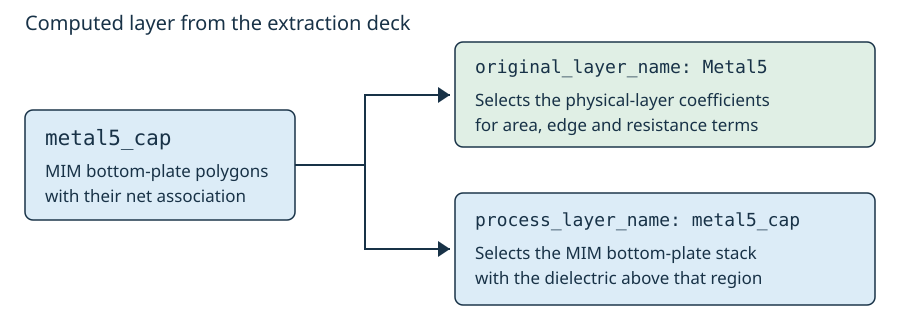
ihp-sg13g2 technology.
In Electronic Design and Automation (EDA) for Integrated Circuits (ICs), a schematic presents an abstraction in comparison to the layout that will eventually be taped-out and fabricated by the semiconductor foundry.
While in the schematic, a connection between device terminals is seen as an equipotential, the stacked geometries in a specific layout introduce parasitic effects, which can be thought of additional resistors, capacitors (and inductors), not modeled by and missing in the original schematic.
To be able to simulate these effects, a parasitic extraction tool (PEX) is used, to extract a netlist from the layout, which represents the original schematic (created from the layout active and passive elements) augmented with the additional parasitic devices.
This project is funded by the JKU/SAL IWS Lab, a collaboration of Johannes Kepler University and Silicon Austria Labs.
This project had been further funded by the German project FMD-QNC (16ME0831).
This project is further funded by the European project ODE4EC-AMS, which has received funding from the Chips Joint Undertaking (Chips JU) under Grant Agreement No 101252962. Funded by the European Union. Views and opinions expressed are however those of the author(s) only and do not necessarily reflect those of the European Union or the Chips Joint Undertaking. Neither the European Union nor the granting authority can be held responsible for them.
KLayout is an open source VLSI layout viewer and editor.
KLayout-PEX (short KPEX) is a PEX tool, well integrated with KLayout by using its API.
There are multiple PEX engines supported, currently:
FastCap2 integration (field solver engine, selected with --fastcap)magic)KPEX tool source code itself is made publicly available on GitHub (follow this link) and shared under the GPL-3.0 license.
KPEX documentation source code is made publicly available on GitHub (follow this link) and shared under the Apache-2.0 license.
Please feel free to create issues and/or submit pull requests on GitHub to fix errors and omissions!
The production of the tool and this document would be impossible without these (and many more) great open-source software products: KLayout, FasterCap, FastCap2, MAGIC, Palace, Elmer, OpenRCX, KQCircuits, protobuf, Quarto, Python, ngspice, Numpy, Scipy, Matplotlib, Git, Docker, Ubuntu, Linux…
Currently, KPEX is developed as a Python prototype, using the KLayout Python API. This allows for a faster development cycle during the current prototyping phase.
Eventually, critical parts will be re-implemented in Rust and parallelized to improve performance.
KPEX is experimental. Extraction and consistency checks do not establish calibrated accuracy for every device or layout.
| Engine | PEX mode | Status | What it produces |
|---|---|---|---|
KPEX/MAGIC |
CC, R, RC |
Available | Extraction through an installed magic executable |
KPEX/FasterCap |
CC |
Available, validation ongoing | Capacitance matrix from a field solver |
KPEX/FastCap2 |
CC |
Available, validation ongoing | Capacitance matrix from a field solver, selected with --fastcap |
KPEX/2.5D |
CC |
Available, validation ongoing | Coupling capacitances between equipotential nets |
KPEX/2.5D |
R |
Available, validation ongoing | Distributed resistance network |
KPEX/2.5D |
RC |
Available, validation ongoing | Distributed resistances with coupling capacitances |
KPEX/FastHenry2 |
R, L |
Planned | No extraction command in the current release |
RC includes coupling capacitances. There is no separate RCC value for --mode.
Generally, KPEX is deployed using PyPi (Python Package Index), install via:
As for the dependencies, there are multiple options available.
IIC-OSIC-TOOLS Docker ImageWe provide a comprehensive, low entry barrier Docker image that comes pre-installed with most relevant open source ASIC tools, as well as the open PDKs. This is a pre-compiled Docker image which allows to do circuit design on a virtual machine on virtually any type of computing equipment (personal PC, Raspberry Pi, cloud server) on various operating systems (Windows, macOS, Linux).
For further information please look at the Docker Hub page and for detailed instructions at the IIC-OSIC-TOOLS GitHub page.
In this document, we assume that users have a basic knowledge of Linux and how to operate it using the terminal (shell). If you are not yet familiar with Linux (which is basically a must when doing integrated circuit design as many tools are only available on Linux), then please check out a Linux introductory course or tutorial online, there are many resources available.
A summary of important Linux shell commands is provided in IIC-JKU Linux Cheatsheet.
MAGIC 8.3.693 or newer for the corrected sidewall counting (see Section 5.4)klayout-pex Python packagepip3 install --upgrade ciel (install PDK package manager)ciel ls-remote --pdk sky130A (retrieve available PDK releases
PRE-RELEASE 0c1df35fd535299ea1ef74d1e9e15dedaeb34c32 (2024.12.11))ciel enable --pdk sky130A 0c1df35fd535299ea1ef74d1e9e15dedaeb34c32 (install a PDK version)$HOME/.volare/sky130Aklayout-pex Python packagepip3 install --upgrade ciel (install PDK package manager)ciel ls-remote --pdk ihp-sg13g2 (retrieve available PDK releases
PRE-RELEASE cb7daaa8901016cf7c5d272dfa322c41f024931f (2025.07.18))ciel enable --pdk ihp-sg13g2 cb7daaa8901016cf7c5d272dfa322c41f024931f (install a PDK version)$HOME/.volare/ihp-sg13g2The Python package requires klayout>=0.30.12. KLayout 0.30.13 is recommended for terminal-lookup performance, neighborhood-visitor memory fixes and resistance-extraction crash fixes. The recommendation is a warning, so an environment still shipping 0.30.12 can run.
The CLI checks the Python module and the executable separately when both are used. Updating one does not update the other. An LVS-database-only extraction can use the module without the executable. The runtime table lists the version found, the required range and the recommended range.
--tool-version-checks |
Behavior |
|---|---|
on |
Default: unmet requirements stop the run, recommendations warn |
warn |
Report unmet requirements as warnings and continue |
off |
Skip version checks |
An unrecognized tool version is reported as unchecked. warn and off do not repair the numerical or performance defects of an older executable.
For --magic, KPEX 0.9.0 requires MAGIC 8.3.693 or newer, which removes an extra sidewall halving. Pure --2.5D extraction does not require a MAGIC executable. The remaining multi-polygon device-terminal limitation is separate from the recommendation to upgrade KLayout and is not resolved by installing 0.30.13.
meshlabFor previewing generated 3D geometries, representing the input to FasterCap, we recommend installing MeshLab. The generated STL-files are located at output/<design>/Geometries/*.stl.
kpex is used to trigger the parasitic extraction flow from the terminal.kpex extract --helpnetlist commandpex25d commandExample layouts are included in the testdata/designs subdirectory of the KLayout-PEX source code:
KPEX/2.5DFrom the KPEX source directory:
CC extracts capacitances with one equipotential node per net. R resolves the wire resistance, and RC adds the coupling capacitances to that distributed network. --blackbox y retains recognized device models instead of extracting their modeled capacitor interiors. Select it explicitly because the current prototype defaults to whiteboxing for development.
Use --schematic to follow an existing testbench interface (Section 6.4). RC enables consistency failures by default; Section 7 explains the diagnostics and the additional checks that can be requested.
Each run directory contains kpex_result.json, which records the output paths, warnings, errors and final status. A written netlist can coexist with failed checks, so inspect the exit status and diagnostics before simulation.
kpex pex25d generates a PEX25D geometry and material description without running a solver. It is separate from the analytical KPEX/2.5D engine. See Section 10.1 for the format specification, benefits, and standalone tools.
From the KLayout-PEX source directory:
The .pex25d file contains the text representation. The .pex25d.scene.pb file contains the resolved protobuf scene, including absolute layer heights and terminal intersections. Generation runs the reference validator by default; diagnostics determine the exit code even when output files have been written.
Use the standalone tool to inspect or validate an artifact:
For a complete, hand-written file that can be validated and exported without layout generation, use the downloadable example in Section 10.1.4. Terminal semantics and the current state of KLayout-generated terminals are explained in Section 10.1.5.7.
KPEX/FasterCap enginePreconditions:
klayout-pex was installed, see Section 1.5FasterCap was installed, see Section 1.5Normally, devices with SPICE (Nagel 1975) simulation models (e.g. like MOM-capacitors1 in the sky130A PDK) are ignored (“blackboxed”) during parasitic extraction.
kpex has an option --blackbox n to allow extraction of those devices (whiteboxing), which can be useful during development (during the prototype phase, whiteboxing is actually the default setting, so please use --blackbox y to explicitly configure blackboxing).
Let’s try the following:
This will report an error that we have not activated one or more engines, and list the available engines:
| Argument | Description |
|---|---|
--fastercap |
Run kpex/FasterCap engine |
--2.5D |
Run kpex/2.5D engine |
--magic |
Run MAGIC engine |
Now, to run the FasterCap engine (might take a couple of minutes):
Within the output directory (defaults to output), KPEX creates a subdirectory Geometries, containing STL-files that provide a preview of the FasterCap input geometries. Use MeshLab (see Section 1.5.4) to open and preview those files:
*.stl files in MeshLabcond_*.stl)diel_*.stl), to see how they surround the conductors.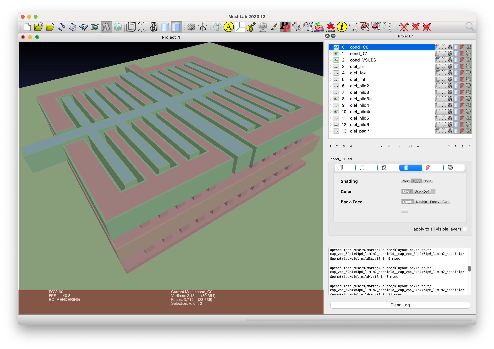
In the log file, we see the output of FasterCap including the Maxwell capacitance matrix:
Capacitance matrix is:
Dimension 3 x 3
g1_VSUBS 5.2959e-09 -4.46971e-10 -1.67304e-09
g2_C1 -5.56106e-10 1.5383e-08 -1.47213e-08
g3_C0 -1.69838e-09 -1.48846e-08 1.64502e-08KPEX interprets this matrix and prints a CSV netlist, which can be pasted into a spreadsheet application:
In addition, a SPICE netlist is generated.
KPEX/MAGIC enginePreconditions:
klayout-pex was installed, see Section 1.5magic was installed, see Section 1.5The MAGIC section of kpex extract --help describes the arguments and their defaults. Important arguments:
--magicrc: specify location of the magicrc file--gds: path to the GDS input layout--magic: enable magic engineA PDK2 supplies more than a list of GDS layer numbers. KPEX needs to know which shapes conduct, how they connect, what surrounds them in three dimensions, and which part of a device is already represented by its circuit model. The technology definition keeps these choices together, while the extraction algorithms remain independent of the PDK.
--pdk selects a complete combination of extraction deck, layer stack, parasitic tables and device mappings. Choose the variant used by the layout and its simulation models. Changing only a top-metal name cannot turn one stack into another.
--pdk value |
Stack selected by KPEX |
Extraction deck |
|---|---|---|
sky130A |
li1, five routing metals and the configured MIM plates |
sky130.lvs |
gf180mcuD |
Five routing metals, thick Metal5 and MIM option B |
gf180mcu.lvs |
ihp-sg13g2 |
Five thin metals, TopMetal1, TopMetal2 and MIM plates |
sg13g2.lvs |
ihp-sg13cmos5l |
Four thin metals and TopMetal1 |
sg13cmos5l.lvs |
The older spelling ihp_sg13g2 remains an alias for ihp-sg13g2. Use the hyphenated spelling in new commands and scripts. The other three spellings in Table 3 are the accepted identifiers, including their capitalization.
This is a list of extraction configurations, not a claim that every device of each PDK has a simulation mapping. An extracted device without a supported mapping produces an error instead of a guessed model call.
The PEX extraction decks use KLayout’s LVS facilities to recognize devices and establish connectivity. This step produces the flat netlist and the named, net-associated polygons in the LVSDB. Comparing that result with a schematic is a separate operation.
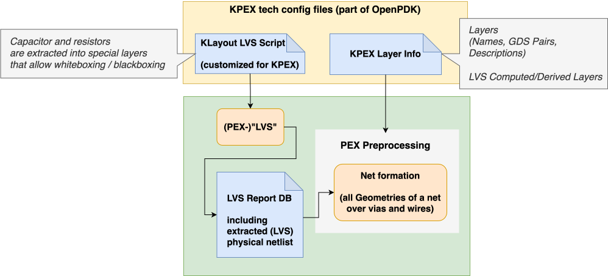
KPEX net formationThe deck and technology definition must agree on the meaning of each computed layer. A name alone is insufficient: a piece of drawn metal may have a different role inside a capacitor than outside it.

ihp-sg13g2 technology.
There are three identities to keep distinct:
For example, the ihp-sg13g2 deck splits drawn Metal5 into ordinary routing, MIM3 bottom-plate and device-related regions. All use coefficients keyed by Metal5, but their process layers distinguish metal under the MIM dielectric from ordinary metal.
ihp-sg13g2 technology
| Computed layer | Original layer | Process layer | Meaning |
|---|---|---|---|
metal5_n_cap |
Metal5 |
metal5_n_cap |
Ordinary metal |
metal5_cap |
Metal5 |
metal5_cap |
MIM bottom plate |
metal5_rfcap |
Metal5 |
metal5_cap |
RF MIM bottom plate |
metal5_rfcap_feed |
Metal5 |
metal5_n_cap |
RF MIM feed metal |
metal5_mom |
Metal5 |
metal5_n_cap |
MOM finger metal |
The computed-layer kind also specifies whether a region is ordinary conductor, a modeled capacitor plate, a resistor region, or device-internal geometry. This is why removing a capacitor from the parasitic sum does not necessarily remove its plates from shielding or from coupling to other nets. See Section 6 and the section on excluding parts of the layout for the extraction choices.
When adding a deck, assign stable names with name(layer, name). Keep the named device regions and the technology’s layer identities consistent. A pin label, a device plate and a physical routing layer are different contracts even when they originate from the same drawn GDS layer.
The technology definition uses a Protocol Buffers schema and is distributed as JSON. Its parts answer different questions:
| Technology data | Question answered | Used for |
|---|---|---|
| Drawn and computed layers | Which shapes, labels and device regions have this meaning? | Connectivity, port discovery and exclusions |
| Process stack | Where is each conductor, and which dielectric surrounds it? | 3D geometry |
| Parasitic tables | What sheet resistance and fitted capacitance coefficients apply? | KPEX/2.5D |
| Device mappings | How is an extracted device written for the circuit model? | Netlist export and schematic comparison |
| Substrate definition | Which net or label represents the substrate? | Substrate terminal handling |
| Model capacitance references | What nominal device coupling can be compared independently? | Device-capacitance checks |
The main schema is tech.proto. It incorporates process_stack.proto, process_parasitics.proto, device_models.proto and the substrate definition. These schemas define the data contract; the generated JSON contains the values for a particular variant.
Changing a dielectric height does not automatically refit the KPEX/2.5D coefficients. The stack and tables are separate inputs. This matters when comparing a three-dimensional solve with the table-based engine: both must describe the same intended physical process.
For 3D solvers, like the KPEX/FasterCap engine, 3D information about the dimensions (e.g. z-offset and thickness) of metal layers is required, as well as the dielectrics in-between.
The sky130A stack illustrates why a list of metal heights alone is not enough: several different dielectric profiles surround the same conductor.

sky130A process stack (Source: (Authors 2020))
The stack distinguishes conductors from the material around them:
poly, metal1 and metal5 have a thickness and a bottom height relative to the substratelicon and via1, connect conductors on adjacent levelsIOX and SPNIT, specify lateral width and height above metalLINT and TOPNIT, specify thickness above metal, beside it and in the fieldPSG and NILD2, fill the remaining region between levelsThe relative permittivity \(k\) belongs to each dielectric. A stack may therefore contain several dielectric boundaries around one piece of metal. The schematic labels above and the technology’s physical-layer names need not be identical; their correspondence is explicit in the technology definition.
The schema excerpt below shows how these relationships are expressed:
ProcessStackInfo.layers orders the layers of the stackMetalLayer.z locates the metal bottom relative to the substrateMetalLayer.contact_above describes the contact to the next conductorreference identifies the layer or profile it wrapsSPNIT wraps IOX, which wraps polymessage ProcessStackInfo {
enum LayerType { …
LAYER_TYPE_SIMPLE_DIELECTRIC = 50;
LAYER_TYPE_CONFORMAL_DIELECTRIC = 60;
LAYER_TYPE_SIDEWALL_DIELECTRIC = 70;
LAYER_TYPE_METAL = 80;
}
message Contact { // Contact/Via
string name = 1;
string layer_below = 9;
string metal_above = 10;
double thickness = 20;
double width = 30;
double spacing = 31;
double border = 32;
}
…
message SimpleDielectricLayer { // Simple dielectric
double dielectric_k = 10;
string reference = 30;
}
message ConformalDielectricLayer { // Conformal dielectric
double dielectric_k = 10;
double thickness_over_metal = 20;
double thickness_where_no_metal = 21;
double thickness_sidewall = 22;
string reference = 30;
}
message SidewallDielectricLayer { // Sidewall dielectric
double dielectric_k = 10;
double height_above_metal = 20; // might be 0 if none
double width_outside_sidewall = 21;
string reference = 30;
}
message MetalLayer { // Metal
double z = 1; // z-offset in µm (of layer bottom), above substrate
double thickness = 2; // thickness in µm
Contact contact_above = 40;
}
message LayerInfo {
string name = 1;
LayerType layer_type = 2;
oneof parameters { …
SimpleDielectricLayer simple_dielectric_layer = 12;
ConformalDielectricLayer conformal_dielectric_layer = 13;
SidewallDielectricLayer sidewall_dielectric_layer = 14;
MetalLayer metal_layer = 15;
}
}
repeated LayerInfo layers = 100;
}gf180mcuDThe top surface is an instructive example of why the reference of a dielectric matters. For the selected 1P5M/11KA/MIM-B stack, the maintained cross-section drawing gives the oxide surface relative to the bottom of Metal5.
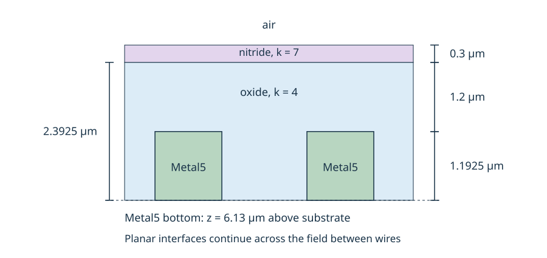
gf180mcuD, shown relative to the bottom of Metal5. Vertical distances follow the selected cross-section; horizontal widths are illustrative.
Metal5 is \(1.1925\,\mu\mathrm{m}\) thick. The planar oxide surface is \(2.3925\,\mu\mathrm{m}\) above its bottom, leaving \(1.2\,\mu\mathrm{m}\) of oxide over the metal. A \(0.3\,\mu\mathrm{m}\) nitride layer sits above that surface. Its relative permittivity is \(7\), while the oxide uses \(4\), as recorded in the maintained dielectric table.
The technology expresses these planar surfaces using two wrapped dielectric profiles:
pass wraps Metal5, with \(1.2\,\mu\mathrm{m}\) above metal and \(2.3925\,\mu\mathrm{m}\) in the fieldsin wraps pass, with \(0.3\,\mu\mathrm{m}\) above the oxide and \(2.6925\,\mu\mathrm{m}\) in the fieldThe field height of sin includes the oxide height because it is measured from the wrapped profile’s bottom. Treating it as only \(0.3\,\mu\mathrm{m}\) would place nitride near the bottom of the gap instead of above the oxide.
The general dielectric table lists \(2.3\,\mu\mathrm{m}\) for the 11KA oxide. KPEX uses the detailed cross-section’s \(2.3925\,\mu\mathrm{m}\) consistently with the metal thickness from the same drawing. This is an explicit source choice, not a fitted capacitance correction. The maintained community PDK repository is the source of these dimensions.
The capacitance tables are a compact model of geometry. Each family has different dimensions because it multiplies a different geometric quantity. Mixing their units can yield plausible-looking values with the wrong scale.
| Table family | Stored quantity | Unit | Geometric factor |
|---|---|---|---|
| Substrate area | Area density | \(\mathrm{aF}/\mu\mathrm{m}^{2}\) | Exposed area |
| Substrate perimeter | Edge density | \(\mathrm{aF}/\mu\mathrm{m}\) | Edge length and fringe fraction |
| Interlayer overlap | Area density | \(\mathrm{aF}/\mu\mathrm{m}^{2}\) | Unshielded overlap area |
| Same-layer sidewall | Numerator \(b\), offset \(o\) | \(\mathrm{aF}\), \(\mu\mathrm{m}\) | Length divided by effective gap |
| Directed side overlap | Edge density | \(\mathrm{aF}/\mu\mathrm{m}\) | Edge length and fringe fraction |
For an overlap area \(A\) and area coefficient \(c_A\), the model contribution is \(C=c_A A\). The coefficient is per square micrometre. A perimeter or fringe coefficient instead multiplies a length, and the fringe calculation supplies the fraction left after distance limits and shielding.
The sidewall coefficient has a different form. For two facing parallel edges of length \(L\), gap \(s\) and fitted offset \(o\), the table convention is
\[ C_{\mathrm{pair}}=b\,\frac{L}{s_{\mathrm{eff}}}, \qquad s_{\mathrm{eff}}=\max(s+o,s/2). \]
The ratio of lengths is dimensionless, so \(b\) is in attofarads. It is not an area density or a capacitance per micrometre. A negative fitted offset is allowed; the lower bound on effective separation prevents a zero or negative denominator for positive gaps. For a varying gap, integrate this density along the edge instead of substituting an average gap.
This equation defines the full-pair coefficient convention. In KPEX 0.9.0, each of the two directed visits contributes half, so their sum follows this law. Earlier versions applied an extra halving. The coefficient must not be doubled to compensate for that older behavior: contribution counting and physical table values are separate parts of the model.
The stored capacitance units are attofarads; extraction reports commonly use femtofarads, with \(1000\,\mathrm{aF}=1\,\mathrm{fF}\). Resistance tables use milliohms per square for sheets and milliohms per contact or via cut.
A side-overlap row from an edge on Metal1 toward a conductor on Metal2 describes a different geometric contribution from a row in the reverse direction. These coefficients can differ without violating reciprocal capacitance: the final coupling of a node pair includes the applicable contributions, not a choice of just one directional row.
Physical comparisons need the whole environment:
Shared lower-layer dimensions do not make two complete stacks identical. Different upper metals or passivation can change the fitted capacitance of those lower conductors.
The tables are based in part on the extraction sections of MAGIC technology files. Importing those values does not import MAGIC’s layer classification, device recognition, shielding or grid rounding. Agreement of one test pattern therefore does not establish agreement for every layout.
An LVS device class is not necessarily the model name or primitive type expected by a simulator. The mapping declares:
M or XFor example, the ihp-sg13* LVS class rfnmos maps to an X call of sg13_lv_nmos with rfmode=1. Its terminal order is D, G, S, B. The mapping supplies this information explicitly instead of assuming that every four-terminal device is a native MOS model.
Lengths and areas also need an explicit contract. An ihp-sg13* LVS length stored in micrometres is exported to the model in metres using lvs_parameter_factor=1e-6. An area needs the square of that length factor. A mapping may give schematic_parameter_factors for different SPICE prefixes: a native M device read with geometry scaling and an X wrapper parameter do not have identical unit semantics. These factors describe the PDK model interface; they are separate from the netlist’s .option scale setting.
For symmetric area/perimeter models, the mapping can recover equivalent rectangle sides from area \(A\) and perimeter \(P\). The sides solve \(wl=A\) and \(2(w+l)=P\). This preserves those two geometric quantities without claiming to recover the original orientation. It is unsuitable for a transistor or varactor whose model depends differently on width and length.
A KIND_METAL_CAPACITOR mapping can also contain capacitance_references. These describe the nominal mutual capacitance of a particular unordered terminal pair. They are used by the device-capacitance check, not to tune the extraction result.
Each reference states:
The instance multiplier belongs in the reference exactly once. A validity condition restricts the expression to the supported geometry; it is not permission to extrapolate outside the model’s domain. The check evaluates the recorded expression without running a simulator or searching arbitrary SPICE libraries.
The bundled references currently cover cap_cmomf and cap_cmomi in ihp-sg13*. The cap_cmomf reference uses nominal area density and the selected metal count. The cap_cmomi reference additionally reflects its discrete finger array and feed option. Their provenance is pinned to the device model sources.
These references do not include process-corner or mismatch variation. Some densities are estimates or derived from a sibling stack, as stated in each reference’s description. A ratio between extracted and nominal capacitance helps find a discrepancy; it does not by itself identify which model is physically correct. Unlisted device pairs have no such reference check.
The built-in definitions are produced by Python generators4. The generated JSON and Python schema modules are packaged in the distribution, but are not committed source files in the code repository. Editing an installed JSON file is temporary: a rebuild or package upgrade replaces it.
For a source change:
./gen_tech_pb.sh from the klayout-pex checkout to regenerate the schema modules and all built-in JSON definitionsThe generators contain deliberate projections, not only verbatim copies of upstream tables. Diffusion rows may be shared between extracted implant or tap regions. MIM plates retain their model-derived plate coupling while surrounding parasitics come from other rows. Resistance overrides have their own sources. A table refresh must preserve these distinctions and show changed values for review.
The nominal sky130A and gf180mcuD tables in KPEX 0.9.0 follow the maintained open-pdks extraction sources. The ihp-sg13g2 and ihp-sg13cmos5l tables use the corrected extraction fits at 14b1ab8. These refreshes preserve the diffusion and MIM derivations and resistance overrides. They do not change the independent device-model references. Automatic calibration and selectable capacitance corners are not available in 0.9.0.
The previews below contain the generated technology definitions from klayout-pex 0.9.0, including the device mappings, gf180mcuD passivation and refreshed nominal capacitance tables. They show the data packaged with that release; your local installation may contain a different version.
To inspect the data actually installed, locate klayout_pex_protobuf beside the klayout_pex package in site-packages5. Its filenames use the PDK identifiers from Table 3, followed by _tech.pb.json.
KPEX/FasterCap EngineFasterCap is a 3D and 2D parallel capacitance field solver, inspired by FastCap2. https://www.fastfieldsolvers.com/fastercap.htm
Starting from an input layout (e.g. GDS file) and a process stack-up (part of the Section 3.3), KPEX creates input geometries for FasterCap. After running FasterCap, the Maxwell capacitance matrix is parsed and interpreted to obtain the parasitic capacitances.
See Section 2.4 to get started with a first extraction example.
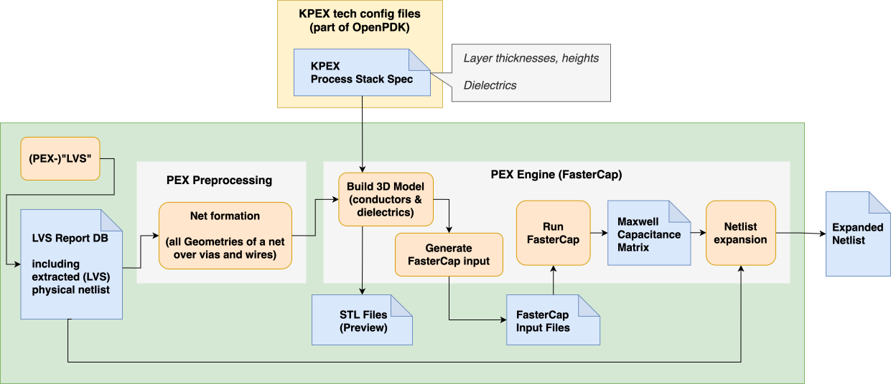
KPEX/FasterCap Engine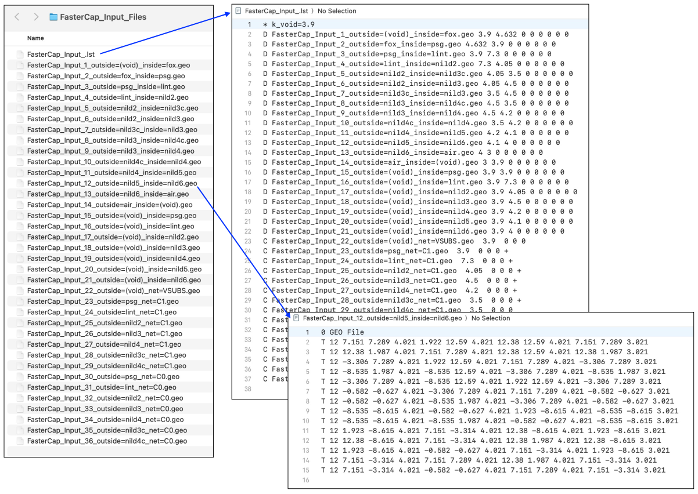
FasterCap 3D Input: File System OverviewThe FasterCap input files and their format is documented in (Di Lorenzo 2019), a PDF version of the Windows-specific *.chm file is available at https://github.com/martinjankoehler/FasterCap/tree/master/doc/pdf.
KPEX generates 3D input geometries:
*.lst file: Main input file
*.geo file*.geo files: Defines single geometry
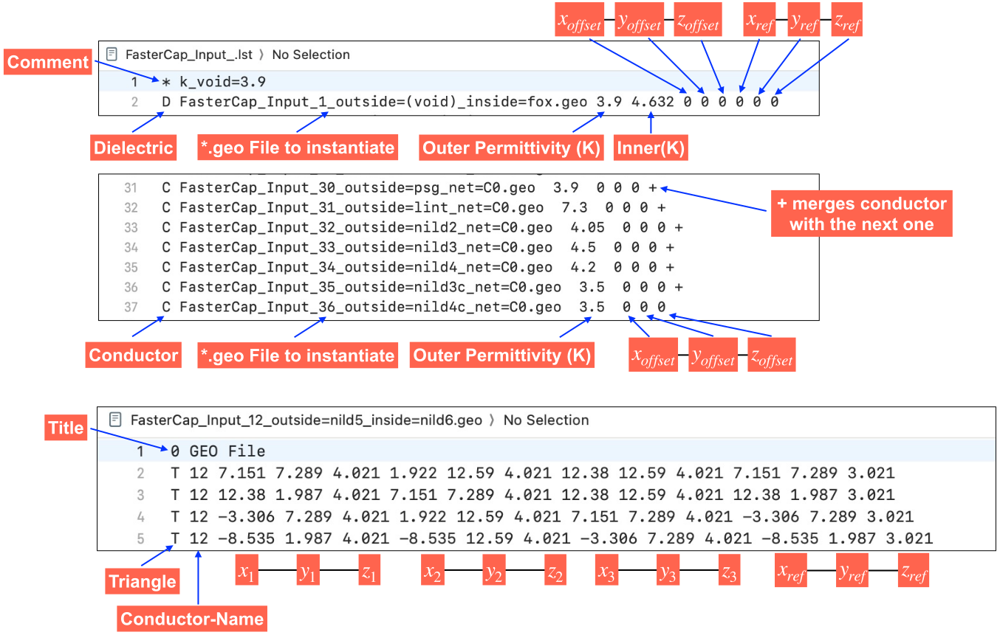
FasterCap 3D Input: File Format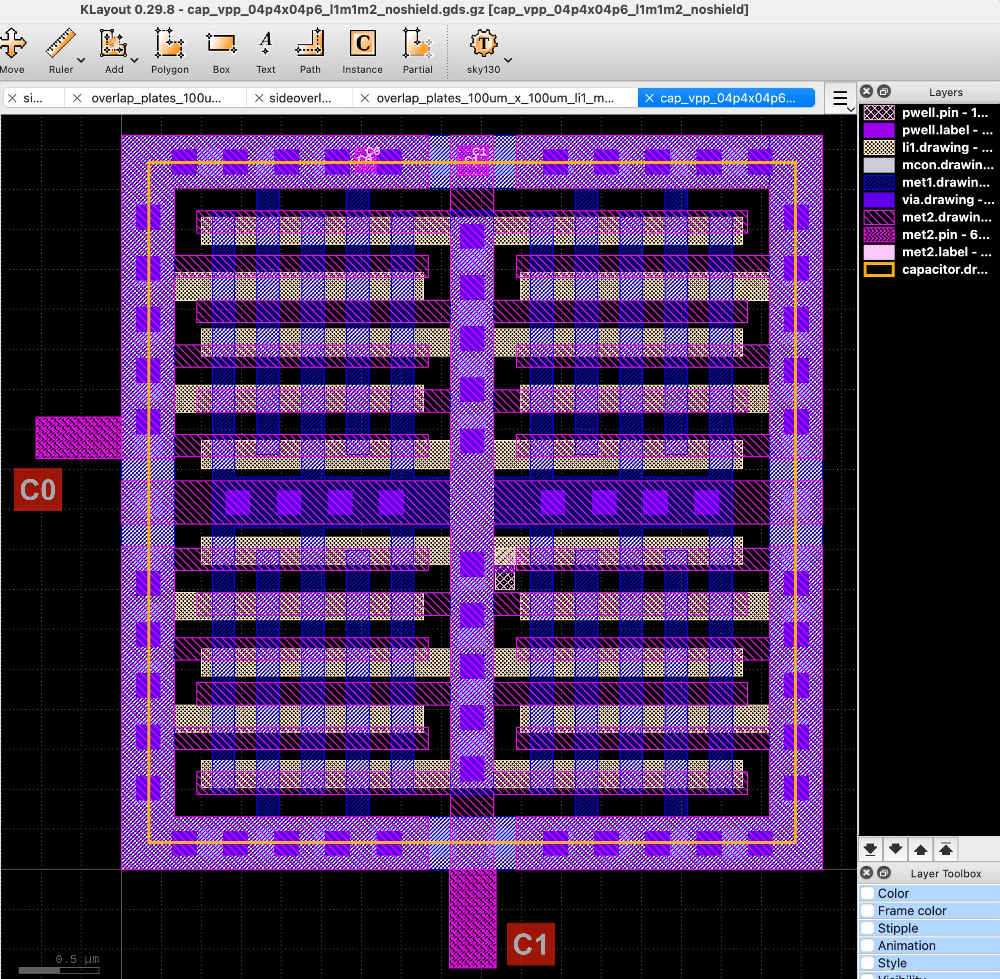
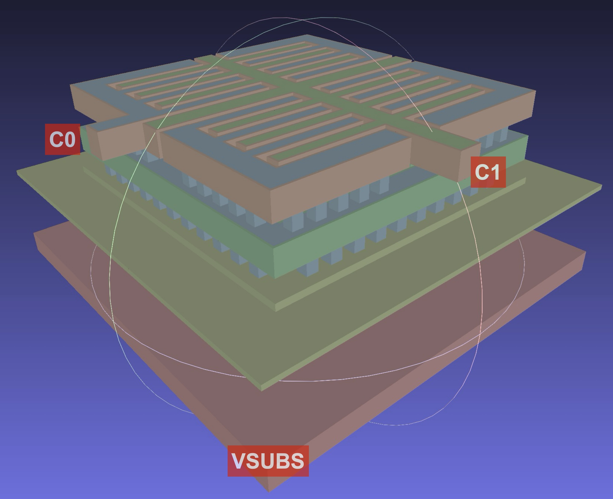
MeshLab 3D PreviewFigure 4 depicts the MOM capacitor from Section 2.4.
The corresponding schematic representation of Figure 5 contains 3 conductors (\(N_1\), \(N_2\) and \(N_3\)), and coupling capacitances:
A Maxwell capacitance matrix (Maxwell 1873) provides the relation between voltages on a set of conductors and the charges on these conductors, as described by the FasterCap author in the white paper (Di Lorenzo 2023).
FasterCap log output prints the Maxwell capacitance matrix (one for each iteration/refinement).
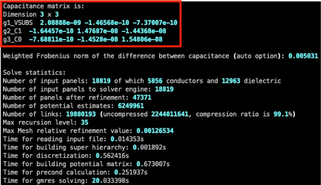
FasterCap Log Output: Maxwell Capacitance MatrixFastCap2 did average the off-diagonalsFasterCap does not average, so it’s done as part of KPEX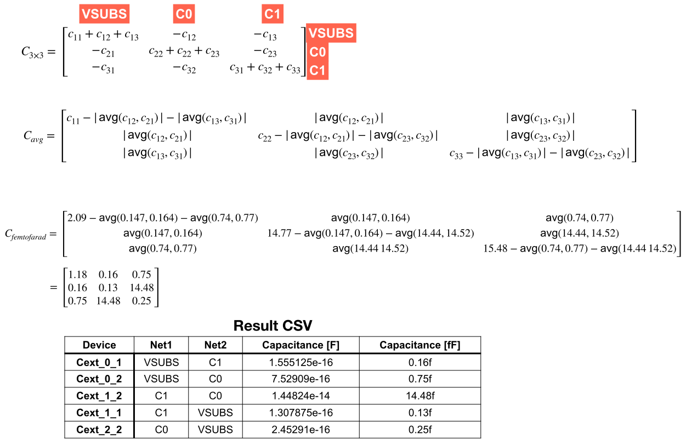
FasterCap Maxwell Capacitance Matrix: InterpretationKPEX/MAGIC EngineThis engine is merely just a wrapper around magic, which prepares a TCL script that opens the layout file and starts MAGIC’s PEX flow. See Section 2.5 to get started with a first extraction example.
The following chapter will illustrate concepts of the parasitic extraction done in MAGIC, also motivated by the fact that the engine in Section 6 will be based on those. Major parts of this illustration, the figures and concepts are based on work done by MAGIC maintainer Tim Edwards, especially his talk from FSiC conference 2022 (Edwards 2022) and a (conceptual follow-up) ChipsAlliance meeting on April 4, 2023, see (Edwards 2023b) and (Edwards 2023a). In addition, code review and debugging of the MAGIC codebase was performed.
sky130A, \(\alpha = 200.0\)MAGIC models multiple types of capacitances:
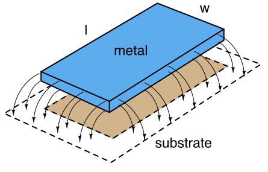
Overlapping area: \[ C_{area} = \frac{\epsilon_{si} * K}{d} * \text{area} \,\,\,\,\,\,\, \left[ \frac{F}{\mu m^2} * \mu m^2\right] \]
Fringe (“Perimeter”): \[ C_{fringe\,to\,substrate} = \text{perimeter} * C_{perim} = (2l + 2w)*C_{perim} \]
Coefficients like \(C_{perim}\) are part of the tech files (Parasitic Tables)
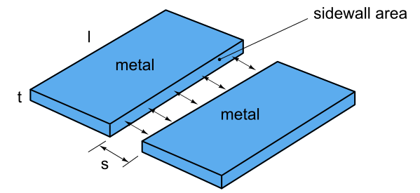
\[ C_{sidewall} = \frac{\epsilon_{si} * K}{s} * \text{sidewall area} \,\,\,\,\,\,\, \left[ \frac{F}{\mu m^2} * \mu m^2\right] \] \[ \,\,\,\,\,\,\,\,\,\,= \frac{\epsilon_{si} * K}{s} * t * l \,\,\,\,\,\,\, \left[ \frac{F}{\mu m^2} * \mu m * \mu m\right] \] \[ C_{sidewall} = \frac{C_{sidewall\,coeff}}{s} * l \,\,\,\,\,\,\, \left[ \frac{F}{\mu m} * \mu m\right] \]
The coefficient describes the coupling between the two facing sidewalls, but MAGIC walks every edge, so each of the two edges contributes half of it:
\[ C_{sidewall\,per\,edge} = \frac{1}{2} * \frac{C_{sidewall\,coeff}}{s} * l \]
The sidewall coefficient describes the full pair. Half belongs to each directed edge visit. A second halving of the already weighted coefficient makes the pair too small by a factor of two.
MAGIC 8.3.693 removes that extra halving during final technology processing. The earlier interpretation that revisions before 8.3.679 simply counted the pair twice was incorrect. The upstream correction explains the two sites that applied the factor.
KPEX 0.9.0 restores the full pair value for both constant and sloped gaps. Updating the physical coefficient tables is a separate change: multiplying all extraction results by two would also alter overlap and fringe contributions, which are not affected by this counting correction.
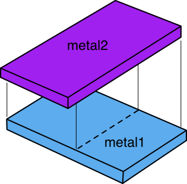
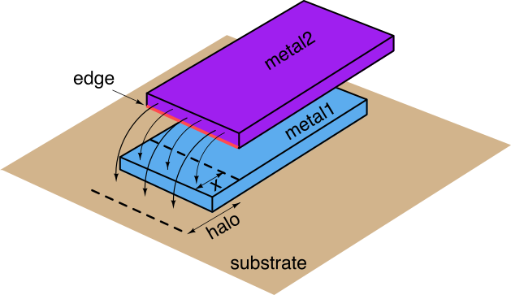
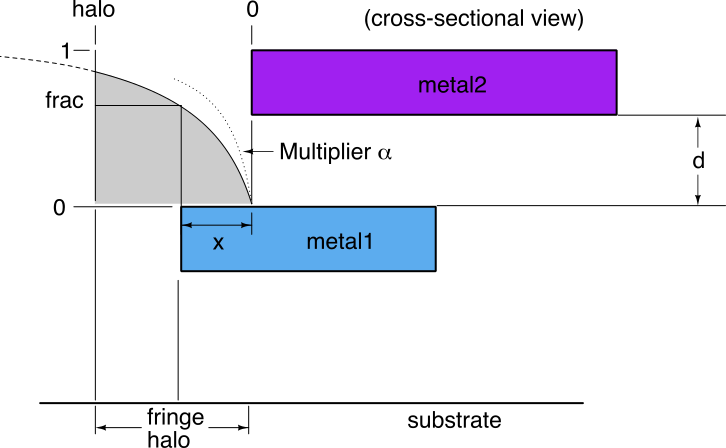
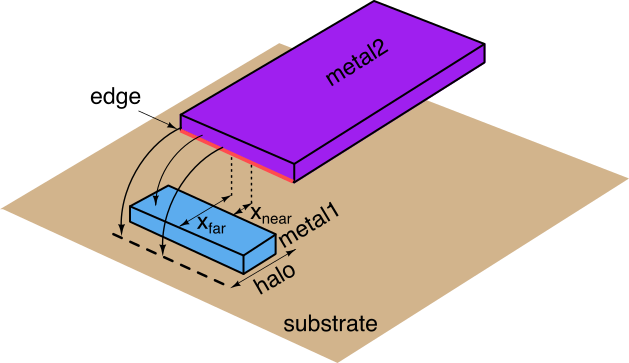
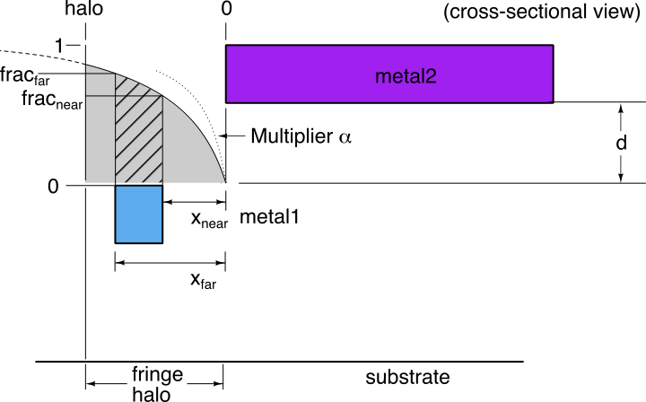
| Type | Shielding | ||
|---|---|---|---|
| To Substrate | Between layers | On same layer | |
| Overlap shielding | ✔ | ✔ | ✘ |
| Sidewall shielding | ✘ | ✘ | ✔ |
| Lateral fringe shielding | ✘ | ✔ | ✔ |
| Vertical fringe shielding | ✔ | ✔ | ✘ |
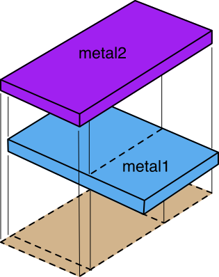
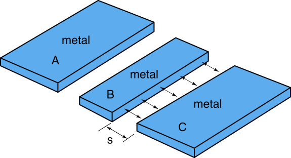
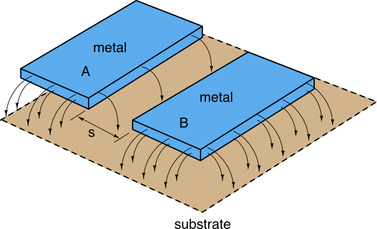
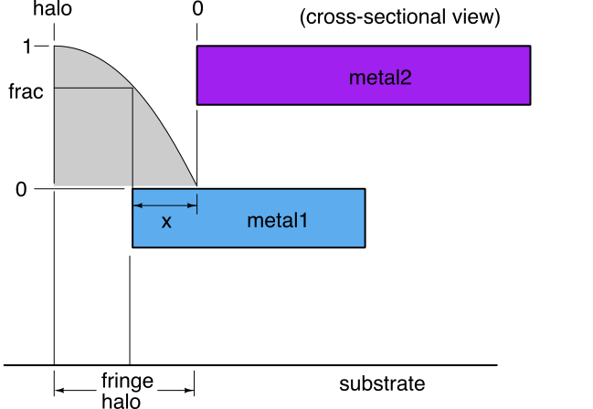
Note, given an analyzed sidewall (edge in 2D), lateral fringe shielding
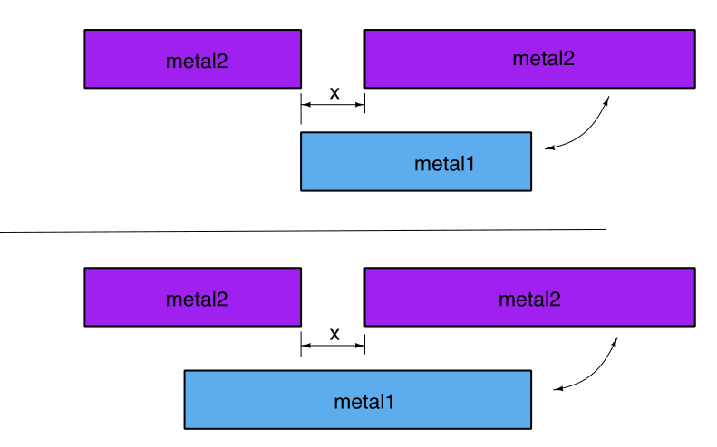
Magic constructs a graph of resistors between nodes
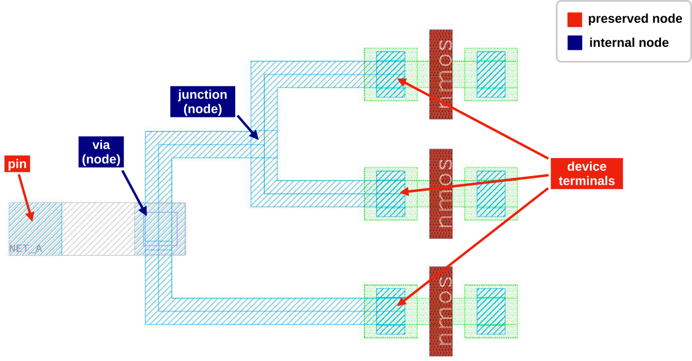
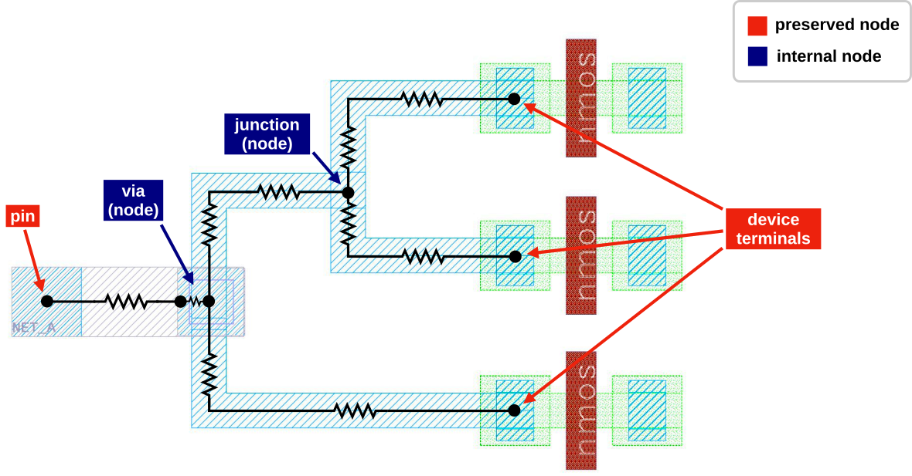
Given a wire with length \(l\) and height \(h\), the basic formula is \[ R_{wire} = \frac{l}{h} * R_{coeff} \,\,\,\,\,\,\, \left[ \frac{\mu m}{\mu m} * mΩ\right] \]
Coefficient \(R_{coeff}\) is part of the tech files (Parasitic Tables)
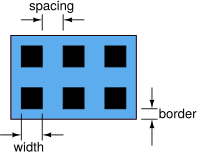
MAGIC interpretation of the via drawing
MAGIC counts 1 via in each direction\[ R_{via} = \frac{R_{coeff}}{n_x * n_y} \,\,\,\,\,\,\, \left[\frac{mΩ}{\text{via count}}\right] \]
\[ n_x = 1 + \left\lfloor\frac{w - (viawidth + 2 * border)}{viawidth + spacing}\right\rfloor \]
\[ n_y = 1 + \left\lfloor\frac{h - (viawidth + 2 * border)}{viawidth + spacing}\right\rfloor \]
KPEX/2.5D EngineThis analytical extraction engine is separate from the PEX25D interchange format described in Section 10.1. kpex extract --2.5D selects the engine; kpex pex25d generates a geometry and material description without running an engine.
Field solvers are precise, yet slow, they are useful to obtain a golden reference.
For most use cases, a faster engine is desirable. KPEX/MAGIC is such an engine, but the MAGIC code is tightly coupled with the database, layer/via design choices, and user interface of MAGIC. For example, it runs single-threaded.
Therefore, the KPEX 2.5D Engine intends to implement the concepts and formulas of MAGIC (see Section 5.2), but in a way that is best suited to the KLayout API, and is modular and open for parallel execution.
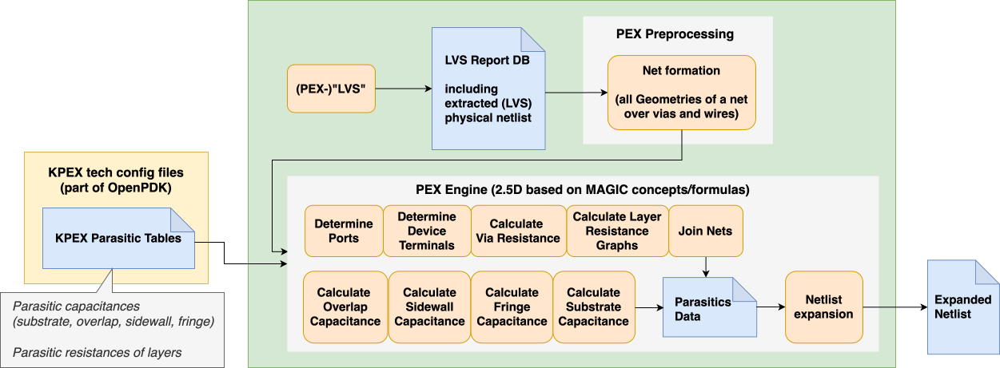
KPEX 2.5D Engine
In Figure 9, we see that as in the KPEX/FasterCap engine (see Section 4), a “LVS” script is used to extract the connectivity information and create an LVS report database.
As mentioned in Section 1.4, KPEX uses the KLayout API. During the course of this project, in cooperation with Matthias Köfferlein, the KLayout API was extended, in order to simplify parasitic extraction.
The engine uses those new API classes to extract parasitic capacitances:
klayout.db.PolygonNeighborhoodVisitor (since 0.30.1): used during the extraction of overlap capacitances (see Section 5.5)klayout.db.EdgeNeighborhoodVisitor (since 0.30.1): used during the extraction of sidewall capacitances (see Section 5.4) and fringe capacitances (see Section 5.6)klayout.db (since 0.30.1): store net information directly on polygons, edges, edge pairs and boxesThe engine uses those new API classes to extract parasitic resistances:
klayout.pex module (since KLayout 0.30.2)
klayout.pex.RNetExtractor: used to extract resistance networksklayout.pex.RExtractorTech: minimal process stack description for conductor and via layers--mode CC keeps each connected net equipotential. --mode R breaks its conductors into a resistance network. --mode RC places extracted capacitances on that distributed network as well, so the position of a load along a wire affects the simulated response.
The capacitance model has separate area-overlap, facing-sidewall and fringe terms. Polygon integration preserves their geometric meaning for sloped boundaries (Section 6.2). It does not turn the analytical model into a field solver or remove the need to check its coefficients against the intended technology.
The halo limits which neighboring geometry participates in sidewall and fringe extraction. Keep the same halo and fringe normalization when comparing runs. Recent neighborhood batching and rectangular-shield interval subtraction reduce repeated geometric work while retaining the polygon path for general shapes. They do not justify shrinking the halo to obtain a faster result.
A wire does not have to end in a rectangle. A taper, a diagonal segment, or a shield with a hole changes the distance to the neighboring conductor along the edge. KPEX/2.5D integrates that changing geometry using the same overlap, sidewall, and fringe models introduced in Section 5.2.
This extends where those models can be applied. It does not turn the analytical extraction into a three-dimensional field solution: the dielectric stack and fitted parasitic coefficients still determine the model’s accuracy.
For each source edge, imagine rotating the layout until that edge lies on the horizontal axis. Let \(x\) run along the edge and \(y\) point outwards from its conductor. The local coordinate system is attached to the edge, so a diagonal wire needs no special capacitance formula.
The neighborhood is divided into intervals where the facing boundaries remain straight. Within one interval:
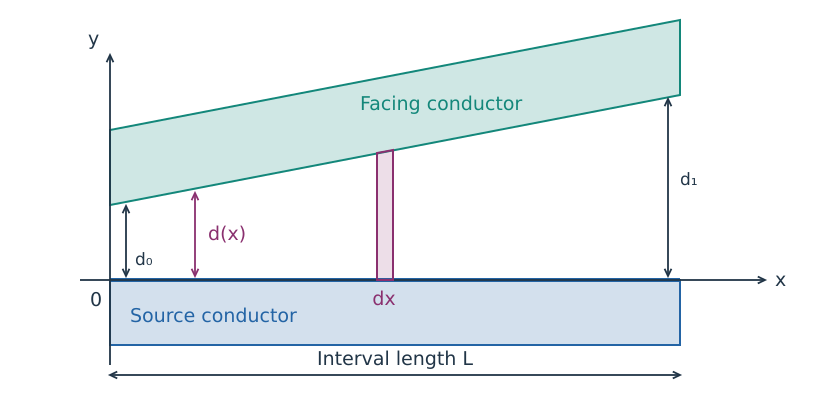
A bounding box loses this information. It fills the empty space beside a triangle and across a hole. Using the minimum distance everywhere also assigns the closest part’s stronger coupling to the whole edge.
Overlap capacitance needs no distance integration in this plane. It is proportional to the actual unshielded intersection area, including the subtraction of holes:
\[ C_{\mathrm{overlap}} = \frac{k_{\mathrm{ov}}}{1000}\,A_{\mathrm{visible}}. \]
Here \(k_{\mathrm{ov}}\) is in \(\mathrm{aF}/\mu\mathrm{m}^2\), area is in \(\mu\mathrm{m}^2\), and the result is in \(\mathrm{fF}\).
Take an edge interval of length \(L\) with endpoint gaps \(d_0\) and \(d_1\):
\[ d(x)=d_0+\frac{d_1-d_0}{L}\,x,\qquad 0\leq x\leq L. \]
The technology fit adds an offset \(o\) to the physical gap. For a positive physical gap, a negative offset must not make the fitted separation zero or negative. KPEX/2.5D therefore uses
\[ s(d)=\max\left(d+o,\frac d2\right). \]
The geometry factor is the integral of the reciprocal separation:
\[ G_{\mathrm{sw}}=\int_0^L \frac{dx}{s(d(x))}. \]
For a full-pair sidewall coefficient \(k_{\mathrm{sw}}\) in \(\mathrm{aF}\), one directed edge contributes
\[ C_{\mathrm{sw,edge}}=\frac{k_{\mathrm{sw}}G_{\mathrm{sw}}}{2\cdot1000} \quad [\mathrm{fF}]. \]
The two directed visits together count the pair once. The geometry integral introduces no additional half, and the conversion from \(\mathrm{aF}\) to \(\mathrm{fF}\) divides by \(1000\). This counting convention is separate from the shape of the gap (Section 5.4).
If the whole interval uses \(s=d+o\), the integral has a closed form:
\[ G_{\mathrm{sw}}= \begin{cases} \displaystyle \frac{L}{d_0+o}, & d_0=d_1,\\[8pt] \displaystyle \frac{L}{d_1-d_0} \ln\left(\frac{d_1+o}{d_0+o}\right), & d_0\ne d_1. \end{cases} \]
The logarithm is the result of integrating \(1/(a+bx)\). It is not a correction fitted specifically to diagonal wires. Reversing the edge exchanges \(d_0\) and \(d_1\) and changes both signs, leaving the result unchanged.
For a negative \(o\), the two separation branches meet at \(d=-2o\). If a taper crosses that gap, split its integral there. On the clamped part, integrate \(2/d\) instead of \(1/(d+o)\). The two branches agree at the split, so no capacitance jump is introduced.
Consider \(L=4\,\mu\mathrm{m}\), a gap widening from \(0.2\) to \(0.6\,\mu\mathrm{m}\), and \(o=0.1\,\mu\mathrm{m}\). These values describe a geometry exercise, independently of any PDK coefficient:
\[ G_{\mathrm{sw}}= \frac{4}{0.6-0.2}\ln\left(\frac{0.6+0.1}{0.2+0.1}\right) =10\ln(7/3). \]
Replacing the taper by its mean gap gives \(4/(0.4+0.1)=8\). The integral is larger because reducing a small gap strengthens coupling more than increasing an already large gap weakens it.
The first half of the edge carries the fraction
\[ \frac{C_{[0,L/2]}}{C_{[0,L]}} =\frac{\ln(5/3)}{\ln(7/3)}, \]
which is greater than one half. This matters when the capacitance is assigned to different nodes of an extracted resistor network.
The fringe model uses a cumulative fraction
\[ F(y)=\frac{2}{\pi}\arctan\bigl(\alpha\max(0,y)\bigr). \]
\(F(y)\) describes how much of the fringe is reached by distance \(y\). Its slope decreases with distance. A strip near the source edge therefore receives more fringe than an equally wide strip farther away.
For a strip extending from \(n(x)\) to \(f(x)\), the received fraction is \(F(f(x))-F(n(x))\). Integrating along the source edge gives
\[ C_{\mathrm{fringe}}= \frac{k_{\mathrm{fr}}}{1000\,N} \int_0^L \left[F(f(x))-F(n(x))\right]dx. \]
\(k_{\mathrm{fr}}\) is the directional side-overlap coefficient in \(\mathrm{aF}/\mu\mathrm{m}\). \(N\) describes halo normalization, explained below. The overlap table supplies the parameter \(\alpha\) for this source/target layer pair, while the side-overlap table supplies \(k_{\mathrm{fr}}\). They play different roles: one sets the distance dependence, the other its magnitude.
In the current coefficient convention, the numerical value of \(\alpha\) in \(\mu\mathrm{m}^{-1}\) is \(0.02\) times the overlap coefficient in \(\mathrm{aF}/\mu\mathrm{m}^2\). This scaling belongs to the empirical fringe model; it is not an identity between capacitance and inverse distance.
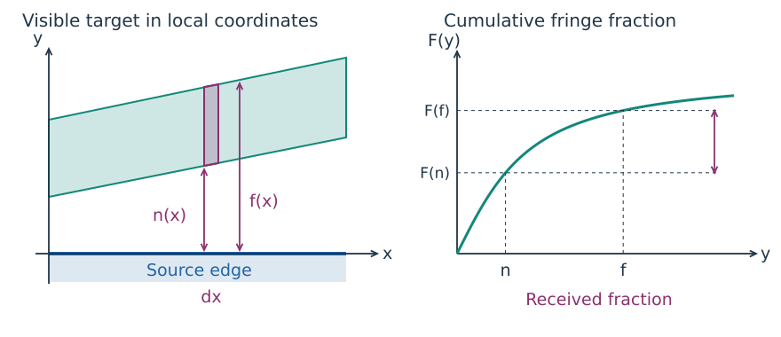
The near and far boundaries of a trapezoid are linear functions. Their integrals can be evaluated analytically using
\[ J(z)=z\arctan(z)-\frac12\ln(1+z^2), \qquad J'(z)=\arctan(z). \]
For \(q(x)=q_0+mx>0\), \(m\ne0\) and \(\alpha>0\):
\[ \int_a^b F(q(x))\,dx =\frac{2}{\pi\alpha m} \left[J(\alpha q(b))-J(\alpha q(a))\right]. \]
A constant boundary gives \((b-a)F(q_0)\). A boundary crossing zero is split there, because the part behind the source edge contributes no outward fringe. The implementation evaluates equivalent forms that avoid subtracting nearly equal numbers when the slope or \(\alpha\) is small.
A nearer conductor on the same layer limits the lateral reach. Its sloping facing edge produces a sloping shadow, rather than a rectangle beginning at one mean distance. This shadow also applies when the nearby shape belongs to the same net or to the opposite side of the same polygon.
For a target on a different layer, conductors between the source and target provide additional shielding. The source-to-target ordering matters: a conductor beyond the target does not shield that target. Above and below the source are handled separately.
After subtracting these shields, a target may be concave or have holes. KPEX/2.5D partitions the remaining geometry into vertical trapezoids in the source edge’s local coordinates:
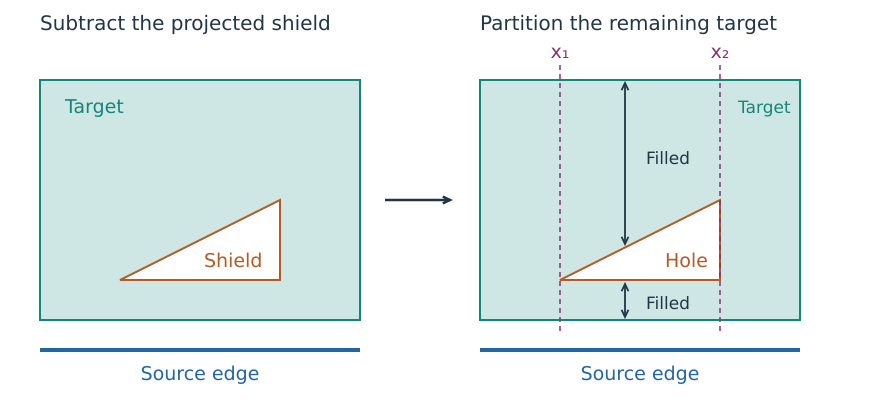
This is a partition of the visible polygon, not a replacement by rectangles. Intersections at a new strip boundary remain floating-point values for the capacitance calculation. Only the geometry drawn in the extraction report is rounded back onto the layout grid.
The small-contribution cutoff is applied to each resulting unshielded polygon before its internal trapezoids are emitted. A polygon that contributes more than \(0.0001\,\mathrm{fF}\) remains even if each trapezoid individually contributes less. A value equal to the cutoff is omitted. Changing the mathematical subdivision therefore does not change whether that polygon is retained.
The total capacitance is not enough when a marker removes part of an edge or when RC extraction divides it between nodes. The taper example above has equal lengths on either side of its midpoint but unequal capacitances.
KPEX/2.5D retains an integral profile for a sloped contribution. A cut asks the profile for the capacitance over the retained interval. A later cut uses the original coordinates of that interval. It does not restart the distance ramp at its new left endpoint.
This makes three operations consistent:
For overlap capacitance, the density within one layer pair is uniform per area, so area fractions remain appropriate.
The sky130A pattern below has a tapered conductor A, a bent conductor B, and a rectangular conductor C. The A ↔︎ B gap varies along the taper, whereas part of the B ↔︎ C gap is constant.
GDS: sidewall_non_parallel_li1.gds.gz
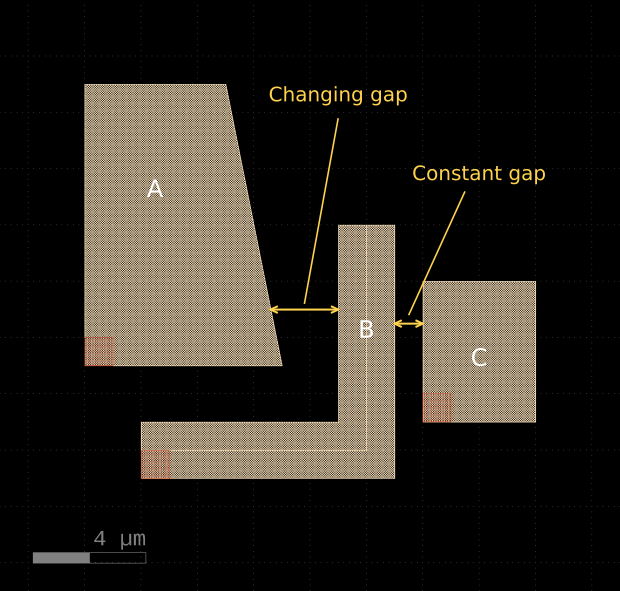
sky130A sloped-wire example on li1. The taper changes the A ↔︎ B separation along the facing interval.
From the klayout-pex source checkout, the committed LVS database allows the extraction to be repeated without running LVS:
The example was checked with klayout-pex 0.9.0 and the KLayout Python module 0.30.13. --report-caps y adds each contribution and its geometry to the extraction report. Inspect the A ↔︎ B sidewall entries to see how the facing intervals follow the taper. The exported netlist combines the contributions belonging to the same pair of nets.
The halo is the finite lateral neighborhood searched around an edge. --halo overrides the technology’s side_halo, in \(\mu\mathrm{m}\). It changes which geometry is considered, so it is a modeling choice as well as a runtime limit.
The default --scale y normalizes the fringe fraction to that halo. For a positive overlap coefficient and halo \(h\), \(N=F(h)\), and a target occupying the full interval from \(0\) to \(h\) receives the full coefficient for that edge length. A zero overlap coefficient gives \(\alpha=0\) and zero fringe contribution before normalization. With --scale n, \(N=1\), so the tail beyond the halo remains omitted. A larger halo can change both the visible targets and, when scaling is enabled, the normalization of nearer ones.
The --scale flag here concerns fringe fractions. It is independent of SPICE .option scale, which controls the interpretation of selected device geometry parameters.
These limits matter when comparing results:
For a rotation comparison, keep the same physical dimensions, coefficient tables, halo, and scaling option. A finer database unit reduces geometric rounding. Quarter-turn rotations preserve integer-grid coordinates exactly; arbitrary angles usually do not.
Some structures are better served by a model than by a 2.5D extraction: an inductor by an EM simulation, which also has its inductance, a hard block by a netlist of its own, or the power grid of a block by the extraction of the top level. FEM co-simulation for example matches measured mm-wave amplifiers better than an RC extraction (Sagouo Minko and Stander 2019). The rest of the layout should still be extracted, and connect to the model.
This raises four questions, which this section answers:
There are three ways to select what is left out, which follow the same rule (Section 6.3.3):
| Option | Selects | Connection to the model |
|---|---|---|
--exclusion-markers {ignore,tie,ports} |
what is within the marker layers of a PDK, or of the user (Section 6.3.4) | as the value says |
--cut CELL[=PREFIX] |
the shapes and the devices of the instances of a cell, not the routing over them (Section 6.3.7) | ports |
--exclude-net NET |
a net (Section 6.3.8) | the net itself |
By default, nothing is left out, so that a netlist doesn’t change without one of these. Markers and cells are read from the GDS, so that these options need --gds, also together with --lvsdb, as an LVS database only has the shapes of nets.
The options work with --2.5D, --fastercap and --fastcap (Section 6.3.9), not with --magic.
| PDK | Marker | Applies to | Drawn by |
|---|---|---|---|
ihp-sg13* |
NoRCX.drawing 148/0 |
all layers of the stack | the pcells inductor2 and inductor3 (parameter blockqrc, on by default), the same polygon as IND |
ihp-sg13* |
<layer>.noqrc */28 |
one layer each: Activ, GatPoly, Metal1 to Metal5, BackMetal1, TopMetal1, TopMetal2 |
the pcell rfcmim, around the device by 5.6 µm, up to TopMetal1 |
ihp-sg13* |
NoRCX.<pair> 148/41 to 55, 148/123 to 127, 148/300, 148/301 |
pairs of metals from m2m3 up, metal to substrate (m1sub) |
no pcell |
ihp-sg13* |
IND 27/0 |
the metal of an inductor, whose pins touch the edge of IND |
inductors |
sky130A |
none | inductor.drawing 82/24 only takes met2 and met3 out of the conductors of LVS |
RF coils |
gf180mcuD |
none | IND_MK 151/5 marks inductors: the LVS deck only defines it, the DRC keeps COMP and Poly2 fill 3 µm away |
The layer rules of the IHP PDKs don’t describe the markers beyond one line each. What the pair markers can mean follows from their names, as they name a pair of plates. Of the 533 GDS of the IHP reference layouts and LVS testcases, 25 have a marker, all of them noqrc of rfcmim.
By default, KPEX honors NoRCX.drawing and the pair markers. noqrc only takes effect on request, with --exclusion-marker-layer (Section 6.3.6): the extraction of the rfcmim already knows the device, in white-box mode it would lose the capacitor, and in a reference layout it would hit 2624 µm² of metal that isn’t part of the device.
sky130A and gf180mcuD have no layer for this, in their layer tables or in the cells and layouts looked at. SkyWater’s extraction rules leave parasitics to the models by device recognition (varactors, MIM capacitors, RF ESD diodes, precision poly resistors), and MAGIC by the property device of a cell, which zeroes the parasitics of the cell. So these PDKs take markers of the user (Section 6.3.6).
Tools take one of three approaches, here by the public material of commercial tools:
| Approach | The shapes | What is around them | Used by |
|---|---|---|---|
| Remove | are not passed to the solver | loses its load, which the vendor warns about | commercial tool A |
| Keep, couple to ground | are considered | keeps its load, with no path into the device | commercial tool A, commercial tool B for nets within a cell |
| Keep, couple to the net | are interconnect with all cross-coupling, a model replaces the RC model | keeps its load, on the net | commercial tool A, commercial tool B for nets with a pin |
Removing the shapes is the simple approach, but it changes what is outside them, as Figure 14 shows. A 2.5D extraction rests on the shielding by what is in between: neighbors reduce the coupling across a layer from 16.3 % to 1.8 % of the total, and it’s only negligible above a metal density threshold (Cong et al. 1997). The same holds for metal without a function: ignoring dummy fill gives errors above 30 %, and the fill on other layers matters more than the fill on the same layer (Kurokawa et al. 2004). Full-chip extractors handle grounded fill, floating fill needs a 3D solver (Kahng et al. 2006; Yu et al. 2006).
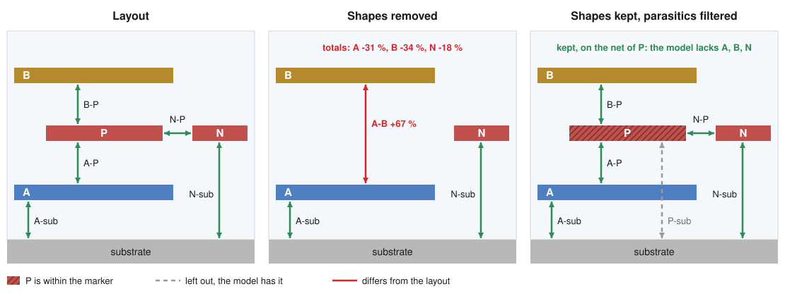
P is left to a model, the wires A, B and N are not. Removing P couples A to B through the hole, and takes its load from all of them. KPEX keeps P in the field model, and leaves out only what the model has.
Table 11 has this for small layouts of ihp-sg13g2, in --mode CC, with FasterCap in brackets. FasterCap is no reference here, it only shows the same trend. “Coupling dropped” keeps the shape as a shield, but leaves out all of its capacitances, also those to the wires.
| Layout | Value | With the shape | Shape removed | Coupling dropped |
|---|---|---|---|---|
Metal3 plate of 20 µm x 20 µm between 2 µm wide Metal2 wire A and Metal4 wire B |
A ↔︎ B |
1.39 fF | +67 % (+63 %) | unchanged |
A total |
11.19 fF | -31 % (-24 %) | -39 % (-41 %) | |
B total |
8.08 fF | -34 % (-30 %) | -60 % (-57 %) | |
TopMetal1 wire over a Metal5 comb of 50 % density |
total | 11.60 fF | -39 % (-42 %) | -56 % (-73 %) |
Metal3 comb between Metal5 wire T and Metal1 wire U |
T ↔︎ U |
1.16 fF | +38 % | |
Metal3 wire 0.3 µm beside a Metal3 plate |
total | 5.05 fF | -18 % (-7 %) | -29 % (-38 %) |
Metal5 wire under the coil of an inductor2 |
total | 10.27 fF | -10 % | |
| 20 µm wire ending at the cut, instead of going on | total | 1.797 fF | +3.5 % |
So the shapes stay: without them, the wires around them have wrong values, which neither the netlist nor the model can correct.
With a marker over all layers, the parts of A and B within it are left out too, so the first rows of Table 11 apply to a neighbor like N, and to the parts near the edge of the marker. They apply fully where only some shapes are left out at a location: a marker of one layer (Section 6.3.6), a cell with routing over it (Section 6.3.7), or a net (Section 6.3.8).
The coil of a PDK inductor is an exception that does no harm: the deck of KPEX takes the metal within IND out of the conductors, so that it is no shield, but it is 30 µm from the edge of its polygon, beyond the halo of 8 µm, so that nothing outside the polygon is affected.
A conductor is in where it lies within what is left out on its layer, otherwise out. Each polygon of the merged markers, and each instance of a cut cell, stands for a model of its own, which is called a block below.
| Capacitance between | What happens | Why |
|---|---|---|
| in and in, within one block | left out | the model has it |
| in and substrate | left out | the model has it, also where the fringe ends on the substrate beyond the marker |
| out and out, out and substrate | unchanged | nothing else has it |
| out and in | kept, on the net of the in plate, at its nearest node | the model doesn’t know the out plate |
| out and in, where nothing connects the net of the in plate to the netlist | goes to the substrate | it has no node, a model wouldn’t know this metal either |
| in and in, within different blocks | kept | neither model has it |
parts of one net that only a model joins, with --exclusion-markers ports |
kept, like between two nets | they are apart in the netlist, and neither the netlist nor the model has this capacitance otherwise |
A capacitance partly within a marker is split: for an overlap by its area, for a sidewall or fringe along its edge. A fringe goes by the plate next to the edge, also on a well that goes on across a marker.
The resistance network has no resistance within a block. A via is within a block by its center, on both of its conductors, as vias can stick out past their metal, and the resistance of a part of a via would be made up. Otherwise it keeps its resistance and the metal it lands on.
Devices within a marker stay in the netlist, as the PDK inductors do. In white-box mode (--blackbox n), a capacitor within a marker is lost, as the device is removed and its plates are filtered. A warning names these devices. The devices of a cut cell are left out (Section 6.3.7).
A marker over routing costs that wire much of its capacitance, so a warning names the nets partly within markers, with their layers.
Figure 15 shows the three values of --exclusion-markers for a wire through a marker. A --mode CC netlist has one node per net, so tie and ports are the same there, and a warning says that it has no ports for a model.
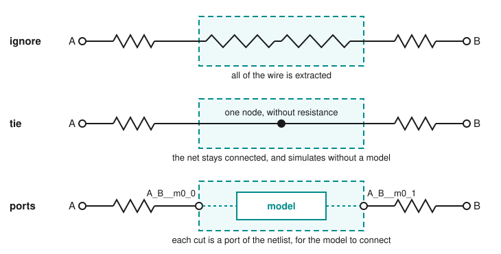
A to B through a marker with --exclusion-markers ignore, tie and ports
Test pattern exclusion_wire_through, a Metal3 wire of 60 µm x 2 µm with a marker over its middle third, is the example of the variants below:
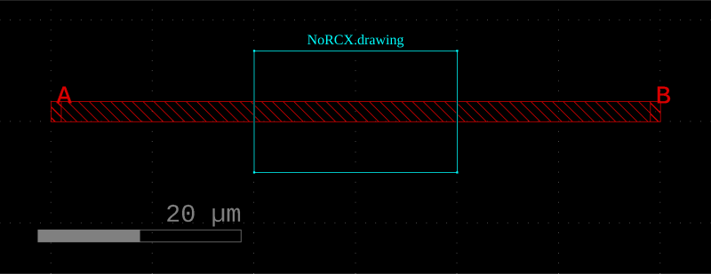
exclusion_wire_through
exclusion_wire_through
--exclusion-markers |
--mode CC |
--mode R |
|---|---|---|
ignore |
A,B ↔︎ VSUBS 5.327 fF |
A ↔︎ B 2.596 Ω |
tie |
A,B ↔︎ VSUBS 3.593 fF |
A ↔︎ A,B 0.858 Ω, A,B ↔︎ B 0.858 Ω |
ports |
A,B ↔︎ VSUBS 3.593 fF |
A ↔︎ A_B__m0_0 0.858 Ω, A_B__m0_1 ↔︎ B 0.858 Ω |
ignoreWhat is within a marker is extracted like the rest of the layout. This is the default, as Figure 17 shows:
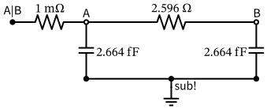
exclusion_wire_through with ignore. Open dots are ports, the wire is one resistor, and A|B, the node of the net, is tied to the port A.
tieWhat is within a marker has no parasitics, and each net stays connected across it, so that the netlist simulates without a model. It’s useful to see what the rest of a layout adds, or if a model is only needed for some of the analyses (Figure 18):
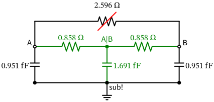
exclusion_wire_through with tie. In green what replaces the resistor of ignore, struck through in red: a resistor outside the marker on each side, and one ideal node for all that is within the marker.
The metal within a marker stays apart where nothing within the marker joins it. In the test pattern exclusion_stubs (Figure 19), two stubs of a net end within the marker, which only the metal outside it joins. So their pins S1 and S2 stay two nodes, with 1.046 Ω to A each, as a tie would short the metal outside the marker.
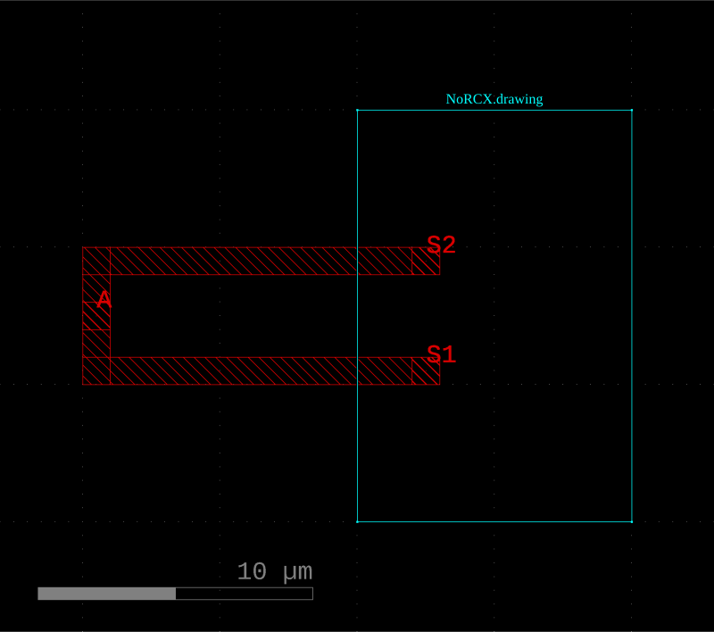
exclusion_stubs
portsEach cut of a net at a marker is a port of the netlist, for a model to connect (Figure 20):
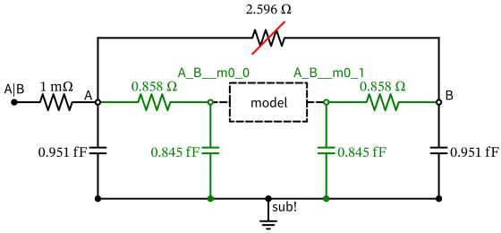
exclusion_wire_through with ports. In green what replaces the resistor of ignore, struck through in red: a resistor outside the marker on each side, up to a port at each cut. Dashed, the model of what the marker stands for, which is no part of this netlist.
A port is named after the pin of the net within the marker that is nearest to the cut, on its layer before others, otherwise <net>__m<marker>_<number>. So labels within a marker name the ports. In exclusion_stubs, these are S1 and S2. Such a pin only names a cut of the metal it is joined to within the marker, and not if the net has a pin of that label outside the marker, as a port is one node. A net entirely within a marker has a port at its pin.
--check accepts the pieces of a net that only these ports join. These pieces stay apart in the netlist, also where taps or wells would join them ideally otherwise, as that would short the model. And a part of a well beyond a cut keeps its port and its resistance, with the bulks of the devices on it. A bulk within the marker is a port of the model as well.
A port is one node, which is right across the current, also on a wide wire. Where the metal goes on beside a marker, along a cut, the whole cut would short that metal, so the port is a piece of 1 µm in the middle of the cut. The metal beside it then carries the current alone: test pattern cut_strip_along_wire, a wire of 100 µm x 1 µm with half of its width within a marker along 50 µm, has 8.78 Ω flat and 17.41 Ω with ports, as a port can’t connect a model in parallel to that metal.
Metal that only a model joins is one net in LVS, but apart in the netlist with ports, so the capacitances between it count, unlike within a net otherwise. In test pattern exclusion_hairpin (Figure 21), two Metal3 wires 2 µm apart end within the marker, where a bridge joins them. In exclusion_hairpin_open, the bridge has a gap, so they are two nets. With ports, both have the same values:
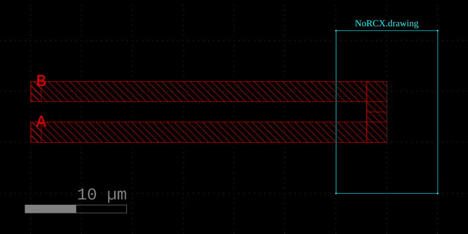
exclusion_hairpin
exclusion_hairpin
| Capacitance | exclusion_hairpin, ignore or tie |
exclusion_hairpin, ports |
exclusion_hairpin_open, ports |
|---|---|---|---|
from the pin of A to the pin of B |
0.147 fF | 0.147 fF | |
| between the cuts | 0.142 fF | 0.142 fF |
With tie, the net stays connected, so these wires are a net like without a marker, which has no capacitances within it. In --mode CC, a net is one node, so there are no ports and no such capacitances.
To check that a model fits, a test extracts the part of the wire within the marker on its own, as a stand-in for a model, connects it between the ports, and compares the port admittance in ngspice with the one of the flat extraction. They differ by 2.3 %, by the fringe of that part at the cuts, where the flat wire has no edges.
Test pattern exclusion_plate_neighbor (Figure 22), a Metal3 plate P just within a marker, with a Metal3 wire N 0.3 µm beside it. N keeps all of its values, as it is out, and P keeps only its capacitance to N.
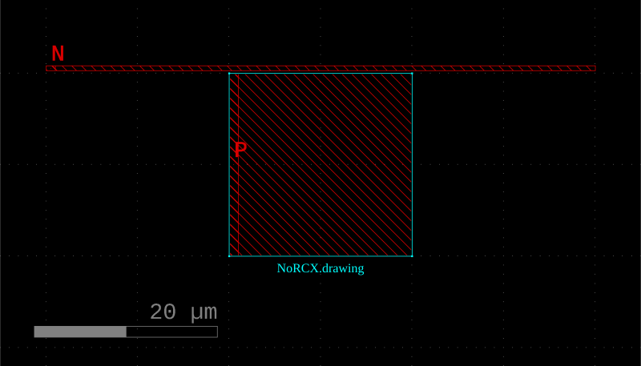
exclusion_plate_neighbor
exclusion_plate_neighbor
| Nets | ignore [fF] |
tie, ports [fF] |
Plates |
|---|---|---|---|
N ↔︎ P |
1.478 | 1.478 | out and in |
N ↔︎ VSUBS |
3.568 | 3.568 | out and substrate |
P ↔︎ VSUBS |
6.720 | in and substrate |
Without a label on the plate, in exclusion_floating_plate_neighbor, nothing connects it to the netlist, so that the capacitance to it goes to the substrate: N ↔︎ VSUBS is 5.045 fF.
Two such plates P and Q, 0.5 µm apart. With a marker each (exclusion_plates_2_markers), they keep their 0.828 fF to each other, as neither model has it. With one marker over both (exclusion_plates_1_marker), the netlist has no capacitances at all.
Test pattern exclusion_via_stack, a wire from A to B on Metal2, with a bridge on Metal3 over a gap in the middle, with a marker around the bridge:
exclusion_via_stack
--exclusion-markers |
Resistors |
|---|---|
ignore |
0.568 Ω, via 2.031 Ω, 0.176 Ω, via 2.031 Ω, 0.532 Ω |
tie |
A ↔︎ A,B 0.418 Ω, A,B ↔︎ B 0.418 Ω |
ports |
A ↔︎ A_B__m0_0 0.418 Ω, A_B__m0_1 ↔︎ B 0.418 Ω |
In exclusion_via_across, the center of the via is outside the marker, so it keeps its 2.031 Ω, and only the Metal3 within the marker has no resistance.
Test pattern exclusion_nmos_diode2 (Figure 23), with a marker over a MOS transistor. The metal of its nets leaves the marker on Metal1 and Metal2.
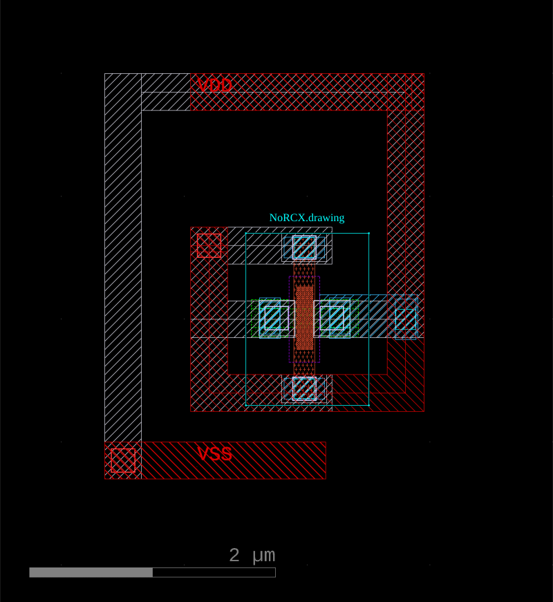
exclusion_nmos_diode2
With tie, its terminals are on the nodes of the metal within the marker. With ports, each terminal is a port of its own, as the model connects them:
The bulk stays on the substrate, which is no conductor of the resistance network.
--exclusion-marker-layer selects the markers, instead of those on by default. It takes the name of a marker of the PDK, or any GDS layer, for all layers of the stack (200/0) or for some (200/0:met2,met3). So a PDK without markers can have them too, such as sky130A and gf180mcuD, and --exclusion-markers ignore stays the default.
A marker of a layer leaves out only what is on that layer. In test pattern exclusion_plate_noqrc, a Metal3 plate P is between a Metal2 wire A and a Metal4 wire B, with Metal3.noqrc over the plate. So P loses its capacitance to the substrate, and the wires keep all of theirs, with the plate as a shield between them. This is the case that Table 11 is about.
A pair marker only leaves out the capacitances between its two layers, so it has no effect on the resistances. The same plate with m2m3 (exclusion_plate_pair_m2m3), and with m3sub (exclusion_plate_pair_m3sub):
exclusion_plate_between_wires
| Nets | ignore [fF] |
Metal3.noqrc [fF] |
NoRCX.m2m3 [fF] |
NoRCX.m3sub [fF] |
|---|---|---|---|---|
A ↔︎ B |
1.387 | 1.387 | 1.387 | 1.387 |
A ↔︎ P |
4.363 | 4.363 | 0.198 | 4.363 |
B ↔︎ P |
4.831 | 4.831 | 4.831 | 4.831 |
A ↔︎ VSUBS |
5.437 | 5.437 | 5.437 | 5.437 |
B ↔︎ VSUBS |
1.862 | 1.862 | 1.862 | 1.862 |
P ↔︎ VSUBS |
6.701 | 6.701 |
The 0.198 fF that stay with m2m3 are the fringe to the part of A beyond the marker.
--cut CELL[=PREFIX] leaves the instances of a cell to a model. CELL is a name or a glob pattern, and a cell within a cut cell is part of it. Each --cut needs instances of its own: the first one that matches a cell takes them.
What is left out:
--check. As the netlist of LVS is flat, they go by what the cell draws at their terminals, on the layers that LVS makes a device of that class from, which the tech info has (the diffusion and the gate of a MOS, the marker of a resistor, a diode, a BJT or a capacitor):
--cut-keep-net NET takes the shapes of a net out of the cell, also its wells, so that they are extracted like the rest of the layout, e.g. a guard ring.
Where a net enters the cell is a port of the netlist, as with --exclusion-markers ports, named:
<prefix>__<label>, by the labels of the cell on the metal it is joined to within the cell, nearest first. Several cuts of that metal share the port, as they are one pin of the model<prefix>__<terminal>, for a terminal of a device of the cell on the metal around it, numbered if the block has several such nodes on a net (X__S_0, X__S_1)<prefix>__<net>_<number> otherwiseThe prefix:
PREFIX for a single instance, with a number for several (x_0, x_1)coil_0)_ only, as it names ports--cut a=S_0 --cut b=S is an error if b has several instancesTest pattern cut_block_with_mos has the MOS of the design nmos_diode2 in the cell block, whose pins VDD and VSS on Metal3 the top cell wires on to A and B, and a Metal5 wire R over the cell (Figure 24). With --cut block=X:
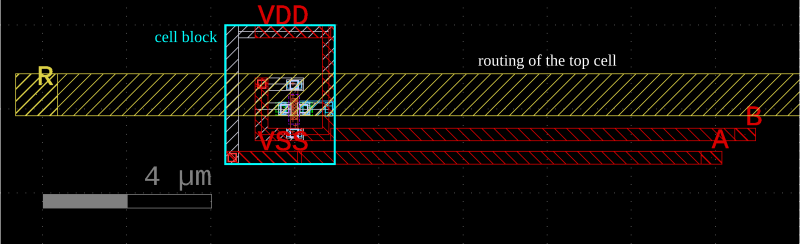
block framed
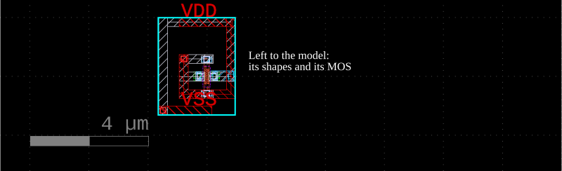
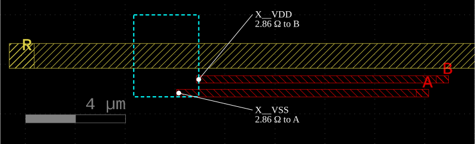
cut_block_with_mos, as drawn, and split by --cut block=X
.SUBCKT cut_block_with_mos A X__VSS B X__VDD sub! R
Cext_1 A B 0.397445f
Cext_2 A R 0.016564f
Cext_3 A sub! 0.197343f
Cext_4 A X__VDD 0.07352f
Cext_5 B R 0.0584666f
Cext_6 B sub! 0.221065f
Cext_7 R sub! 1.40824f
Cext_8 R X__VDD 0.194269f
Cext_9 R X__VSS 0.0809391f
Cext_10 sub! X__VDD 0.178802f
Cext_11 sub! X__VSS 0.178581f
Cext_12 X__VDD X__VSS 0.4502f
Rext_1 A X__VSS 2.86
Rext_2 B X__VDD 2.86
.ENDS cut_block_with_mosThere is no MOS, the two nets end on the ports for the model, the wire R keeps its capacitances, also to the metal of the cell, and the 2.86 Ω are the ones of the wires of the top cell.
--exclude-net NET, a name or a glob pattern, is for a net that something else models or drives, such as the power grid of a block:
exclusion_plate_neighbor with --exclude-net P gives the values of tie in Table 15, without needing a marker or a GDS. exclusion_nmos_diode2 with --exclude-net 'V*' in --mode RC has no resistor at all, and only 0.492 fF between VDD and VSS.
The values of the nets around it are as without the option, as the net stays in the field model. Unlike with a block, this goes by the name of the net, so that a large grid doesn’t slow down the extraction.
A field solver only tells the capacitances between its conductors, not where they end on them. So with these options, a net is one conductor for its part outside the blocks, and one for each set of blocks it is within, as these can overlap. The substrate is a conductor of its own, also if its net has metal. There are no panels between the conductors of a net, as those would be coincident. The matrix goes through the rule of Table 12, and the parts of each net are summed up: with all at the same potential, the charges they induce add up to the charge of the net as one conductor.
The netlist of a field solver has one node per net, so it has no ports, as with --mode CC. A warning says so, with ports and with --cut. It also has no capacitances between the parts of a net that only a model joins.
FasterCap gives the same picture as Table 15 and Table 21, with its own values:
| Layout | Nets | as drawn [fF] | what is left out, left out [fF] |
|---|---|---|---|
exclusion_plate_neighbor, tie |
N ↔︎ P |
2.16 | 2.16 |
N ↔︎ substrate |
3.59 | 3.59 | |
P ↔︎ substrate |
8.24 | ||
exclusion_wire_end, half of the wire within the marker, tie |
W ↔︎ substrate |
4.40 | 2.20 |
exclusion_wire_through, a third of it, tie |
wire ↔︎ substrate | 6.38 | 4.37 |
cut_coil, --cut coil --cut-keep-net VDD |
coil ↔︎ VC |
3.13 | 3.05 |
coil ↔︎ VDD |
4.92 | 4.93 | |
VC ↔︎ VDD |
3.22 | 3.20 | |
VC ↔︎ substrate |
7.23 | 7.20 | |
VDD ↔︎ substrate |
26.28 | 26.10 | |
| coil ↔︎ substrate | 22.00 | 5.48 |
Where a net is two conductors, the values around it differ by up to 2.5 %, as the mesh differs at the ends of the parts.
The pcells draw NoRCX.drawing, and the LVS deck of KPEX recognizes the inductor as a subcircuit with its terminals at its leads, so a model replaces it by its name, without any ports. What --exclusion-markers changes is the rest of what is within its polygon, such as a wire under the coil (exclusion_inductor2_wire_under, Figure 25, with --blackbox y):
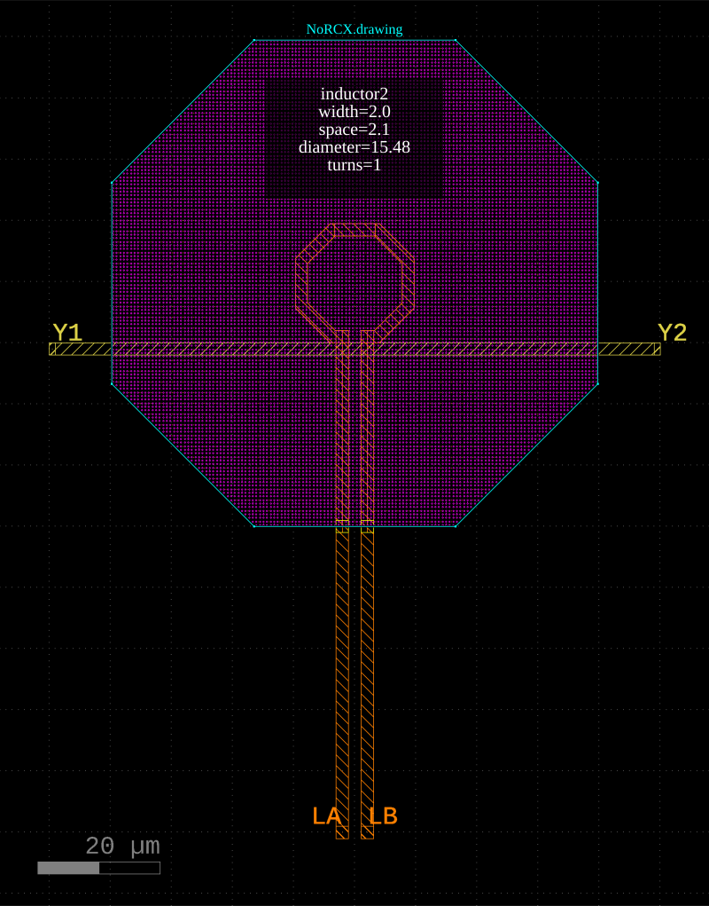
exclusion_inductor2_wire_under, the marker is the same polygon as IND
inductor2
ignore |
tie |
ports |
|
|---|---|---|---|
Y1 ↔︎ Y2 |
4.356 Ω | 0.858 Ω | 0.429 Ω to each port |
Y to substrate |
7.044 fF | 1.532 fF | 1.532 fF |
LA, LB |
unchanged | unchanged | unchanged |
So a model of the coil that has that wire in its simulation should be used with tie or ports, and one without with ignore.
This is what #121 asks for: most of a circuit with the 2.5D engine, and EM models for the sensitive RF parts.
#213 extracts the core of an oscillator without the coil of its tank, which has an EM-fitted model, but with its leads and its guard ring, with ports where the core meets the coil. Outside KPEX, this took a cut of the GDS, with workarounds for the recognition texts of devices and the labels of child cells.
Test pattern cut_coil (Figure 26) is a small layout with these parts, not that design:
coil, with a TopMetal2 loop with stubs of its leads, a center tap on TopMetal1, and a TopMetal1 guard ring around them, and the labels LA, LB and CTOSCP, OSCN and VCT, and a stub with the label VDD on the guard ringMetal5 wire VC of the top cell under the coil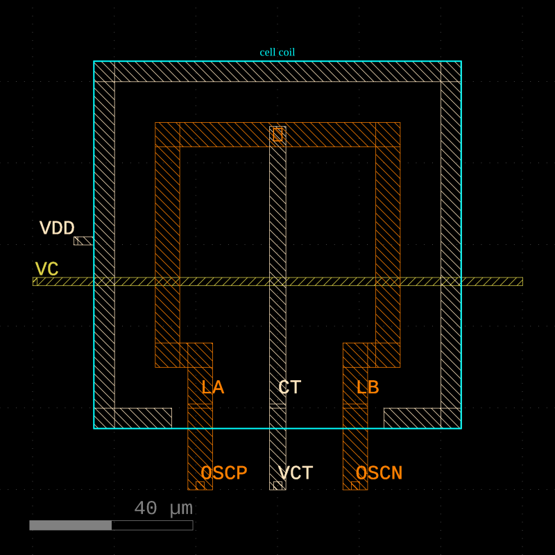
cut_coil
With kpex extract --pdk ihp-sg13g2 --gds cut_coil.gds.gz --2.5D --mode RC --cut coil=xind --cut-keep-net VDD:
.SUBCKT cut_coil OSCN OSCP VCT xind__CT xind__LA xind__LB VC VDD sub!
Cext_1 OSCN sub! 1.04552f
Cext_2 OSCP sub! 1.04552f
Cext_3 VC VDD 2.1086f
Cext_4 VC sub! 8.43019f
Cext_5 VC xind__CT 0.89613f
Cext_6 VC xind__LA 0.398954f
Cext_7 VC xind__LB 0.398954f
Cext_8 VCT sub! 1.17194f
Cext_9 VDD sub! 30.0624f
Cext_10 VDD xind__LA 0.110313f
Cext_11 VDD xind__LB 0.110313f
Cext_12 sub! xind__CT 0.925084f
Cext_13 sub! xind__LA 0.703486f
Cext_14 sub! xind__LB 0.703486f
Rext_1 OSCN OSCN|OSCP|VCT 0.001
Rext_2 OSCN xind__LB 0.0348333333333
Rext_3 OSCP xind__LA 0.0348333333333
Rext_4 VCT xind__CT 0.0855
.ENDS cut_coilThe model goes between the ports, in the netlist that includes this one:
--mode CC shows what is left out, with the net of the coil being OSCN,OSCP,VCT:
cut_coil
| Nets | as drawn [fF] | with --cut [fF] |
|---|---|---|
coil ↔︎ VSUBS |
28.432 | 5.595 |
coil ↔︎ VC |
1.694 | 1.694 |
coil ↔︎ VDD |
0.221 | 0.221 |
VC ↔︎ VDD |
2.109 | 2.109 |
VC ↔︎ VSUBS |
8.430 | 8.430 |
VDD ↔︎ VSUBS |
30.062 | 30.062 |
The wire VC, which is no shape of the cell, keeps all of its capacitances, also to the coil, which a model wouldn’t know. Without --cut-keep-net VDD, the guard ring is left to the model too, and the net VDD enters the cell at the port xind__VDD_0.
To check that this fits, a test extracts the coil on its own (cut_coil_model), as a stand-in for a model, connects it between the ports, and compares the port admittance in ngspice with the one of the flat extraction:
OSCP, OSCN and VCT, are the same within 0.1 %VC and VDD to each other and to the substrate, and their capacitances to the coil in sum, which are at the ports instead of along the coilCompared with the cut of the GDS:
--exclusion-markers ports does the same without a cell, for a marker drawn over the coil, inside the guard ring, as in test pattern exclusion_coil_guard_ring (Figure 27), whose labels name the ports. As a marker applies to all layers, routing through it is left out too.
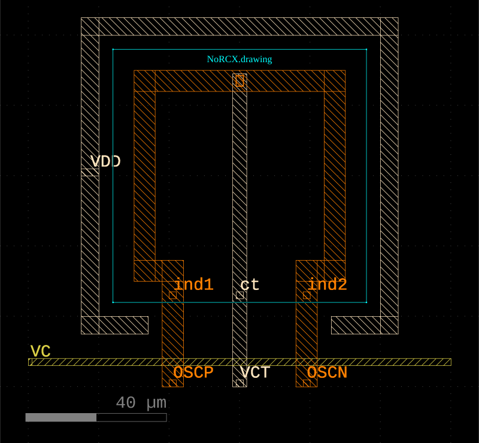
exclusion_coil_guard_ring
exclusion_coil_guard_ring
| Nets | ignore [fF] |
tie, ports [fF] |
|---|---|---|
coil ↔︎ VSUBS |
28.432 | 6.117 |
coil ↔︎ VC |
1.658 | 1.658 |
coil ↔︎ VDD |
0.221 | 0.221 |
VC ↔︎ VDD |
0.056 | 0.056 |
VC ↔︎ VSUBS |
8.430 | 8.430 |
VDD ↔︎ VSUBS |
29.917 | 29.917 |
The second part of #213, every label a port for the wiring between hard blocks, is what the netlists of --mode R and RC do for the labels of a net in the top cell. Labels in the cells of the blocks become ports with --cut.
#85 extracts a block whose power grid is part of the top level:
So VDD and VSS are ideal nodes of the netlist, with all device terminals on them, and each signal keeps its load to them, as the grid stays in the field model. For debugging, leaving out the resistance of one net at a time shows what it adds to a simulation.
nwell taps of r_ntap_pair_nwell_li1_m1, with a marker of 2 µm between them across the nwell of 7 µm, have 212 Ω with tie, 1948 Ω by tessellation. Wires at an angle have too little too, a Metal3 wire of 60 µm x 1 µm has 5.28 Ω at 0° and 2.65 Ω at 45°, and a corner of a marker on such a wire can give several times the value of the whole wire--cut of an instance at an angle other than a multiple of 90°, or of one with such an instance below it, is an error, as the LVS database only has the bounding boxes of the shapes of such an instancetie, ports and --cut is the flat extractionA parasitic netlist has two jobs: describe the layout’s electrical network, and expose an interface that the testbench can call correctly. A correct capacitance attached to the wrong positional pin is still a wrong simulation.
--schematic supplies two pieces of that interface to KPEX/2.5D: the order of the top-level ports, and names for devices that can be matched unambiguously. It does not replace a full LVS comparison. The checks in Section 7 answer narrower questions about missing devices, geometry totals, pins and connectivity.
A label inside a child cell often names an internal net. Making every such label a top-level port can expose implementation details of a block to its testbench. Conversely, a layout without top-level pin labels may rely on the labels of its children.
| Input and policy | Labels used for ports |
|---|---|
--gds, --port-labels auto, top cell has a pin label |
Top-level labels |
--gds, --port-labels auto, no top-level pin label |
Labels across the hierarchy |
--gds, --port-labels top |
Top-level labels, even when there are none |
--lvsdb alone, --port-labels auto |
Hierarchical labels retained by the database |
auto is the default. --port-labels top needs --gds, including when an LVS database supplies the extracted nets. Substrate handling and top-level text-only ports remain in place. Selecting top-level labels does not remove the child geometry or the internal nets from extraction.
SPICE connects a subcircuit call by position. The first node in the call connects to the first port of its .subckt declaration, regardless of the spelling of the two names.
KPEX/2.5D defines the exported order as follows:
--schematic, the matching top subcircuit’s ports come first, in schematic orderThis applies to CC, R and RC, to reduced netlists, to SPICE and VACASK, and to the port lists recorded in kpex_result.json. It changes the interface order, not which physical net each port connects to. In CC, several labels on one equipotential net can remain one exported port; its earliest schematic alias determines its position.
Download ordered.spice, whose top declaration is .subckt nfet_li1 S G D and whose transistor is named Xtail. From the KPEX source directory, run:
The declaration and device lines from that run are:
The top-level interface starts with S G D. The substrate sky130_gnd, absent from the schematic’s port declaration, follows them. The transistor line has its own model terminal order; it need not have the same order as the top-level interface. For this symmetric MOS device, exchanging source and drain still permits the match.
Device naming needs a schematic .subckt whose name matches the layout top cell. Port ordering can additionally use the sole uncalled subcircuit when the top name differs; that fallback does not rename devices.
Matching uses the device mappings of the technology, connectivity and device geometry. A successful match retains the schematic name, as Xtail above. Devices inside schematic subcircuits can retain hierarchical paths such as X1.Xtail. Parallel layout fingers of one schematic MOS receive suffixes such as _0, _1 and _2.
Names alone are not evidence that two devices correspond. Indistinguishable parallel schematic instances, missing model mappings or an ambiguous comparison keep layout-derived names and produce a warning. An assignment that would create duplicate output names is rejected. The model mapping still selects the proper SPICE designator, so a native schematic M may be emitted through an X wrapper when that is the PDK’s model interface.
The SPICE directives .option scale=1u and .options scale=1u set one geometry scale for the whole parsed netlist. They are not per-device or per-model settings. A declaration inside a subcircuit still supplies that same global setting.
For scale \(s\), the schematic geometry evaluator applies:
| Instance | Parameters | Effective value |
|---|---|---|
Native M |
l, w, pd, ps |
Parameter value multiplied by \(s\) |
Native M |
ad, as |
Parameter value multiplied by \(s^2\) |
Native R or C |
l, w |
Parameter value multiplied by \(s\) |
X call |
Wrapper arguments | Unchanged at the wrapper interface |
| Any instance | Electrical values, multipliers and unrelated parameters | Unchanged |
An X parameter named w is not automatically a length: its meaning belongs to the wrapper. If the wrapper is defined in the input, its native devices receive scaling after parameter evaluation. For an external model wrapper, the technology’s device mapping translates its declared units into the layout units used for matching and checks.
This distinction avoids scaling twice. The technology mapping describes the model interface; .options scale describes the netlist’s global geometry convention. Neither should be inferred from the other. Diode area factors and other model-specific parameters also cannot be treated as physical areas just because of their names.
The schematic reader accepts only scale on .option or .options. Keep simulator analyses, .model, .include, .lib and unrelated options in the testbench or model library, outside this input. It is a circuit description reader, not a complete simulation-deck reader.
The parser accepts a finite positive SPICE number, including suffixes. 1u and 1000n express the same scale. SPICE suffixes are case-insensitive: M means milli, and MEG means mega. Identical repeated declarations are accepted, while conflicting values, zero and negative scales are rejected.
The extraction argument --scale y is a different setting: it normalizes the fringe model at the halo boundary (Section 6.2). It does not rescale layout coordinates or SPICE device geometry.
VACASK TestbenchConversion preserves the global setting in a companion options fragment. Download geometry-scale.spice, which contains a native Mnative and an external Xwrapped in parallel, both with w=4 l=2, under .option scale=1u:
The circuit include contains:
The companion geometry-scale.options.inc contains:
Include the circuit at circuit scope, and the options inside the testbench’s existing control block, before analyses:
Save the complete testbench beside the converted files and run vacask geometry-scale.sim. Its operating-point and AC analyses both run with the fragment above.
The example model file defines external as a wrapper around the same native model. The native device therefore sees a width of 4 µm and length of 2 µm in both paths. The X arguments remain unchanged so that the wrapper passes them on in its expected units.
The options affect the whole simulation, including other included circuits and external wrappers. Combining circuits that assume different global scales requires normalizing their model interfaces first. Omitting the options file or applying a second scale to the instance values changes the geometry.
kpex extract --netlist-format vacask --out-netlist extracted.inc also writes a companion extracted.options.inc. Keep both files together, even when the options set scale=1. A converter does not translate model libraries: the testbench must supply compatible VACASK models. With PDK wrappers, pass --pdk to netlist convert so that multiplier handling follows their declared interfaces.
The examples were verified with klayout-pex 0.9.0 and KLayout 0.30.13. The port-order and naming guarantees are independent of the capacitance coefficients that may change in subsequent releases.
A plausible simulation result does not establish that an extracted netlist is complete. A device terminal can be disconnected from the resistance of its wire, a port can be missing, or a reduction can remove the loss that matters at the operating frequency. These failures need different comparisons.
KPEX/2.5D checks the following stages:
| Check | Compared quantities | Enabled by |
|---|---|---|
| Netlist structure | Connectivity, devices, ports and capacitance totals before reduction | Automatic, with failure policy controlled by --check |
| Schematic consistency | Device classes, aggregate device dimensions and top-level pins | --schematic |
| Reduction response | Terminal admittance of the written original and reduced R/C networks | --check-frequency or --check-frequency-range |
| Device capacitance | Marker-internal plate coupling and independent nominal device reference | --check-device-caps |
The structural checks guard the translation from layout connectivity into a netlist. The admittance check guards a subsequent approximation. The device comparison examines the physical capacitance estimate itself. Passing one does not imply that the other two pass.
Resistance extraction splits one layout net into many nodes. These node names need not resemble the original net name, and device names may come from the schematic (Section 6.4.3). The structural comparison therefore follows the layout’s net identities and device identities, rather than trying to infer connectivity from spelling.
For each original net, KPEX follows the connected component formed by its parasitic resistors. Capacitors do not join these components: they couple nets electrically, but do not make a DC connection.
The comparison looks for:
For capacitance, the comparison first maps the distributed nodes back to their original nets. It then sums the parasitic capacitors for every pair of nets, and compares these sums with the extraction summary. The relative tolerance is \(10^{-9}\); this comparison allows rounding, not a physical modeling error. A capacitance to the substrate is omitted from this comparison if the chosen substrate connection shorts its two endpoints together.
In --mode RC, structural problems fail the run by default. In the other modes they are warnings by default. --check y makes them failures explicitly, and --check n accepts the netlist while keeping the warnings visible.
The checks run on the full extracted network before reduction. A reduction therefore cannot hide a structural defect by removing the affected nodes. For a structural failure found after extraction, the netlist remains available for inspection.
A separate warning identifies nets with parasitic elements but no device terminal or port that can drive them. Floating fill can legitimately produce this warning. A supply rail under a wrong label can produce it too, so it deserves review. This warning alone does not fail --check.
With --schematic, KPEX also compares the extracted devices with the schematic, using the technology’s device mappings (Section 3.6). These checks supplement LVS; they do not perform a complete schematic-versus-layout topology comparison.
Counting instances is insufficient. One schematic MOS instance can become several parallel fingers in the layout. Conversely, a layout extractor can combine devices. The comparison uses totals that survive these representations:
Multipliers and the number of hierarchical instances are included. Schematic dimensions are converted back to the LVS units before summation, including the SPICE geometry scaling discussed in Section 6.4.4. The relative tolerance for device totals is \(10^{-6}\).
A missing parameter is not silently replaced by an invented value. If the schematic leaves a relevant quantity to a model default, the corresponding total is left out and reported. A class without mapped totals is checked for presence only. Equal totals can still conceal an incorrectly wired device, which is why they do not replace LVS.
The top schematic subcircuit is selected by the layout cell name, without regard to case. If that name is absent, the schematic must have exactly one subcircuit that no other element calls.
The comparison reports schematic pins without extracted ports, and extracted ports without schematic pins. It accounts for interfaces that extraction adds or treats specially:
Port order is a separate interface contract, described in Section 6.4.2.
A smaller netlist should present nearly the same electrical response to its surroundings. Rather than comparing resistor counts or individual component values, the admittance check asks:
For the same terminal voltages at this frequency, how much do the resulting terminal currents change?
The check is optional because exact elimination can be more expensive than the reduction itself. It works with netlist reduce, and with kpex extract --2.5D --reduce floating or --reduce ticer in R or RC mode.
At frequency \(f\), a branch with conductance \(g\) and capacitance \(c\) has complex admittance
\[ y(f)=g+j\omega c, \qquad \omega=2\pi f. \]
A branch between nodes \(a\) and \(b\) adds \(+y\) to both diagonal entries of the nodal admittance matrix, and \(-y\) to the two off-diagonal entries. This gives
\[ \mathbf i = \mathbf Y(f)\,\mathbf v, \qquad \mathbf Y(f)=\mathbf G+j\omega\mathbf C. \]
Partition the nodes into terminals \(t\) that the surrounding circuit can observe, and internal nodes \(i\) that it cannot drive directly:
\[ \begin{bmatrix}\mathbf i_t\\\mathbf 0\end{bmatrix} = \begin{bmatrix} \mathbf Y_{tt}&\mathbf Y_{ti}\\ \mathbf Y_{it}&\mathbf Y_{ii} \end{bmatrix} \begin{bmatrix}\mathbf v_t\\\mathbf v_i\end{bmatrix}. \]
Eliminating the internal voltages gives the terminal response
\[ \mathbf Y_{\mathrm{term}} =\mathbf Y_{tt}-\mathbf Y_{ti}\mathbf Y_{ii}^{-1}\mathbf Y_{it}. \]
This is a Schur complement. The implementation performs sparse, complex node elimination rather than forming a dense inverse. For one internal star node, eliminating it adds a branch between each pair of its neighbors:
\[ y_{ab}^{\mathrm{added}}= \frac{y_{an}y_{nb}}{\sum_k y_{nk}}. \]
This evaluation uses the full complex admittances at the requested frequency. It is independent of the approximate low-frequency reduction described in Section 9.
The terminals include the subcircuit ports, global and ground nodes, nodes touched by non-plain-R/C lines, and nodes selected with netlist reduce --keep. In particular, device and subcircuit terminals remain observable. The global reference 0 is also included so that added tie resistors affect the comparison.
Each subcircuit and the top level are evaluated separately. Components with no path to an observed terminal at that frequency do not contribute. At DC, capacitors are open circuits. The check does not add artificial ground conductances to make an isolated component solvable.
The reported error is
\[ \varepsilon(f)= \frac{\left\|\mathbf Y_{\mathrm{reduced}}(f) -\mathbf Y_{\mathrm{original}}(f)\right\|_F} {\left\|\mathbf Y_{\mathrm{original}}(f)\right\|_F}, \qquad \|\mathbf Y\|_F=\sqrt{\sum_{a,b}|Y_{ab}|^2}. \]
Both real and imaginary parts contribute. The check reads the written netlists, so its result includes rounded component values and any real tie resistors introduced by reduction.
The default limit is --check-max-relative-error 0.01, or 1%. Equality with the limit passes. The limit must be strictly between zero and one.
There is no absolute-error floor. A tiny capacitance is still compared relatively. Two zero matrices have zero error, while a nonzero reduced response against a zero original response has infinite error.
Use a single frequency when one operating point is the question. Use a range when the circuit must behave across a band:
--check-frequency-range takes two arguments, the start and stop frequencies. SPICE suffixes are accepted. The endpoints are included, and the samples are logarithmically spaced. The default density is ten points per decade. A partial final decade still includes the exact upper endpoint.
The range requires \(0<f_{\mathrm{start}}\le f_{\mathrm{stop}}\). Equal endpoints produce one positive-frequency sample. --check-include-dc adds a separate sample at zero. For a DC-only check, use --check-frequency 0 instead.
Every sample in every checked scope must pass. The report names the worst sampled error and its frequency. A passing sweep covers those samples, not every frequency between them. Increase the density near an important transition or inspect a simulator response when that distinction matters.
Download the original series-rc.spice. The internal node n has a time constant \(\tau=RC=100\,\mathrm{ps}\). Choosing a threshold of 1n allows its elimination:
The input contains:
The written reduced netlist contains:
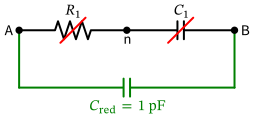
A ↔︎ B before and after eliminating n. Red strokes mark removed elements, and green marks the new element.
For this circuit the original and reduced branch admittances are
\[ y_{\mathrm{original}}=\frac{j\omega C}{1+j\omega RC}, \qquad y_{\mathrm{reduced}}=j\omega C. \]
Their two-terminal matrices have the same sign pattern, so the Frobenius error reduces to the scalar relative error:
\[ \varepsilon(f)= \frac{|y_{\mathrm{reduced}}-y_{\mathrm{original}}|} {|y_{\mathrm{original}}|} =\omega RC \quad (f>0). \]
The run checks eight points, including DC, and exits with code 1. Its reported worst relative Frobenius error is 0.628319 at 1G Hz, against the 0.01 limit. At 1Meg Hz alone it would pass, with relative error 0.000628319.
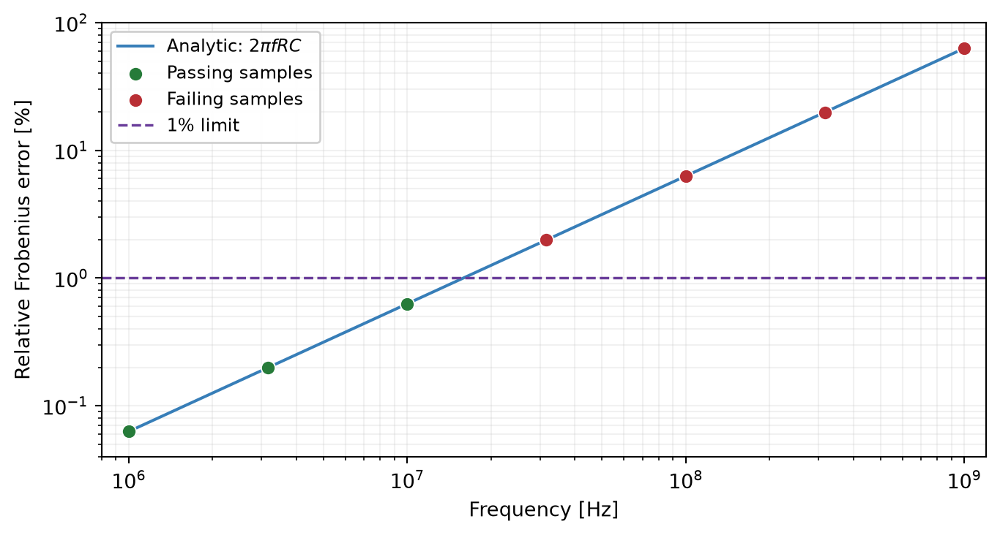
A smaller threshold preserves the internal node in this example:
This run exits with code 0 and reports zero error at every sampled frequency. It keeps one resistor, one capacitor and three nodes. In a larger network, reducing the threshold usually trades fewer eliminated nodes for a closer response.
The matrix comparison covers the plain, numerically valued resistors and capacitors that the reduction reads. It does not simulate nonlinear device models, resolve a transistor’s bias point, or establish that the extracted parasitic values match silicon.
A relative norm over the whole matrix is not a separate relative bound on every small matrix entry. Nor does a small admittance error guarantee an acceptable quality factor: a small dissipative part can matter even when the much larger capacitive response dominates the norm. Keep the full network or use a sufficiently small reduction threshold when loss is important, and inspect the relevant circuit response.
Exact elimination can create many new couplings. The check limits each evaluation to 100,000 nodes/coupling entries and 1,000,000 coupling updates. It also limits the complete request to 1,001 frequency points and 10,000,000 graph entries/coupling updates across all scopes and samples. Exceeding a limit, or encountering an unevaluable numerical result, fails the requested check rather than silently accepting an unchecked network.
A blackboxed capacitor keeps its device model in the netlist. KPEX suppresses coupling between its internal plates so that the netlist does not count that capacitance twice. Ordinarily, that suppression also hides a useful diagnostic: how closely would the geometry-based extraction agree with the device’s nominal capacitance?
--check-device-caps observes those otherwise suppressed contributions. It does not add them to the exported netlist. The prerequisites are --gds, --2.5D, --blackbox y, and --mode CC or --mode RC.
The comparison identifies the selected device’s recognition marker in the original layout, using its terminal geometry and the recognition layers declared by the technology. It then observes coupling only when both participating plate shapes:
The plate polygons are tagged, rather than clipped. Clipping at the marker boundary would manufacture new edges and therefore change sidewall and fringe contributions. A plate crossing that boundary is reported as unevaluable instead.
The comparison accumulates overlap, sidewall and fringe contributions separately:
\[ C_{\mathrm{geometry}}= C_{\mathrm{overlap}}+C_{\mathrm{sidewall}}+C_{\mathrm{fringe}}, \qquad r=\frac{C_{\mathrm{geometry}}}{C_{\mathrm{reference}}}. \]
This is a device-local measurement. Substrate capacitance, coupling to external routing, and other capacitors connected between the same two net names are not a substitute for it. Output exclusions do not turn it into a subtraction of two whole-net capacitance totals.
Ambiguous geometry is not guessed. Missing or overlapping recognition markers, a marker containing another device’s terminals, shorted selected terminals, and missing internal plate geometry are reported as errors or unevaluable comparisons.
With no filename after --check-device-caps, the reference comes from the technology’s device mapping (Section 3.6.1). The mapping supplies an expression, its valid parameter domain, a source and its nominal assumptions. It is evaluated using the mapped device parameters.
KPEX does not search simulator model libraries at runtime or use an arbitrary LVS capacitance placeholder as the reference. Unsupported metal capacitors are listed as unchecked. If the layout has no available references, the requested comparison fails with an explanation.
There are no default ratio bounds. An evaluable automatic comparison is informational, not a declaration that the extraction is accurate enough for a circuit. This matters especially when the nominal model is itself an engineering estimate.
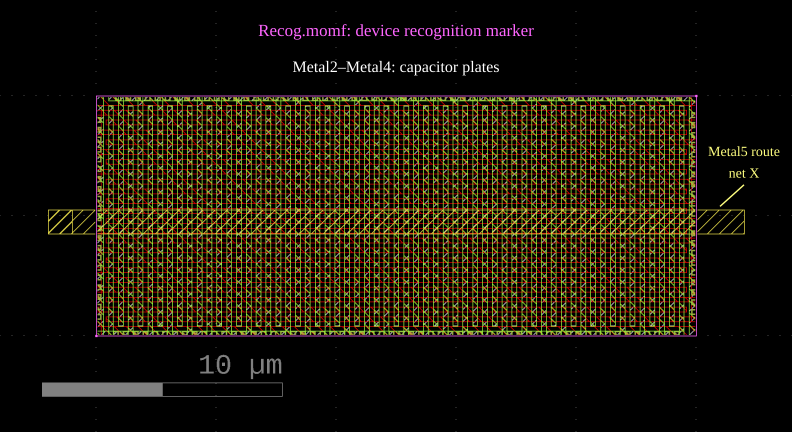
Metal5 route crosses above them; its coupling is external to the device comparison.
The ihp-sg13g2 example has a cap_cmomf device with Metal2–Metal4 plates, width \(10\,\mu\mathrm m\) and length \(25\,\mu\mathrm m\). A separate Metal5 route on net X crosses above it. The model reference is the nominal mutual capacitance of mim_top ↔︎ mim_btm, with no corner or mismatch variation.
Set KPEX_DIR to the source checkout. This command uses its committed LVS database as well as the GDS, so that the comparison can find the original recognition marker. Here --scale y normalizes the fringe response at the halo, independently of SPICE geometry scaling:
pattern=cap_cmomf_w10u_l25u_m2_m4_m5_wire
layouts="$KPEX_DIR/testdata/designs/ihp-sg13g2/test_patterns"
lvsdbs="$KPEX_DIR/testdata/lvsdb/ihp-sg13g2/test_patterns"
kpex extract --pdk ihp-sg13g2 --2.5D --mode CC \
--blackbox y --halo 8 --scale y \
--gds "$layouts/$pattern.gds.gz" \
--lvsdb "$lvsdbs/$pattern.lvsdb.gz" \
--check-device-caps --out-dir checks-mom \
--out-result checks-mom.jsonWith klayout-pex 0.9.0, including the sidewall counting correction and refreshed nominal coefficients, the comparison reports:
The device comparison is kept separately from the parasitic netlist. The netlist retains the compact-model instance and the external couplings, including those to X and the substrate. checks-mom.json records the comparison in device_capacitance_checks, including the three contributions in farads, the ratio, the reference source and its assumptions.
An explicit JSON file replaces the automatic selection. It can select one device and terminal pair, supply an independent reference, and optionally make the comparison a pass/fail check. For the preceding example, this reference file specifies an illustrative ±5% acceptance interval:
Repeat the example command with --check-device-caps mom-reference.json. These bounds pass for the recorded ratio 1.03345, producing exit code 0.
To exercise the failure path, change max_ratio in the reference file to 1.0 and repeat the same command. The measured ratio now exceeds the upper bound, producing exit code 1. The extracted netlist and the comparison remain available to inspect.
These bounds illustrate the mechanism. Choose a justified acceptance interval for the model, its assumptions and the intended use. Passing an interval does not establish calibration.
A numeric capacitance is in farads, and a string accepts SPICE suffixes. The capacitance must be finite and positive. Ratio bounds are optional, finite and nonnegative, with min_ratio no greater than max_ratio. Bounds are inclusive. Omitting both leaves the result informational. Duplicate references for the same device and unordered terminal pair are rejected.
device and device_class identify the device in the extracted LVS circuit, before schematic renaming. Use the names in device_capacitance_checks or the LVS database. The exported netlist may use different schematic-derived names (Section 6.4.3). Terminal names must match that LVS device class.
The different failure policies remain independent:
| Result | Meaning | Next action |
|---|---|---|
| Structural problem | The extracted netlist does not preserve a checked connectivity or quantity invariant | Inspect the reported terminal, port or net before simulation |
| Admittance error above the limit | Reduction changed the sampled terminal response too much | Reduce the time-constant threshold or retain the full network |
| Device ratio outside supplied bounds | Geometry and the chosen reference disagree beyond the selected interval | Review geometry, coefficients, reference assumptions and bounds |
| Informational device ratio | A comparison was evaluated without acceptance bounds | Decide whether the reference is appropriate for the intended use |
| Unevaluable requested comparison | The requested evidence could not be established | Resolve the stated geometry, reference, numerical or resource problem |
--check n changes the structural failure policy only. It does not disable a requested device comparison or admittance check. When several checks fail, their problems are retained together in the run result.
The examples above were verified with klayout-pex 0.9.0 and the KLayout Python module 0.30.13. The device example explicitly fixes the halo and fringe scaling. Its numbers document that run, not a calibration target or a promise that later coefficient revisions preserve them.
The initial goal of KPEX/2.5D is to basically come up with the same results as KPEX/MAGIC.
Notes about this comparison:
Magic 8.3 rev 486 is used, but augmented with debug logging6, which will be shown and discussed for each example.
MAGIC 8.3.693 or KPEX 0.9.0, which restore the full-pair convention (Section 5.4)KPEX/MAGIC halo is set to --magic-halo=100000
--magic-halo=8 to give better illustrationsKPEX/2.5D halo is set to --halo=100000overlap_shield_same_net_* and plate_20um_x_20um_li1_over_* were compared with MAGIC 8.3.681 without debug logging, so their MAGIC capacitances are given per net pair.single_plate_100um_x_100um_li1_over_substrate| Description | Layer Top | Net Top | Layer Bottom | Net Bottom | MAGIC [fF] | KPEX/2.5D [fF] | MAGIC Lines |
|---|---|---|---|---|---|---|---|
| Overlap | li1 | li1 | substrate | VSUBS | 369.9 | 369.9 | 4 |
| Description | Layer Top | Net Top | Layer Bottom | Net Bottom | MAGIC [fF] | KPEX/2.5D [fF] | MAGIC Lines |
|---|---|---|---|---|---|---|---|
| Fringe (top) | li1 | li1 | substrate | VSUBS | 4.07 | 4.07 | 5 |
| Fringe (left) | li1 | li1 | substrate | VSUBS | 4.07 | 4.07 | 6 |
| Fringe (right) | li1 | li1 | substrate | VSUBS | 4.07 | 4.07 | 7 |
| Fringe (bottom) | li1 | li1 | substrate | VSUBS | 4.07 | 4.07 | 8 |
Magic 8.3 revision 486 - Compiled on `date`.
----------------------------------------------------
CapDebug (extNodeAreaFunc/Area) layer li(90), net li_0_0#, area=400000000 (10000 µm^2) nreg_cap += 369.9 fF
CapDebug (extNodeAreaFunc/Perimeter/TopSide) layer li(90), net li_0_0#, length=20000 (100 µm), nreg_cap += 4.07 fF (now nreg_cap = 373.97 fF)
CapDebug (extNodeAreaFunc/Perimeter/LeftSide) layer li(90), net li_0_0#, length=20000 (100 µm), nreg_cap += 4.07 fF (now nreg_cap = 378.04 fF)
CapDebug (extNodeAreaFunc/Perimeter/BottomSide) layer li(90), net li_0_0#, length=20000 (100 µm), nreg_cap += 4.07 fF (now nreg_cap = 382.11 fF)
CapDebug (extNodeAreaFunc/Perimeter/RightSide) layer li(90), net li_0_0#, length=20000 (100 µm), nreg_cap += 4.07 fF (now nreg_cap = 386.18 fF)
CapDebug (extSetResist): li_0_0# area=400000000 (10000 µm^2) perim=80000 (400 µm)
CapDebug ---sidewall_20um_length_distance_200nm_li1| Description | Layer Top | Net Top | Layer Bottom | Net Bottom | MAGIC [fF] | KPEX/2.5D [fF] | MAGIC Lines |
|---|---|---|---|---|---|---|---|
| Overlap | li1 | A | substrate | VSUBS | 0.7398 | 0.74 | 4 |
| Overlap | li1 | B | substrate | VSUBS | 0.7398 | 0.74 | 11 |
| Description | Layer | Net1 | Net2 | MAGIC [fF] | KPEX/2.5D [fF] | MAGIC Lines |
|---|---|---|---|---|---|---|
| Sidewall | li1 | A | B | 0.375 | 0.375 | 18 |
| Sidewall | li1 | B | A | 0.375 | 0.375 | 21 |
The historical table sums to \(0.75\,fF\). Lines 18 and 21 of the recorded CapDebug output instead sum to \(1.5\,fF\). The table was manually halved under the superseded interpretation described above. These rows need a new comparison with the corrected tools and matching coefficient tables before they can serve as a current numerical reference.
| Description | Layer Top | Net Top | Layer Bottom | Net Bottom | MAGIC [fF] | KPEX/2.5D [fF] | MAGIC Lines |
|---|---|---|---|---|---|---|---|
| Fringe (top) | li1 | A | substrate | VSUBS | 0.814 | 0.814 | 5 |
| Fringe (left) | li1 | A | substrate | VSUBS | 0.0407 | 0.041 | 6 |
| Fringe (bottom) | li1 | A | substrate | VSUBS | 0.814 | 0.076 | 7 |
| Fringe (bottom) | li1 | A | substrate | VSUBS | -0.7379 | — | 19 |
| Fringe (right) | li1 | A | substrate | VSUBS | 0.0407 | 0.041 | 8 |
| Fringe (top) | li1 | B | substrate | VSUBS | 0.814 | 0.076 | 12 |
| Fringe (top) | li1 | B | substrate | VSUBS | -0.7379 | — | 22 |
| Fringe (left) | li1 | B | substrate | VSUBS | 0.0407 | 0.041 | 13 |
| Fringe (bottom) | li1 | B | substrate | VSUBS | 0.814 | 0.814 | 14 |
| Fringe (right) | li1 | B | substrate | VSUBS | 0.0407 | 0.041 | 15 |
Magic 8.3 revision 486 - Compiled on `date`.
----------------------------------------------------
CapDebug (extNodeAreaFunc/Area) layer li(90), net li_0_240#, area=800000 (20 µm^2) nreg_cap += 0.7398 fF
CapDebug (extNodeAreaFunc/Perimeter/TopSide) layer li(90), net li_0_240#, length=4000 (20 µm), nreg_cap += 0.814 fF (now nreg_cap = 1.5538 fF)
CapDebug (extNodeAreaFunc/Perimeter/LeftSide) layer li(90), net li_0_240#, length=200 (1 µm), nreg_cap += 0.0407 fF (now nreg_cap = 1.5945 fF)
CapDebug (extNodeAreaFunc/Perimeter/BottomSide) layer li(90), net li_0_240#, length=4000 (20 µm), nreg_cap += 0.814 fF (now nreg_cap = 2.4085 fF)
CapDebug (extNodeAreaFunc/Perimeter/RightSide) layer li(90), net li_0_240#, length=200 (1 µm), nreg_cap += 0.0407 fF (now nreg_cap = 2.4492 fF)
CapDebug (extSetResist): li_0_240# area=800000 (20 µm^2) perim=8400 (42 µm)
CapDebug ---
CapDebug (extNodeAreaFunc/Area) layer li(90), net li_0_0#, area=800000 (20 µm^2) nreg_cap += 0.7398 fF
CapDebug (extNodeAreaFunc/Perimeter/TopSide) layer li(90), net li_0_0#, length=4000 (20 µm), nreg_cap += 0.814 fF (now nreg_cap = 1.5538 fF)
CapDebug (extNodeAreaFunc/Perimeter/LeftSide) layer li(90), net li_0_0#, length=200 (1 µm), nreg_cap += 0.0407 fF (now nreg_cap = 1.5945 fF)
CapDebug (extNodeAreaFunc/Perimeter/BottomSide) layer li(90), net li_0_0#, length=4000 (20 µm), nreg_cap += 0.814 fF (now nreg_cap = 2.4085 fF)
CapDebug (extNodeAreaFunc/Perimeter/RightSide) layer li(90), net li_0_0#, length=200 (1 µm), nreg_cap += 0.0407 fF (now nreg_cap = 2.4492 fF)
CapDebug (extSetResist): li_0_0# area=800000 (20 µm^2) perim=8400 (42 µm)
CapDebug ---
CapDebug (sidewall): A-B (layer li), overlap=4000 (20 µm), sep=40 (0.2 µm), e->ec_cap=12.75 (0.0255 fF), e->ec_offset=28 (0.14 µm), delta += 0.75 fF … now is 0.75 fF
CapDebug (obsolete_fringe (blocked)): A -= 0.737881 fF … now A == 1.711319 fF
overlapMult=0.003699 (3.699 aF/µm^2) dnear=40 (0.2 µm), snear=0.0935129 (0.000467564 µm), perimCap[90][0]=0.2035 (40.7 /µm), length=4000 (20 µm)
CapDebug (sidewall): A-B (layer li), overlap=4000 (20 µm), sep=40 (0.2 µm), e->ec_cap=12.75 (0.0255 fF), e->ec_offset=28 (0.14 µm), delta += 0.75 fF … now is 1.5 fF
CapDebug (obsolete_fringe (blocked)): B -= 0.737881 fF … now B == 1.711319 fF
overlapMult=0.003699 (3.699 aF/µm^2) dnear=40 (0.2 µm), snear=0.0935129 (0.000467564 µm), perimCap[90][0]=0.2035 (40.7 /µm), length=4000 (20 µm)
exttospice finished.sideoverlap_simple_plates_li1_m1| Description | Layer Top | Net Top | Layer Bottom | Net Bottom | MAGIC [fF] | KPEX/2.5D [fF] | MAGIC Lines |
|---|---|---|---|---|---|---|---|
| Overlap | li1 | li1 | substrate | VSUBS | 3.699 | 3.7 | 7 |
| Overlap | met1 | met1 | substrate | VSUBS | 232.02 | 232.02 | 15 |
| Description | Layer Top | Net Top | Layer Bottom | Net Bottom | MAGIC [fF] | KPEX/2.5D [fF] | MAGIC Lines |
|---|---|---|---|---|---|---|---|
| Fringe (top) | li1 | li1 | substrate | VSUBS | 2.035 | 2.035 | 9 |
| Fringe (bottom) | li1 | li1 | substrate | VSUBS | 2.035 | 2.035 | 11 |
| Fringe (left) | li1 | li1 | substrate | VSUBS | 0.081 | 0.081 | 10 |
| Fringe (right) | li1 | li1 | substrate | VSUBS | 0.081 | 0.081 | 12 |
| Fringe (top) | met1 | met1 | substrate | VSUBS | 6.0855 | 6.085 | 17 |
| Fringe (bottom) | met1 | met1 | substrate | VSUBS | 6.0855 | 5.927 | 19 |
| Fringe (bottom) | met1 | met1 | substrate | VSUBS | -0.1579 | — | 19 |
| Fringe (left) | met1 | met1 | substrate | VSUBS | 2.4342 | 2.434 | 18 |
| Fringe (right) | met1 | met1 | substrate | VSUBS | 2.4342 | 2.434 | 20 |
MAGIC handles shielding differently than KPEX/2.5D, it first assumes no shield exists, and later subtracts portions to arrive at the shielded value. That’s why the bold cells differ. Line 15 - 20 accumulate contributions, whereas line 34 subtracts a contribution:
CapDebug (extNodeAreaFunc/Area) layer m1(97), net m1_10000_10000#, area=360000000 (9000 µm^2) nreg_cap += 232.02 fFCapDebug (extNodeAreaFunc/Perimeter/TopSide) layer m1(97), net m1_10000_10000#, length=30000 (150 µm), nreg_cap += 6.0855 fF (now nreg_cap = 238.105 fF)CapDebug (extNodeAreaFunc/Perimeter/LeftSide) layer m1(97), net m1_10000_10000#, length=12000 (60 µm), nreg_cap += 2.4342 fF (now nreg_cap = 240.54 fF)CapDebug (extNodeAreaFunc/Perimeter/BottomSide) layer m1(97), net m1_10000_10000#, length=30000 (150 µm), nreg_cap += 6.0855 fF (now nreg_cap = 246.625 fF)CapDebug (extNodeAreaFunc/Perimeter/RightSide) layer m1(97), net m1_10000_10000#, length=12000 (60 µm), nreg_cap += 2.4342 fF (now nreg_cap = 249.059 fF)nreg_cap -= 0.157966 fF (now nreg_cap = 248.901 fF)Comparison:
KPEX/2.5D: \(4.86834 + 0.77242 + 0.2867 = 5.9275\)MAGIC: \(6.0855 - 0.157966 = 5.9275\)| Description | Layer Top | Net Top | Layer Bottom | Net Bottom | MAGIC [fF] | KPEX/2.5D [fF] | MAGIC Lines |
|---|---|---|---|---|---|---|---|
| Fringe (top) | li1 | li1 | met1 | met1 | 0.598 | 0.06 | 26 |
| Fringe (bottom) | met1 | met1 | li1 | li1 | 0.0654 | 0.065 | 36 |
Magic 8.3 revision 486 - Compiled on `date`.
----------------------------------------------------
Extracting sideoverlap_simple_plates_li1_m1 into /Users/martin/Source/klayout-pex/output_sky130A/sideoverlap_simple_plates_li1_m1__sideoverlap_simple_plates_li1_m1/magic_CC/sideoverlap_simple_plates_li1_m1.ext:
CapDebug (extNodeAreaFunc/Area) layer li(90), net li_34000_9000, area=4000000 (100 µm^2) nreg_cap += 3.699 fF
CapDebug (extNodeAreaFunc/Perimeter/TopSide) layer li(90), net li_34000_9000, length=10000 (50 µm), nreg_cap += 2.035 fF (now nreg_cap = 5.734 fF)
CapDebug (extNodeAreaFunc/Perimeter/LeftSide) layer li(90), net li_34000_9000, length=400 (2 µm), nreg_cap += 0.0814 fF (now nreg_cap = 5.8154 fF)
CapDebug (extNodeAreaFunc/Perimeter/BottomSide) layer li(90), net li_34000_9000, length=10000 (50 µm), nreg_cap += 2.035 fF (now nreg_cap = 7.8504 fF)
CapDebug (extNodeAreaFunc/Perimeter/RightSide) layer li(90), net li_34000_9000, length=400 (2 µm), nreg_cap += 0.0814 fF (now nreg_cap = 7.9318 fF)
CapDebug (extSetResist): li_34000_9000 area=4000000 (100 µm^2) perim=20800 (104 µm)
CapDebug ---
CapDebug (extNodeAreaFunc/Area) layer m1(97), net m1_10000_10000#, area=360000000 (9000 µm^2) nreg_cap += 232.02 fF
CapDebug (extNodeAreaFunc/Perimeter/TopSide) layer m1(97), net m1_10000_10000#, length=30000 (150 µm), nreg_cap += 6.0855 fF (now nreg_cap = 238.105 fF)
CapDebug (extNodeAreaFunc/Perimeter/LeftSide) layer m1(97), net m1_10000_10000#, length=12000 (60 µm), nreg_cap += 2.4342 fF (now nreg_cap = 240.54 fF)
CapDebug (extNodeAreaFunc/Perimeter/BottomSide) layer m1(97), net m1_10000_10000#, length=30000 (150 µm), nreg_cap += 6.0855 fF (now nreg_cap = 246.625 fF)
CapDebug (extNodeAreaFunc/Perimeter/RightSide) layer m1(97), net m1_10000_10000#, length=12000 (60 µm), nreg_cap += 2.4342 fF (now nreg_cap = 249.059 fF)
CapDebug (extSetResist): m1_10000_10000# area=360000000 (9000 µm^2) perim=84000 (420 µm)
CapDebug ---
CapDebug (extSideOverlapHalo): (li-m1) length=30.000000 µm, mult=0.011420, dnear=3.000000 µm (600), dfar=8.000000 µm (1600), snear=0.907713, sfar=0.965163 (cfrac=0.057450)
CapDebug (extSideOverlapHalo) (li-substrate): mult=0.003699, snear=0.730477, sfar=0.893413 (sfrac=0.162935)
CapDebug (extSideOverlapHalo): efflength=1.72351 µm, cap+=0.299029 aF, cap=59.8059 aF, e->ec_cap=0.1735, so_coupfrac=0, subfrac+=0, subfrac=0, so_subfrac=0
CapDebug (sideoverlaphalo): met1-li1 += 0.059806 fF … now met1-li1 == 0.059806 fF
CapDebug ---
CapDebug (extSideOverlapHalo): (m1-li) length=30.000000 µm, mult=0.011420, dnear=3.000000 µm (600), dfar=5.000000 µm (1000), snear=0.907713, sfar=0.944366 (cfrac=0.036653)
CapDebug (extSideOverlapHalo) (m1-substrate): mult=0.002578, snear=0.634619, sfar=0.764408 (sfrac=0.129789)
CapDebug (extSideOverlapHalo): efflength=1.0996 µm, cap+=0.327131 aF, cap=65.4263 aF, e->ec_cap=0.2975, so_coupfrac=0, subfrac+=0, subfrac=0, so_subfrac=0
CapDebug (extSideOverlapHalo/obsolete_perimcap) layer m1(97), net met1,
efflength=3.89366 µm (778.733) = (sfrac(0.129789) - subfrac(0)) * length(30 µm)
exts_perimCap[m1][0] = 0.20285
nreg_cap -= 0.157966 fF (now nreg_cap = 248.901 fF)
CapDebug (obsolete_perimcap): met1 -= 0.157966 fF … now met1 == 248.901423 fF
CapDebug (sideoverlaphalo): met1-li1 += 0.065426 fF … now met1-li1 == 0.125232 fFoverlap_shield_same_net_100um_x_100um_li1_m1_m2Plates of \(100\,\mu m \times 100\,\mu m\): li1 and met1 of net A, joined by an mcon in a corner, under met2 of net B. met1 shields li1 from met2, although both are of net A.
| Description | Layer Top | Net Top | Layer Bottom | Net Bottom | KPEX/2.5D [fF] |
|---|---|---|---|---|---|
| Overlap | met2 | B | met1 | A | 1338.6 |
| Overlap | met2 | B | li1 | A | — |
| Overlap | li1 | A | substrate | VSUBS | 369.9 |
| Description | Layer Top | Net Top | Layer Bottom | Net Bottom | KPEX/2.5D [fF] |
|---|---|---|---|---|---|
| Fringe (all sides) | li1 | A | substrate | VSUBS | 16.28 |
| Fringe (all sides) | met1 | A | substrate | VSUBS | 16.228 |
| Fringe (all sides) | met2 | B | substrate | VSUBS | 15.104 |
| Net 1 | Net 2 | MAGIC [fF] | KPEX/2.5D [fF] |
|---|---|---|---|
| A | B | 1338.6 | 1338.6 |
| A | VSUBS | 402.41 | 402.408 |
| B | VSUBS | 15.104 | 15.104 |
Up to #299, only shapes of other nets shielded in KPEX/2.5D, so A ↔︎ B also got the overlap of met2 and li1 below met1: \(1338.6 + 375.6 = 1714.2\,fF\).
overlap_shield_same_net_half_100um_x_100um_li1_m1_m2The same plates, but met1 covers only the left half of li1: met2 overlaps met1 on the left half and li1 on the right half.
| Description | Layer Top | Net Top | Layer Bottom | Net Bottom | KPEX/2.5D [fF] |
|---|---|---|---|---|---|
| Overlap | met2 | B | met1 | A | 669.3 |
| Overlap | met2 | B | li1 | A | 187.8 |
| Overlap | li1 | A | substrate | VSUBS | 369.9 |
| Description | Layer Top | Net Top | Layer Bottom | Net Bottom | KPEX/2.5D [fF] |
|---|---|---|---|---|---|
| Fringe (all sides) | li1 | A | substrate | VSUBS | 16.28 |
| Fringe (all sides) | met1 | A | substrate | VSUBS | 8.214 |
| Fringe (right) | met1 | A | met2 | B | 4.796 |
| Fringe (all sides) | met2 | B | substrate | VSUBS | 15.104 |
| Net 1 | Net 2 | MAGIC [fF] | KPEX/2.5D [fF] |
|---|---|---|---|
| A | B | 861.9 | 861.896 |
| A | VSUBS | 394.39 | 394.394 |
| B | VSUBS | 15.104 | 15.104 |
Up to #299, KPEX/2.5D also counted the overlap of met2 and li1 below met1 (the left half), so A ↔︎ B was \(861.896 + 187.8 = 1049.696\,fF\).
plate_20um_x_20um_li1_over_ntapA li1 plate of \(20\,\mu m \times 20\,\mu m\) of net A over the middle of an n-tap of \(40\,\mu m \times 40\,\mu m\) in an nwell of net W. The tap is active area like the source/drain, so li1 has the capacitance of the diffusion to it.
| Description | Layer Top | Net Top | Layer Bottom | Net Bottom | KPEX/2.5D [fF] |
|---|---|---|---|---|---|
| Overlap | li1 | A | tap (ntap) | W | 22.12 |
| Description | Layer Top | Net Top | Layer Bottom | Net Bottom | KPEX/2.5D [fF] |
|---|---|---|---|---|---|
| Fringe (all sides) | li1 | A | tap (ntap) | W | 3.338 |
| Fringe (all sides) | li1 | A | nwell | W | 0.046 |
| Fringe (all sides) | li1 | A | substrate | VSUBS | 0.233 |
| Net 1 | Net 2 | MAGIC [fF] | KPEX/2.5D [fF] |
|---|---|---|---|
| A | W | 25.5042 | 25.504 |
| A | VSUBS | 0.2326 | 0.232 |
| W | VSUBS | 232.32 | — |
KPEX/2.5D has no capacitance between the nwell and the substrate, the PDK models that junction as a diode.KPEX/2.5D didn’t know the taps in the capacitance extraction, so li1 had the capacitance to the nwell below the tap: A ↔︎ W \(17.82\,fF\).plate_20um_x_20um_li1_over_ptapThe same plate over a p-tap, which a licon in its corner ties to the li1 pad VSS (like in the standard cells, as in the sky130A LVS deck only the licon joins a p-tap to a net).
| Description | Layer Top | Net Top | Layer Bottom | Net Bottom | KPEX/2.5D [fF] |
|---|---|---|---|---|---|
| Overlap | li1 | A | tap (ptap) | VSS | 22.12 |
| Description | Layer Top | Net Top | Layer Bottom | Net Bottom | KPEX/2.5D [fF] |
|---|---|---|---|---|---|
| Fringe (all sides) | li1 | A | tap (ptap) | VSS | 3.338 |
| Fringe (all sides) | li1 | A | substrate | VSUBS | 0.279 |
| Fringe (all sides) | li1 | VSS | substrate | VSUBS | 0.130 |
| Net 1 | Net 2 | MAGIC [fF] | KPEX/2.5D [fF] |
|---|---|---|---|
| A | VSS | 18.3132 | 25.458 |
| A | VSUBS | — | 0.278 |
| VSS | VSUBS | — | 0.13 |
MAGIC and KPEX/2.5D differ here on purpose:
MAGIC makes the p-tap part of its substrate node (substrate *ppdiff,… of the sky130A tech), whose area gets the field’s \(36.99\,aF/\mu m^2\) (\(14.80\,fF\)), but its fringe the diffusion’s: \(18.31\,fF\) to the one node VSS.KPEX/2.5D has the p-tap as diffusion, the same stack as the source/drain, like the n-tap: \(55.3\,aF/\mu m^2\) (\(22.12\,fF\)).VSS) and the substrate (VSUBS) are different nets, MAGIC joins them.KPEX/2.5D had li1 over the field: A ↔︎ VSUBS \(18.05\,fF\).r_single_wire_li1li1If we apply the formula illustrated in Section 5.8.1, we get \[ R_{wire} = \frac{L}{H} * R_{coeff} \] \[ R_{wire} = \frac{9.85\,\mu m}{0.15\,\mu m} * 12800\,mΩ = 8405\dot{3}\,mΩ = 840.5\dot{3}\,Ω \]
Magic 8.3 revision 486 - Compiled on `date`.
----------------------------------------------------
...
Warning: Ports "A" and "B" are electrically shorted.
Location is (1970, -15); drivepoint (1970, -15)
Location is (0, -15); drivepoint (0, -15)
ResCalcEastWest: A (0, -0.075) <-> B (9.85, -0.075) @ li
exts_sheetResist[li]=12800, length=9.85, height=0.15, resistor->rr_value = 840533 mΩ
ResCalcEastWest: A (0, -0.075) <-> B (9.85, -0.075) @ li
exts_sheetResist[li]=12800, length=9.85, height=0.15, resistor->rr_value = 840533 mΩ
Total Nets: 2MAGIC recognizes that ports A and B are shorted. The purpose of these test patterns is to look at minimized problems in isolation, like the resistance of the wire here. They are not realistic examples, so it appears to be a bug in that corner case, that the resistance is reported twice.
r_wire_voltage_divider_li1With MAGIC, we get (again, R3-R8 are redundant):
| Description | Layer | Node1 | Node2 | MAGIC [Ω] | KPEX/2.5D [Ω] |
|---|---|---|---|---|---|
| Wire | li1 | A | internal N1 | 426.668 | 426.667 |
| Wire | li1 | B | internal N1 | 413.868 | 413.867 |
| Wire | li1 | C | internal N1 | 72.5338 | 72.533 |
r_contact_1x1_minsize_mconmet1mconli1If we apply the formula illustrated in Section 5.8.2, we get
\[ n_x = 1 + \left\lfloor\frac{w - (viawidth + 2 * border)}{viawidth + spacing}\right\rfloor \]
\[ n_x = 1 + \left\lfloor\frac{0.17\,\mu m - (0.17 + 2 * 0.0)\,\mu m}{0.17\,\mu m + 0.19\,\mu m}\right\rfloor = 1 \]
\[ n_y = 1 + \left\lfloor\frac{h - (viawidth + 2 * border)}{viawidth + spacing}\right\rfloor \]
\[ n_y = 1 + \left\lfloor\frac{0.17\,\mu m - (0.17 + 2 * 0.0)\,\mu m}{0.17\,\mu m + 0.19\,\mu m}\right\rfloor = 1 \]
\[ R_{via} = \frac{R_{coeff}}{n_x * n_y} \,\,\,\,\,\,\, \left[\frac{mΩ}{\text{via count}}\right] \]
\[ R_{via} = \frac{9300\,mΩ}{1 * 1} = 9300\,mΩ = 9.3\,Ω \]
| Device | Description | Layer | Node1 | Node2 | MAGIC [Ω] | KPEX/2.5D [Ω] |
|---|---|---|---|---|---|---|
| R2 | Wire | mcon | internal $0.16 |
pin BOT |
0.0 | |
| R1 | Via | li1 | internal $0.16 |
internal $1.23 |
9.3 | 9.3 |
| R3 | Wire | met1 | internal $1.23 |
pin TOP |
0.0 |
MAGIC extraction results are shown below.
Magic 8.3 revision 486 - Compiled on `date`.
----------------------------------------------------
...
Warning: Ports "TOP" and "BOT" are electrically shorted.
Location is (0, 0); drivepoint (0, 0)
Location is (0, 0); drivepoint (0, 0)
ResDoContacts: (null) (0.085, 0.085) <-> (null) (0.085, 0.085) @ v0
W = 0.17 µm, H = 0.17 µm
exts_viaResist[v0]=9300, viawidth=0.17 µm, spacing=0.19 µm, border=0 µm
squaresx=1, squaresy=1, resistor->rr_value = 9300 mΩr_via_stack_1x1_minsize_poly_to_met5On each metal layer, a pin is placed directly in middle of the via.
| Device | Description | Layer | Node1 | Node2 | MAGIC [Ω] | KPEX/2.5D [Ω] |
|---|---|---|---|---|---|---|
| R2 | Wire | poly | internal $0.17 |
pin poly |
0.0 | |
| R1 | Via | licon | internal $0.17 |
internal $1.18 |
152.0 | |
| R4 | Wire | li1 | internal $1.18 |
pin li1 |
0.0 | |
| R3 | Wire | li1 | internal $1.18 |
internal $2.18 |
0.0 | |
| R8 | Via | mcon | internal $2.18 |
internal $3.25 |
9.3 | |
| R10 | Wire | met1 | internal $3.25 |
pin met1 |
0.0 | |
| R9 | Wire | met1 | internal $3.25 |
internal $4.25 |
0.0 | |
| R11 | Via | via | internal $4.25 |
internal $5.26 |
4.5 | |
| R13 | Wire | met2 | internal $5.26 |
pin met2 |
0.0 | |
| R12 | Wire | met2 | internal $5.26 |
internal $6.26 |
0.0 | |
| R14 | Via | via2 | internal $6.26 |
internal $7.43 |
3.41 | |
| R16 | Wire | met3 | internal $7.43 |
pin met3 |
0.0 | |
| R15 | Wire | met3 | internal $7.43 |
internal $8.43 |
0.0 | |
| R17 | Via | via3 | internal $8.43 |
internal $9.40 |
3.41 | |
| R18 | Wire | met4 | internal $9.40 |
pin met4 |
0.0 | |
| R6 | Wire | met4 | internal $10.40 |
internal $9.40 |
0.0 | |
| R5 | Via | via4 | internal $10.40 |
internal $11.27 |
0.38 | |
| R7 | Wire | met5 | internal $11.27 |
pin met5 |
0.0 |
KPEX/2.5D extraction results are shown below.
Device;Net1;Net2;Capacitance [fF];Resistance [Ω]
R2;$0.17;poly;;0.0
R1;$0.17;$1.18;;152.0
R4;$1.18;li1;;0.0
R3;$1.18;$2.18;;0.0
R8;$2.18;$3.25;;9.3
R10;$3.25;met1;;0.0
R9;$3.25;$4.25;;0.0
R11;$4.25;$5.26;;4.5
R13;$5.26;met2;;0.0
R12;$5.26;$6.26;;0.0
R14;$6.26;$7.43;;3.41
R16;$7.43;met3;;0.0
R15;$7.43;$8.43;;0.0
R17;$8.43;$9.40;;3.41
R18;$9.40;met4;;0.0
R6;$10.40;$9.40;;0.0
R5;$10.40;$11.27;;0.38
R7;$11.27;met5;;0.0MAGIC extraction results are shown below.
.subckt r_via_stack_1x1_minsize_poly_to_met5 poly li1 met1 met2 met3 met4 met5
R0 li1.n3 poly 175.37
R1 li1.n4 li1.n3 9.3005
R2 li1.n3 li1 6.4005
R3 li1.n4 li1.n2 4.5005
R4 li1.n1 li1.n0 3.4105
R5 li1.n2 li1.n1 3.4105
R6 li1.n0 met5 0.3834
R7 met1 li1.n4 0.063
R8 li1.n2 met2 0.0545541
R9 li1.n1 met3 0.0232879
R10 li1.n0 met4 0.00687288
; removed the redundant devices (5.3.540)
.endsnfet_li1_redux| Device | Description | Layer | Node1 | Node2 | KPEX/2.5D [Ω] |
|---|---|---|---|---|---|
| R1 | Wire | li1 | internal G.$1.17 |
pin G |
2.418 |
| R2 | Via | licon | internal G.$0.16 (poly) |
internal G.$1.17 (li1) |
152.0 |
| R3 | Wire | poly | G.P0.16 (G device terminal) |
internal G.$0.16 |
316.321 |
KPEX/2.5D extraction results are shown below.
MAGIC extraction results are shown below.
Notes about this comparison:
G \(\leftrightarrow\) G.n0, but node G.n0 is dangling and not connectednfet_li1Figure 33 gives an 3D overview over the 3 nets.
KPEX/2.5D extraction results are shown below.
| Device | Description | Layer | Net | Node1 | Node2 | MAGIC [Ω] | KPEX/2.5D [Ω] |
|---|---|---|---|---|---|---|---|
| R1 | Wire | li1 | D |
pin D |
internal D.$3.18 |
30.494 | |
| R4 | Wire | li1 | D |
internal D.$1.18 |
internal D.$3.18 |
25.6 | |
| R2 | Via | licon | D |
internal D.$0.13 (nsdm) |
internal D.$1.18 (li1) |
185.0 | |
| R5 | Via | licon | D |
internal D.$2.13 (nsdm) |
internal D.$3.18 (li1) |
185.0 | |
| R3 | Wire | nsdm | D |
internal D.$0.13 |
D.P0.13 (D device terminal) |
0.0 | |
| R6 | Wire | nsdm | D |
internal D.$2.13 |
D.P0.13 (D device terminal) |
0.0 | |
| R7 | Wire | nsdm | G |
pin G |
internal G.$1.18 |
6.4 | |
| R8 | Via | licon | G |
internal G.$0.17 (poly) |
internal G.$1.18 (li1) |
152.0 | |
| R9 | Wire | poly | G |
internal G.$0.17 |
G.P0.17 (G device terminal) |
234.381 | |
| R10 | Wire | li1 | S |
pin S |
internal S.$1.18 |
43.294 | |
| R13 | Wire | nsdm | S |
internal S.$1.18 |
S.$3.18 (S device terminal) |
0.0 | |
| R11 | Via | licon | S |
internal S.$0.13 (nsdm) |
internal S.$1.18 (li1) |
185.0 | |
| R14 | Via | licon | S |
internal S.$2.13 (nsdm) |
internal S.$3.18 (li1) |
185.0 | |
| R12 | Wire | nsdm | S |
internal S.$0.13 |
S.P0.13 (S device terminal) |
0.0 | |
| R15 | Wire | nsdm | S |
internal S.$2.13 |
S.P0.13 (S device terminal) |
0.0 |
To improve readability, the illustrations in Figure 34 and Figure 35 do not depict all nodes correctly in regard of the the z-axis orientation
R1, R4, R7, R9 would be the whole wire sectionD)”
Figure 34 illustrates the parasitic resistance contributions for net D (all nets can be seen in Figure 33). Net G is illustrated in Figure 35. Net S is not worth showing, as it is similar to net D.
G)”
MAGIC extraction results are shown below.
Notes about this comparison:
G \(\leftrightarrow\) G.n0, but node G.n0 is dangling and not connectedThis section reviews the original TICER paper (Sheehan 1999), and illustrates the main ideas.
Given \(N\)-terminal star network:
Sum of resistances \(\gamma_N\), and capacitances \(\chi_N\):
\[ \gamma_N = \sum_{k=0}^{N-1} g_{kN}, \quad \chi_N = \sum_{k=0}^{N-1} c_{kN} \tag{1.2} \]
The time constant \(\tau_N\) of a given node \(N\) then is: \[ \tau_N = \frac{\chi_N}{\gamma_N} = \frac{\sum_{k=0}^{N-1} c_{kN}}{\sum_{k=0}^{N-1} g_{kN}} \tag{1.3} \]
Basic node elimination idea: Given a desired frequency window, using the time-constants, we can classify nodes into 3 groups: slow / normal / quick. Then we can eliminate slow and quick nodes, as the normal nodes will suffice to preserve the behavior for the frequency window:
RC circuit in Laplace domain: \[ (s \mathbf{C} + \mathbf{G})\mathbf{v} = \mathbf{Y} \mathbf{v} = \mathbf{J} \tag{2.1} \]
This can be written as a block system: \[ \begin{bmatrix} \mathbf{\tilde{Y}} & \mathbf{y} \\ \mathbf{y}^T & s\chi_N + \gamma_N \end{bmatrix} \begin{bmatrix} \tilde{\mathbf{v}} \\ v_N \end{bmatrix} = \begin{bmatrix} \tilde{\mathbf{J}} \\ j_N \end{bmatrix} \tag{2.2} \]
In equation (2.2), Sheehan uses the tilde accent to name the remainder of the matrix \(\mathbf{Y}\) as \(\mathbf{\tilde{Y}}\), when looking only at the last row and column (same principle applies to vector \(\mathbf{v}\) and \(\mathbf{\tilde{v}}\)): \[\begin{equation} \mathbf{Y} = \left[ \begin{array}{cccc:c} y_{11} & y_{12} & \cdots & y_{1,N-1} & y_{1N} \\ y_{21} & y_{22} & \cdots & y_{2,N-1} & y_{2N} \\ \vdots & \vdots & \ddots & \vdots & \vdots \\ \hdashline y_{N1} & y_{N} & \cdots & y_{N,N-1} & y_{NN} \end{array} \right] = \left[ \begin{array}{c:c} \mbox{\LARGE $\mathbf{\tilde{Y}}$} & \begin{array}{c} y_{1N} \\ y_{2N} \\ \vdots \end{array} \\ \hdashline \begin{array}{cccc} y_{N1} & y_{N2} & \cdots & y_{N,N-1} \end{array} & y_{NN} \end{array} \right] = \left[ \begin{array}{c:c} \mbox{\LARGE $\mathbf{\tilde{Y}}$} & \mbox{\LARGE $\mathbf{y}$} \\ \hdashline \mbox{\LARGE $\mathbf{y}^T$} & y_{NN} \end{array} \right] \end{equation}\]
Suppose:
\[ \begin{aligned} \mathbf{E}_{ij} &= \frac{(g_{iN} + s c_{iN})(g_{jN} + s c_{jN})}{s\chi_N + \gamma_N} \\ &= \frac{g_{iN}g_{jN}}{s\chi_N + \gamma_N} + \frac{s \left( g_{jN} c_{iN} + g_{iN} c_{jN} \right)}{s\chi_N + \gamma_N} + \frac{s^2 c_{iN} c_{jN}}{s\chi_N + \gamma_N} \end{aligned} \]
\[ \mathbf{E}_{ij} \approx \frac{g_{iN}g_{jN}}{\cancel{s\chi_N} + \gamma_N} + s\frac{g_{jN} c_{iN} + g_{iN} c_{jN}}{\cancel{s\chi_N} + \gamma_N} + \cancel{\frac{s^2 c_{iN} c_{jN}}{s\chi_N + \gamma_N}} \]
\[ \mathbf{E}_{ij} \approx \frac{g_{iN}g_{jN}}{\gamma_N} + s\frac{g_{jN} c_{iN} + g_{iN} c_{jN}}{\gamma_N} \tag{3.2} \]
Eliminating a quick node:
Recipe for translating (3.2) into a modified circuit:
Suppose:
Starting with (2.4):
\[ \mathbf{E}_{ij} = \frac{(g_{iN} + s c_{iN})(g_{jN} + s c_{jN})}{s\chi_N + \gamma_N} \tag{2.4} \]
Given the approximation:
\[ \frac{1}{s \chi_N + \gamma_N} \approx \frac{1}{s \chi_N} \left( 1 - \frac{\gamma_N}{s \chi_N} \right) \tag{4.2} \]
Substitute (4.2) into (2.4):
\[ \begin{aligned} \mathbf{E}_{ij} &\approx \frac{(g_{iN} + s c_{iN})(g_{jN} + s c_{jN})}{s\chi_N}\left(1 - \frac{\gamma_N}{s\chi_N}\right) \\ &\approx \left(\frac{g_{iN}g_{jN}}{s\chi_N} + \frac{\cancel{s} \left( g_{jN} c_{iN} + g_{iN} c_{jN} \right)}{\cancel{s}\chi_N} + \frac{s\cancel{^2} c_{iN} c_{jN}}{\cancel{s}\chi_N}\right)\left(1 - \frac{\gamma_N}{s\chi_N}\right) \\ \end{aligned} \]
Expand:
\[ \begin{aligned} \mathbf{E}_{ij} &= \frac{g_{iN}g_{jN}}{s\chi_N} - \frac{g_{iN}g_{jN} \gamma_N}{s^2 \chi_N^2} \\ &+ \frac{g_{jN} c_{iN} + g_{iN} c_{jN}}{\chi_N} - \frac{\left( g_{jN} c_{iN} + g_{iN} c_{jN} \right) \gamma_N}{s\chi_N^2} \\ &+ \frac{s c_{iN} c_{jN}}{\chi_N} - \frac{\cancel{s} c_{iN} c_{jN} \gamma_N}{\cancel{s}\chi_N^2} \end{aligned} \]
After we remove constant terms:
\[ \begin{aligned} \mathbf{E}_{ij} &\approx \frac{g_{iN}g_{jN}}{s\chi_N} - \frac{g_{iN}g_{jN} \gamma_N}{s^2 \chi_N^2} - \frac{\left( g_{jN} c_{iN} + g_{iN} c_{jN} \right) \gamma_N}{s\chi_N^2} + s \frac{c_{iN} c_{jN}}{\chi_N} \end{aligned} \]
Remove higher-order terms in \(\gamma_N\) and \(s\):
\[ \begin{aligned} \mathbf{E}_{ij} &\approx \frac{g_{iN}g_{jN}}{s\chi_N} + s \frac{c_{iN} c_{jN}}{\chi_N} \end{aligned} \]
Sheehan arrives at (4.1):
\[ \mathbf{E}_{ij} \approx \frac{g_{iN}g_{jN}}{\gamma_N} + s\frac{c_{iN} c_{jN}}{\chi_N} \tag{4.1} \]
This section reviews some aspects of the 2007 TICER paper (Sheehan 2007).
User-supplied algorithm parameters:
In the paper, figure 5 and 6 demonstrate the algorithm for eliminating a quick node (here is a python conversion of those).
def eliminate_quick_node(N: Node):
neighbors = nodes_incident_to(node=N)
for i in neighbors:
g_iN = conductance[i, N]
if g_iN == 0:
continue
for j in neighbors:
if i <= j:
continue
g_jN = conductance[j, N]
c_jN = capacitance[j, N]
gamma_N = incident_conductance_sum(node=N)
if g_jN > 0:
add_conductance(i, j, g_iN * g_jN / gamma_N)
if c_jN > 0:
add_capacitance(i, j, g_iN * c_jN / gamma_N)
remove_all_incident_conductances_and_capacitances(i, N)def ticer(freq_max: float, epsilon: float, max_deg: int):
for deg in range(2, max_deg):
Q = queue.Queue(nodes_not_fixed())
while not Q.empty():
N = Q.get() # pop
if number_of_incident_resistors(N) > deg:
continue
tau_N = time_constant(N)
if 2 * math.pi * freq_max * tau_N <= epsilon:
# ensure the neighbors are in the queue,
# because the neighbors' incident resistors and time constants
# might have been changed, so they should be reconsidered for elimination
missing_neighbors = [n in nodes_incident_to(node=N) if n not in Q]
q.push(missing_neighbors)
eliminate_quick_node(N)
# NOTE: "leaf node" N means, number_of_incident_resistors(N) == 1
for N in leaf_nodes():
if N in fixed_nodes(): # N is protected
continue
tau_N = time_constant(N)
if 2 * math.pi * freq_max * tau_N <= epsilon:
eliminate_quick_node(N)Sheehan mentions that elimination of slow nodes is of reduced importances, and therefore does not explicitly provide pseudocode for this case, instead refers to the original TICER paper (Sheehan 1999).
So if we fill in the gaps we arrive at:
def eliminate_slow_node(N: Node):
neighbors = nodes_incident_to(node=N)
for i in neighbors:
g_iN = conductance[i, N]
c_iN = capacitance[i, N]
for j in neighbors:
if i <= j:
continue
g_jN = conductance[j, N]
c_jN = capacitance[j, N]
gamma_N = incident_conductance_sum(node=N)
if g_iN > 0 and g_jN > 0:
add_conductance(i, j, g_iN * g_jN / gamma_N)
if c_iN > 0 and c_jN > 0:
add_capacitance(i, j, c_iN * c_jN / gamma_N)
remove_all_incident_conductances_and_capacitances(i, N)To integrate this into the algorithm, we additionally need a minimum frequency \(f^{\text{min}}\) parameter supplied by the user.
def ticer(freq_min: float, freq_max: float, epsilon: float, max_deg: int):
for deg in range(2, max_deg):
Q = queue.Queue(nodes_not_fixed())
while not Q.empty():
N = Q.get() # pop
if number_of_incident_resistors(N) > deg:
continue
tau_N = time_constant(N)
if 2 * math.pi * freq_max * tau_N <= epsilon:
# NOTE: ensure the neighbors are in the queue,
# because the neighbors' incident resistors and time constants
# might have been changed, so they should be reconsidered for elimination
missing_neighbors = [n in nodes_incident_to(node=N) if n not in Q]
q.push(missing_neighbors)
eliminate_quick_node(N)
if 2 * math.pi * freq_min * tau_N <= epsilon:
# NOTE: ensure the neighbors are in the queue,
# because the neighbors' incident resistors and time constants
# might have been changed, so they should be reconsidered for elimination
missing_neighbors = [n in nodes_incident_to(node=N) if n not in Q]
q.push(missing_neighbors)
eliminate_slow_node(N)
# NOTE: "leaf node" N means, number_of_incident_resistors(N) == 1
for N in leaf_nodes():
if N in fixed_nodes(): # N is protected
continue
tau_N = time_constant(N)
if 2 * math.pi * freq_max * tau_N <= epsilon:
eliminate_quick_node(N)Let’s reduce the example presented by Sheehan in the from the 2007 paper (Sheehan 2007), as shown in Figure 37. The goal is to eliminate the quick node \(v_3\).
Elimination of node \(N_2\):
RC circuit in Laplace domain:
\[ (s \mathbf{C} + \mathbf{G})\mathbf{v} = \mathbf{Y} \mathbf{v} = \mathbf{J} \tag{2.1} \]
Solve for voltages:
\[ \mathbf{v} = (s \mathbf{C} + \mathbf{G})^{-1} \mathbf{J} = Y^{-1} \mathbf{J} \]
Transfer function:
\[ H(s) = \frac{\mathbf{v}(s)}{\mathbf{J}(s)} = Y^{-1}(s) = (s \mathbf{G} + \mathbf{C})^{-1} \]
E.g. the transfer function (for input \(J_1(s)\), output \(V_2(s)\)) is:
\[ H(s) = \frac{\text{adj}(s \mathbf{C} + \mathbf{G})_{21}}{det(s \mathbf{C} + \mathbf{G})} \]
So for the original circuit of Figure 37, we have 3 nodes, in addition to GND (\(v_0\)).
So we have 3 nodal equations:
\[ \begin{aligned} c_1 \dot{v_1} + g_d v_1 + g_{13} (v_1 - v_3) &= j_1(t) \\ c_2 \dot{v_2} + g_{23} (v_2 - v_3) &= 0 \\ c_3 \dot{v_3} + g_{13} (v_3 - v_1) + g_{23} * (v_3 - v_2) &= 0 \end{aligned} \]
Laplace domain (MNA8 form):
\[ \left( s \left[ \begin{array}{ccc} c_1 & 0 & 0 \\ 0 & c_2 & 0 \\ 0 & 0 & c_3 \end{array} \right] + \left[ \begin{array}{cccc} g_d + g_{13} & 0 & -g_{13} \\ 0 & g_{23} & -g_{23} \\ -g_{13} & -g_{23} & g_{13} + g_{23} \end{array} \right] \right) \left[ \begin{array}{c} V_{1}(s) \\ V_{2}(s) \\ V_{3}(s) \end{array} \right] = \left[ \begin{array}{c} J_{1}(s) \\ 0 \\ 0 \end{array} \right] \]
So given the values from Sheehan’s numerical example:
Node \(v_3\) is a quick node:
We have a system with \[ \mathbf{C} = \left[ \begin{array}{ccc} 1 & 0 & 0 \\ 0 & 1 & 0 \\ 0 & 0 & 0.01 \end{array} \right], \mathbf{G} = \left[ \begin{array}{ccc} 2 & 0 & -1 \\ 0 & 1 & -1 \\ -1 & -1 & 2 \end{array} \right] \]
Transfer function:
\[ H(s) = \frac{1}{0.01s^3 + 2.03s^2 + 4.02s + 1} \]
The reduced circuit in Figure 38 only has 2 remaining nodes (besides GND).
So we have 2 nodal equations:
\[ \begin{aligned} (c_1 + c_{10}) \dot{v_1} + g_d v_1 + g_{12} (v_1 - v_2) &= j_1(t) \\ (c_2 + c_{20}) \dot{v_2} + g_{12} (v_2 - v_1) &= 0 \end{aligned} \]
Laplace domain (MNA9 form):
\[ \left( s \left[ \begin{array}{cc} c_1 + c_{10} & 0 \\ 0 & c_2 + c_{20} \end{array} \right] + \left[ \begin{array}{cccc} g_d + g_{12} & -g_{12} \\ -g_{12} & g_{12} \end{array} \right] \right) \left[ \begin{array}{c} V_{1}(s) \\ V_{2}(s) \end{array} \right] = \left[ \begin{array}{c} J_{1}(s) \\ 0 \end{array} \right] \]
New devices:
We have a system with:
\[ \mathbf{C} = \left[ \begin{array}{ccc} 1.005 & 0 \\ 0 & 1.005 \end{array} \right], \mathbf{G} = \left[ \begin{array}{ccc} 1.5 & -0.5 \\ -0.5 & 0.5 \end{array} \right] \]
Transfer function:
\[ H(s) = \frac{0.5}{1.010025s^2 + 2.01s + 0.5} \]
In the Bode plots, Figure 39 (a) and Figure 39 (b), we see that magnitude and phase responses stays the same up to a certain frequency.

In the original circuit we have an additional pole at \(s = -201\), which is expendable (Figure 40 (a)).
In Figure 40 (b) we remove this pole, for better comparison with the reduced circuit (Figure 40 (c)), where that pole is no longer present, but the others still are.
The PEX25D format (Parasitic Extraction 2.5D) describes interconnect geometry and materials for exchange between tools. It combines two-dimensional (XY) conductor shapes with a vertical process stack, so a solver adapter can reconstruct the three-dimensional structure without the original layout or PDK files. The same structure can describe an electrostatic capacitance problem and, with resistance parameters and terminals, a DC resistance problem.
This appendix specifies the PEX25D format and explains its protobuf API and command-line tools. The reference implementation writes PEX25D 1.0-rc1. The format version is independent of the KLayout-PEX package version.
The PEX25D format defines an interchange description. kpex pex25d generates files in this format; pex25d inspects and processes them.
KPEX/2.5D is the analytical extraction engine described in Section 6, selected with kpex extract --2.5D. It uses fitted technology coefficients and shielding rules. Generating or resolving PEX25D files does not run that engine, and the format does not contain its fitted capacitance tables.
INCLUDE can separate a technology stack from reusable geometry.CONNECTS, BETWEEN, WRAPS, and terminal intersections.PEX25DScene to a C++ consumer using generated protobuf bindings. The C++ engine needs neither a PEX25D text parser nor a second implementation of stack resolution. This supports keeping preparation in Python while moving computation-intensive work to C++.The PEX25D format describes the physical interconnect structure. An analytical consumer still needs its own technology data, potentially matched through META technology and the layer names; this does not imply that the current KPEX/2.5D engine reads PEX25D files.
The following are outside the scope of version 1.x:
The workflow has five distinct operations:
| Operation | Tool or API | Result |
|---|---|---|
| Generate from layout connectivity and PDK stack | kpex pex25d |
PEX25DFile, optionally also PEX25DScene |
| Translate another tool’s scene description | Importer; pex25d import |
PEX25DFile |
| Read or re-encode a description | Text reader; pex25d convert |
The same artifact kind in another encoding |
| Resolve relative geometry | Resolver; pex25d resolve |
PEX25DScene |
| Mesh and export for a solver | Exporter; pex25d export |
Native solver input files |
Importers and exporters are plugins: klayout-pex ships some of them, further ones are installed as separate Python packages.
The intended project architecture keeps layout and technology preparation in Python and moves computation-intensive portions into C++ engines. The resolved binary scene is the interface between those stages: Python produces it, and C++ reads the same protobuf message through generated bindings. This is the direction for moving computation to C++; it does not mean all current engines have already been ported.
PEX25DFile is the literal, unresolved model: it retains profile references and relative descriptions. The text reader flattens INCLUDE files and groups records by type. Comments, whitespace, and original record order are not preserved, so conversion is not a byte-for-byte text round trip.
PEX25DScene carries absolute Z extents, dielectric roots and wrap depths, conductor geometry grouped by layer, and terminal intersections. When a domain was requested, it contains the resulting box. Without a domain record, the resolver retains finite geometry bounds and leaves boundary selection to the adapter. The scene still describes 2.5D geometry; it is not a triangulated solver mesh.
Resolution is one-way. A scene has no representation in the PEX25D text syntax, and convert cannot reconstruct the original file from it. Keep the file when you want to edit relative stack definitions later.
The filename identifies both the artifact kind (unresolved file or resolved scene) and its encoding. The tools infer these from the following suffixes:
| Conventional filename | Protobuf message | Encoding |
|---|---|---|
name.pex25d |
– | PEX25D textual format |
name.pex25d.pb |
PEX25DFile |
Binary protobuf |
name.pex25d.textpb |
PEX25DFile |
Protobuf text |
name.pex25d.scene.pb |
PEX25DScene |
Binary protobuf |
name.pex25d.scene.textpb |
PEX25DScene |
Protobuf text |
Reading the PEX25D textual format produces a PEX25DFile message in memory.
A trailing .gz enables gzip for any of these filenames. Protobuf text (textpb) uses protobuf field names and braces; it is a different syntax from the PEX25D textual format.
Download two_nets.pex25d to try the commands below without a layout or an LVS run. This small, illustrative stack is not calibrated PDK data. Conductor A crosses from met1 to met2 through one explicit via cut and has two terminals. Conductor B is a nearby metal polygon.
# Illustrative stack; these values do not represent a calibrated PDK.
PEX25D 1.0-rc1
UNITS LENGTH um GRID 0.0001
META technology example
META source_cell two_nets
META source_dbu 0.001
GROUND_PLANE subs Z_OFFSETS -0.4 -0.1
METAL met1 Z_OFFSETS 1.0 1.4
METAL met2 Z_OFFSETS 2.0 2.4
VIA via1 CONNECTS met1 met2
DIELECTRIC_BACKGROUND air PERMITTIVITY 1.0
DIELECTRIC_SIMPLE fox WRAPS subs PERMITTIVITY 3.9 \
BETWEEN subs met1
DIELECTRIC_CONFORMAL lint WRAPS met1 PERMITTIVITY 7.3 \
THICKNESS_OVER_WRAPPED 0.1 \
THICKNESS_BESIDE_WRAPPED 0.08 \
THICKNESS_ON_FIELD 0.0
DIELECTRIC_SIMPLE ild WRAPS lint PERMITTIVITY 4.1 \
BETWEEN met1 met2
RESISTANCE TEMPERATURE 25.0
RESISTANCE METAL met1 SHEET 0.125
RESISTANCE METAL met2 SHEET 0.125
RESISTANCE VIA via1 PER_CUT 4.5
CONDUCTOR A neta
CONDUCTOR B netb
BOX CONDUCTOR A LAYER met1 LL 0.0 0.0 UR 1.0 0.5
BOX CONDUCTOR A LAYER via1 LL 0.2 0.1 UR 0.4 0.3
BOX CONDUCTOR A LAYER met2 LL 0.0 0.0 UR 1.0 0.5
POLYGON CONDUCTOR B LAYER met1 \
OUTER 2.0 0.0 3.0 0.0 3.0 1.0 2.0 1.0
TERMINAL input CONDUCTOR A LAYER met1 KIND PIN \
LL 0.0 0.0 UR 0.1 0.5
TERMINAL output CONDUCTOR A LAYER met2 KIND PIN \
LL 0.9 0.0 UR 1.0 0.5
DOMAIN_MARGIN X 4.0 Y 4.0 Z 2.0
The via spans 1.4–2.0 µm: the top of met1 to the bottom of met2. The lint film reaches 0.1 µm above met1 and 0.08 µm beside it. ild fills the band from the bottom of met1 at 1.0 µm to the bottom of met2 at 2.0 µm. Where both dielectrics are present, lint wins because it has wrap depth 1 and ild has depth 2.
For capacitance, A is equipotential despite its two terminals. For resistance, those terminals define the two nodes between which its distributed interconnect is reduced. B has no terminals, so it participates in capacitance but contributes no resistance network.
In the syntax templates below, angle brackets identify values to supply; square brackets mark optional clauses. Neither is written literally into a file.
Files are UTF-8 and line-oriented. Keywords are case-sensitive. Whitespace separates tokens, # starts a comment outside a quoted value, and a trailing backslash continues a record on the next line. Quote metadata values or paths containing whitespace. Clauses within a record must follow the documented order.
PEX25D must be the first record of the top-level file. UNITS must precede numeric records, including numbers brought in by INCLUDE. After these, records can appear in any order and may reference profiles declared later.
A reader accepts minor versions with the same supported major version. It skips an unknown top-level record with a warning; it rejects an unsupported major version. An unknown clause in a known record is an error. A clause keyword such as WRAPS or THICKNESS_ON_FIELD at the beginning of a record is also an error, since it may indicate a missing continuation backslash. An optional version suffix consists of letters, digits, dots, or hyphens and does not affect compatibility; writers should preserve it.
Coordinates, Z offsets, thicknesses, and margins use the declared length unit and must be multiples of GRID. Decimal and scientific notation are accepted, including .5, 5., and 1e-3. There are no per-value unit overrides or thousands separators. To check a length, divide by GRID, round to the nearest integer, and require the quotient to be within \(10^{-6}\) of that integer. A value outside that tolerance is an error, not permission to snap the input geometry.
For UNITS LENGTH um GRID 0.0001, a coordinate of 0.3262 is stored as 3262 grid units. Protobuf represents the grid itself as an exact rational. It stores coordinates in signed 64-bit integers, not floating-point micrometres. Derived vertical positions therefore remain exact. Lateral offsets of non-Manhattan edges can fall off-grid; the specification requires rounding those derived offsets to the nearest grid point.
Permittivity and resistance parameters are material values and are not grid-quantized. The PEX25D grid and the source layout database unit (DBU) are distinct: GRID 0.0001 and a layout DBU of 0.001 µm differ by a factor of ten.
Metadata records describe provenance and do not change geometry or material interpretation. A key may occur only once across the entire include tree. Unknown metadata keys are silently accepted. Defined keys are technology, process_corner, source_cell, source_layout_hash (for example, sha256:<digest>), source_dbu, and generator. Prefix private keys with a vendor tag such as x-kpex-. If source_dbu is supplied, the grid must divide it exactly.
An included file contains records without its own PEX25D or UNITS header. Relative paths are resolved against the including file’s directory; nested includes are allowed, cycles are errors. For input from stdin, relative includes resolve against the current working directory.
For example, keep the header in design.pex25d, put profiles and material values in stack-typical.inc, and put conductor shapes in geometry.inc:
Both included files use the top-level length unit and grid. Changing the stack include selects another physical corner; it does not supply a new calibration table to an analytical engine.
There must be exactly one ground plane. It occupies an infinite XY slab at 0 V. Ground-plane and metal Z ranges are absolute, with zlow < zhigh. Metals become solids only where conductor shapes are drawn.
A via fills the vertical gap between its ordered endpoints:
\[ z_{\mathrm{low,via}} = z_{\mathrm{high,below}}, \qquad z_{\mathrm{high,via}} = z_{\mathrm{low,above}}. \]
Endpoints may name profiles with Z extents, including the ground plane for substrate or well taps. Contacts landing on different layers need distinct via profiles; contacts with equal heights but different resistances may also need distinct profiles.
Ground-plane, metal, via, dielectric, and background names share a unique profile namespace. Conductor shortnames have a separate namespace, and terminal names another. Shape and terminal LAYER references must select a metal or via, never the ground plane or a dielectric.
A metal profile without shapes is legal. Such an anchor can locate the bottom of a contact at an excluded device layer without introducing that layer’s solid. It has no resistance requirement and does not enlarge the computational domain or overlap the ground plane merely because its Z range lies inside it.
PERMITTIVITY is relative, isotropic, and frequency-independent; vacuum has a value of 1.0. Exactly one background is required. It fills whatever no conductor, ground plane, or dielectric occupies.
DIELECTRIC_SIMPLE occupies a band across the whole XY plane, from the bottom face of below to the bottom face of above. This differs from VIA CONNECTS, which starts at the lower profile’s top. BETWEEN determines the band’s geometry; WRAPS determines its precedence. A simple fill must wrap the outermost film anchored on its lower object, or the lower object itself if it has no film.
DIELECTRIC_CONFORMAL grows from the surface of the profile it wraps:
| Thickness | Meaning |
|---|---|
THICKNESS_OVER_WRAPPED |
Growth above its top face; zero is flush with that face |
THICKNESS_BESIDE_WRAPPED |
Growth beside its side faces |
THICKNESS_ON_FIELD |
Film where the wrapped object is absent, measured upward from its bottom face; zero leaves no field film |
Thicknesses are incremental along a WRAPS chain. If one film extends 0.006 µm beside a metal and the next extends 0.0431 µm beside that film, the outer extent is 0.0491 µm beyond the metal. A sidewall film is expressed by a conformal record with zero field thickness; there is no separate DIELECTRIC_SIDEWALL record.
Profiles describe grown solids containing the wrapped object, rather than pre-subtracted shells. Material occupancy determines the visible material:
WRAPS depth wins. A film on a metal, via, or ground plane has depth 1; wrapping another dielectric adds one.WRAPS references must be acyclic. Overlapping dielectrics at equal depth are ambiguous and invalid; changing record order cannot fix them. Re-anchor the fill or film to express the intended precedence. These rules make stack order in the file a matter of readability rather than material interpretation.
Each shape is extruded over its layer’s Z extent. A conductor’s shapes are unioned and may be disconnected. Different conductor bodies must not overlap in volume. The meaning of a shared net depends on the analysis:
| Analysis | Meaning of conductors sharing a net |
|---|---|
| Capacitance | All are constrained to one potential; results are combined per net |
| Resistance | Each conductor forms a separate network between its own terminals; external connections belong to the enclosing flow |
The exact, case-sensitive net name FLOATING is reserved for unconnected shielding bodies such as dummy fill. Each floating conductor has its own unknown potential, is reported under its shortname, and must not have terminals. Floating bodies are not shorted together just because they all use that reserved net name.
Boxes use lower-left and upper-right corners. Polygon rings are implicitly closed, so do not repeat the first vertex. An outer ring may be concave; outer and hole rings must be simple. Holes must lie strictly inside their outer ring and may not touch or intersect another ring. Winding direction is immaterial. Use separate polygon records for disconnected regions or an island inside a hole.
Every via cut is an explicit shape. There is no via-array record, and readers do not infer cuts from spacing or enclosure rules. This preserves dielectric gaps between cuts and makes PER_CUT resistance unambiguous.
Resistance records are optional. There may be at most one reference temperature, one sheet resistance per metal profile, and one per-cut resistance per via profile. SHEET is in ohms per square, and PER_CUT in ohms per cut, independently of the length unit. KPEX technology data stores resistance in milliohms; a producer converting that data divides by 1000.
Missing resistance means unspecified, not zero. A resistance consumer must reject a profile carrying geometry if it has no resistance value. Unused anchor profiles are exempt. A capacitance consumer can ignore resistance parameters.
Sheet resistance is a calibrated electrical property. Do not reconstruct it from the drawn metal thickness or invert it to infer bulk resistivity. Two geometrically equal contacts can likewise have different per-cut resistances, for example when they land on different diffusion types.
The optional temperature coefficients have units of K\(^{-1}\) and K\(^{-2}\):
\[ R(T) = R_{\mathrm{ref}}\left[1 + TC1\,(T-T_{\mathrm{ref}}) + TC2\,(T-T_{\mathrm{ref}})^2\right]. \]
The reader and resolver carry these values through; the consumer applies them at its operating temperature. An absent reference temperature does not imply 25 °C. The enclosing flow must supply it if needed.
A terminal is the intersection of its rectangular region with the selected conductor’s geometry on one metal or via profile. It must select a non-empty region. Several disjoint pieces may form one electrical node, but a terminal may not partially select a via cut: each selected cut must be covered completely.
KIND PIN denotes a port or probe point. KIND DEVICE_TERMINAL marks the boundary to a compact device model. Omitting KIND leaves the role unspecified. Names are unique among terminals and become network node names.
A metal terminal makes its selected region equipotential over the layer’s thickness; a 3D resistance adapter may choose a drive face. A via terminal is a node at the lower face of the selected cuts. It does not short through the via, so the contact resistance above that node remains part of the extracted network. A conductor with fewer than two terminals contributes no resistance elements.
Everything selected by a terminal is shorted together. A marker covering an entire wire or gate can therefore remove the resistance you intend to extract. Size the region to the pin or device boundary it represents, rather than copying a large enclosing shape.
Geometry owned by a compact model is excluded from the interconnect description to avoid counting its parasitics twice. For contacted diffusion whose contacts belong to the interconnect, the device boundary lies at the contacts’ lower faces. Diffusion and its internal spreading resistance remain in the device model; an empty anchor profile locates the contacts without drawing diffusion solids. When the device model also includes the contacts, the boundary instead lies on the routing metal above them.
The lower face selected by DEVICE_TERMINAL is an open boundary of the extracted region, for both capacitance and resistance. This prevents a device contact coincident with the ground-plane surface from becoming a short to 0 V or adding device junction capacitance. Only the marked portion is opened. A substrate tap without a device terminal retains ordinary electrical contact with the ground plane. These are specification requirements for consumers; the current FasterCap adapter does not yet implement device-terminal open faces.
The layout producer derives PIN records from labels inside layout pin markers. Each pin region extends one layout DBU from the label in every direction, preserving wire resistance even when the pin marker itself covers a long wire.
Device terminals use LVS terminal geometry on existing conductive profiles. Several disjoint pieces can share one node when their bounding box selects exactly those pieces; an abutting boundary selects a strip one DBU wide inside the interconnect. Generation rejects a box that would select additional interconnect or a node that spans multiple profiles. Names use pin:<label> and device:<instance>:<terminal>, with percent encoding for syntax-sensitive characters and numeric suffixes for uniqueness.
Source and drain terminals on diffusion are generated at the lower faces of their contact cuts. For example, sky130A MOS terminals use licon_nsd_con or licon_psd_con; ihp-sg13g2 uses cont_nsd_con or cont_psd_con. The boundary follows the model contract: gf180mcuD diffusion-resistor terminals are on Metal1, because those resistor models include the contacts.
The resolver clips Manhattan polygons exactly, including holes and disconnected intersections. Partial clipping of non-Manhattan polygons remains unsupported. The exporter can preserve only the device-terminal pieces supplied by LVS: the remaining multi-polygon terminal limitation in KLayout can omit pieces before export, including with 0.30.13.
These optional records help adapters select a finite computational region; they do not prescribe boundary conditions. DOMAIN_MARGIN expands the finite geometry bounds in both X and Y directions and only upward in Z. The ground-plane top forms the lower boundary. An adapter may increase the requested clearance but must not reduce it.
Finite geometry includes conductor shapes and laterally bounded conformal films, including their lateral growth. The ground plane, background, simple dielectric bands, field-covering films, and unused anchor profiles do not enlarge those bounds.
DOMAIN_BOX specifies the box directly and takes precedence over DOMAIN_MARGIN if both occur, with a warning. Finite non-ground-plane geometry must fit inside; touching a box face is allowed. The lower Z face normally coincides with the ground-plane top. Without either record, domain choice belongs to the adapter. The current FasterCap/FastCap2 exporter uses the resolved box’s XY extent to bound laterally infinite materials; it does not turn the box into a prescribed six-face boundary condition.
The klayout-pex package supplies kpex and the separate pex25d entry point. Check command availability with --help; older installed releases may not have these commands.
Reading, validating, converting, resolving, and summarizing an existing artifact do not require a layout, LVS, or a running solver, and their implementation does not import KLayout. Generating from a layout and exporting through the current meshing backend do require KLayout. This is a runtime distinction; the distributed klayout-pex package still declares KLayout as a dependency.
kpex pex25dThis subcommand runs layout connectivity extraction through LVS, combines it with the selected PDK’s stack and resistance data, and writes artifacts in the PEX25D format before solver execution. The layout example in Section 2.3 shows both outputs. At least one output must be requested, and the two paths must differ.
| Option | Use |
|---|---|
--out-file PATH |
Write an unresolved file; .pex25d, .pex25d.pb, or .pex25d.textpb selects its encoding |
--out-scene PATH |
Write a resolved scene; use .pex25d.scene.pb or .pex25d.scene.textpb |
--format FORMAT |
Select auto, text, pb, or textpb; one setting applies to both requested outputs |
--grid UM |
Grid in µm; default 0.0001, must represent stack dimensions and divide the layout DBU |
--domain-margin UM |
Emit equal X, Y, and upper-Z margins; default is no domain record |
--validate BOOL |
Run reference validation; y (default) or n |
--comments BOOL |
Add syntax hints to text output; y or n (default) |
--with-source-refs BOOL |
Retain per-record provenance in protobuf output; y or n (default) |
Layout, PDK, top-cell, blackboxing, and material selection options are listed by kpex pex25d --help. The artifact’s kind is selected by the output option, so requesting --format text together with --out-scene is invalid. Filenames ending in .gz produce compressed output.
--strict, --werror, --diagnostics, and --out-diagnostics are also available, with the meanings described in Section 10.1.6.2.
Generation can leave artifacts on disk even when validation reports errors. Always inspect the exit status and diagnostics before using them as solver input. The bundled sky130A stack uses separate capild3 and capild4 profiles for the two MIM levels, with the corresponding dielectric anchors. The generation example above validates with the complete dielectric stack; no dielectric exclusion is needed. It reports PEX25D-W0265 because licon_ptap_con carries geometry without a specified resistance. A capacitance consumer can ignore that resistance data, while a resistance consumer needs the missing value.
Run these commands in the directory containing the downloaded example:
Normal validation checks syntax, units, references, wrap anchoring and depth conflicts, resistance records, and terminal selection. --strict adds geometric checks for boxes and rings, hole containment, and conductor volume overlap. show summarizes the artifact as supplied; resolve it first when you want to inspect derived layer heights.
--section is repeatable and accepts header, meta, layers, dielectrics, conductors, terminals, resistance, domain, and all. Human-readable summaries and diagnostic wording are not stable APIs.
For automated checks of a custom PEX25D writer, save a structured report and use the exit status:
JSON and binary protobuf reports carry stable PEX25D-Ennnn codes, severity, validation tier, and source positions where available. Use an explicit report path to keep the report separate from console logging. --werror makes warnings fail the run; without it, warnings alone do not fail validation.
| Exit status | Meaning |
|---|---|
0 |
Success |
1 |
Validation or resolution errors, or warnings with --werror |
2 |
Invalid command line, I/O failure, missing dependency, or export failure |
3 |
An operation reports that it is not implemented |
4 |
An importer or exporter plugin failed unexpectedly (traceback with --log-level debug) |
The validator is a reference check, not a guarantee that every adapter implements every specification rule. For example, the current depth-tie check detects competing profiles on the same wrap root; it is not a complete geometric intersection check for films on different roots. Terminal-boundary support must also be checked at the adapter level.
pex25d convert two_nets.pex25d -o two_nets.pex25d.pb
pex25d convert two_nets.pex25d.pb -o two_nets.pex25d.textpb
pex25d convert two_nets.pex25d.pb -o two_nets-copy.pex25d --comments
pex25d convert two_nets.pex25d -o two_nets.pex25d.pb.gz
pex25d resolve two_nets.pex25d -o two_nets.pex25d.scene.pb --strict
pex25d convert two_nets.pex25d.scene.pb -o two_nets.pex25d.scene.textpb
pex25d validate two_nets.pex25d.scene.pb --strict
pex25d show two_nets.pex25d.scene.pb --section layers --section domainconvert changes encoding within one kind; it does not validate the complete physical problem. resolve computes the scene and accepts --strict, --werror, and the diagnostics options.
export resolves file input, then runs the normal reference validation on the scene before invoking the exporter. The same check applies to an already-resolved scene. Validation errors prevent export and produce CLI exit code 1. Warnings do not prevent the exporter from writing files; --werror can therefore make the command fail after files were written. For stricter acceptance before any export, run pex25d validate --strict --werror first.
Use --with-source-refs on text conversion or resolution when you want the protobuf artifact to retain locations in an include tree. Diagnostics produced while reading text have source positions even without that flag. --comments adds syntax hints when writing PEX25D text; unlike the kpex option, it is a flag and takes no y argument.
An importer translates another tool’s scene description into an unresolved PEX25DFile. pex25d import validates the result and writes it even when it is invalid, so that it can be reviewed; the exit status tells whether it is valid. --supporting NAME=PATH passes further inputs the importer asks for, e.g. a process stack, and --option NAME=VALUE passes importer options. The built-in openrcx-uf importer (OpenRCX Universal Pattern Format) is a stub for now and exits with status 3.
--to selects an exporter by its name, or by package:name when two installed packages provide the same name. pex25d exporters lists the installed ones. klayout-pex ships three exporters:
fastercap and fastcap2 write a .lst entry file and its referenced surface files; keep them together.stl writes the solids of the scene as STL files, one per dielectric and net, for viewing (e.g. in MeshLab).File input is resolved automatically. Export generates meshes and input files, without running the solver or producing a capacitance matrix. The solver executable is needed when those files are subsequently solved. kpex extract is the separate integrated flow for running engines from a layout.
Exporter options are passed with --option NAME=VALUE, which can be repeated (since klayout-pex 0.6.3). VALUE is read as JSON where it parses (10, 1e-9, true), otherwise as text. For FasterCap and FastCap2, --stl, --field-margin, --delaunay-amax, --delaunay-b, and --geo-check are shorthands for their options. The default lateral field margin is 8 µm when the scene has no explicit or margin-derived domain.
The built-in exporters write capacitance input. They do not extract a resistance network from SHEET, PER_CUT, or terminal records. Exporters for the FEM solvers Elmer and Palace are available as separate packages, klayout-pex-plugin-elmer and klayout-pex-plugin-palace.
A path of - means stdin for input and stdout for output. Artifact output reserves stdout and redirects logging and diagnostics to stderr. Use explicit kinds and encodings in a binary pipeline:
For filenames without conventional suffixes, supply both --in-kind file|scene and --in-format text|pb|textpb, or the corresponding --out-kind and --out-format. These are options of the standalone tool; kpex pex25d uses its output options and --format instead. Stdin defaults to unresolved text, while resolve defaults to binary scene output on stdout. Gzip is inferred from filenames; use a shell gzip tool when compressing a stream.
The PEX25D schemas define the file and scene messages, exact units, geometry, dielectric and resistance records, terminals, domain, diagnostics, and source references. Generated bindings let another language read binary artifacts without implementing the text parser. An adapter should consume PEX25DScene and use the shared resolver for file input.
One import is enough: from klayout_pex import pex25d provides the verbs read, write, resolve, validate, import_file, export and show, the artifact and diagnostics types, every error the pipeline raises, and pex25d.proto for the generated messages (pex25d.proto.PEX25DFile(), or a module such as pex25d.proto.dielectric for its enums). Names listed in pex25d.__all__ are the supported surface, while the submodules stay importable for the classes behind the verbs, e.g. resolver.Resolver and validator.Validator.
read() and write() take a path in any supported encoding and derive kind and encoding from the conventional suffixes (Section 10.1.3); read_text() and write_text() work on the bytes of the text format. validate() fills a diagnostics report and never raises for an invalid message; resolve() computes the scene and raises ResolveError when resolution cannot proceed. These format operations do not import klayout at runtime. They are distributed within klayout-pex, whose normal installation includes klayout>=0.30.12, protobuf and the other declared dependencies.
This Python example loads and resolves the downloadable file, then requests native FasterCap input and STL solids through the exporter API:
from klayout_pex import pex25d
report = pex25d.DiagnosticsReport(warnings_are_errors=True)
description = pex25d.read("two_nets.pex25d", report=report, with_source_refs=True)
scene = pex25d.resolve(description, report=report)
pex25d.validate(description, report=report, strict=True, scene=scene)
if report.exit_code:
raise RuntimeError("PEX25D validation failed")
pex25d.write(scene, "two_nets.pex25d.scene.pb")
paths = pex25d.export(
scene,
target="fastercap",
output_dir_path="solver/api",
prefix="two_nets",
options={"write_stl": True},
)
print(paths[0])A C++ consumer can read the uncompressed binary scene written above using the bindings generated from pex25d_scene.proto and its imports. For example, this complete program loads a scene and reports its size; the extraction engine would then operate on that message:
#include <fstream>
#include <iostream>
#include "kpex/pex25d/pex25d_scene.pb.h"
int main(int argc, char **argv) {
if (argc != 2) {
std::cerr << "Usage: read_scene FILE.pex25d.scene.pb\n";
return 2;
}
std::ifstream input(argv[1], std::ios::binary);
kpex::pex25d::PEX25DScene scene;
if (!input || !scene.ParseFromIstream(&input)) {
std::cerr << "Cannot read PEX25DScene\n";
return 1;
}
std::cout << scene.layers_size() << " layers, "
<< scene.conductors_size() << " conductors\n";
return 0;
}Compile consumers with the generated .pb.cc files and the protobuf C++ runtime. A successful protobuf parse establishes that the binary message can be decoded; reference validation still belongs in the preparation flow, and an engine must check the format version and the features it supports. Keep the .scene kind explicit when exchanging files, since both unresolved files and resolved scenes can use binary protobuf encoding.
When consuming the scene directly, convert grid coordinates using grid_numerator / grid_denominator in the declared length unit. Check scene.domain.origin before using scene.domain.box: the domain message may exist only to carry geometry bounds. Preserve conductor net identities, floating-body independence, resistance units, and terminal boundary semantics when mapping the scene to a solver.
KPEX can be extended by plugins, which are separate Python packages. Once a plugin is installed (e.g. via pip3), KPEX finds it automatically, there is no need to change or re-install KPEX itself.
KPEX Plugin API: Extension Points
Currently, there are two extension points, both built around the PEX25D format (see Section 10.1):
| Extension Point | PEX25D Importer | PEX25D Exporter |
|---|---|---|
| Description | Translate the scene description of another tool into a PEX25DFile |
Write the input files of a solver from a resolved PEX25DScene |
| Input | Files of another tool, e.g. OpenRCX Universal Pattern Format | PEX25DScene protobuf |
| Entry Point Group | klayout_pex.importers.v1 |
klayout_pex.exporters.v1 |
| Protocol | PEX25DImporter |
PEX25DSceneExporter |
| CLI Invocation | pex25d import --from NAME |
pex25d export --to NAME |
| Built-In Plugins | openrcx-uf (stub) |
fastercap, fastcap2, stl |
| Maintained External Plugins | none yet | elmer, palace, gmsh (see Section 10.2.4.1) |
Running the solver and reading its results back into kpex extract is not part of the plugin API yet, this is planned for a future version.
The plugin API v1 is provisional: it is currently tested together with colleagues, and may still change until it is declared stable. Afterwards, breaking changes will get a new version v2, with their own entry point groups.
Declare the range of klayout-pex versions supported by the plugin. The maintained gmsh, elmer and palace plugins at version 0.1.1 require klayout-pex>=0.6.2,<1, allowing later 0.x releases. That package range does not make the provisional API stable; plugin maintainers still need to check compatibility when it changes.
pex25d plugins only reads the package metadata, a plugin itself is loaded when it is used. A plugin that fails to load (e.g. because of a missing dependency) therefore does not affect the other ones.
Selecting a plugin:
--to palacepackage:name, if two packages provide the same name, e.g. --to klayout-pex:stlPlugin specific options are passed with --option NAME=VALUE (since klayout-pex 0.6.3). The value is read as JSON if possible (10, 1e-9, true), otherwise as text:
| Exit status | Meaning |
|---|---|
1 |
Scene validation errors, or warnings with --werror |
2 |
Unknown plugin, invalid option, or the plugin rejected its input |
3 |
The plugin does not implement the requested feature yet |
4 |
Unexpected plugin failure (--log-level debug shows the traceback) |
A plugin is a Python package, which registers a factory function under one of the entry point groups. The factory is called without arguments and returns an object implementing the protocol. The protocols are defined in klayout_pex.plugin_api.v1, deriving from them is optional.
For the plugins maintained by us, we use these conventions:
klayout-pex-plugin-<name>klayout_pex_plugins.<name>
site-packages/klayout_pex_plugins is a namespace package shared by all plugins__init__.py, otherwise all other plugins become invisibleThe registration in pyproject.toml:
General rules for plugins:
ExportError / ImporterError for invalid options or unsupported inputExporterUnavailable / ImporterUnavailable when a dependency is missing, e.g. native binaries or librariesNotImplementedError for features that are not implemented yetAn exporter writes the input files of a solver from a resolved PEX25DScene (see Section 10.1.2), it does not run the solver:
scene: the resolved scene (pex25d export resolves a PEX25DFile first)output_dir_path: the directory for the files, the exporter creates it if necessaryprefix: prefix for the file names, an empty prefix means the exporter’s own defaultoptions: exporter specific options, e.g. from --optionA minimal exporter, which writes the net of each conductor into a text file:
import os
from typing import Any, List, Mapping, Optional
from klayout_pex.plugin_api.v1 import ExportError, PEX25DSceneExporter
class NetsExporter(PEX25DSceneExporter):
def export(self, scene, *, output_dir_path: str, prefix: str = '',
options: Optional[Mapping[str, Any]] = None) -> List[str]:
if options:
raise ExportError(f"unknown options: {', '.join(options)}")
os.makedirs(output_dir_path, exist_ok=True)
path = os.path.join(output_dir_path, f"{prefix}nets.txt")
with open(path, 'w', encoding='utf-8') as file:
for conductor in scene.conductors:
file.write(f"{conductor.name} {conductor.net}\n")
return [path]
def create_exporter() -> NetsExporter:
return NetsExporter()As examples for external exporters, we provide plugins for two open source FEM field solvers, both used for capacitance extraction (electrostatics):
elmer for Elmer FEM (StatElecSolver)palace for Palace (Electrostatic problem)gmshThe mesh is built in these steps:
OpenCASCADE, so touching solids share their facesElmer FEM:
Palace:
Both solvers write the capacitance matrix in mutual form:
mesh.json (nets, floating conductors, ground plane)The options of the plugins (mesh sizes, element order, outer boundary condition, …) are listed in the README files of the repositories.
The IIC-OSIC-TOOLS Docker image (see Section 1.5) contains Palace, Elmer FEM is not included yet. When running as root, call palace -serial config.json, as mpirun refuses to run as root.
For the test design overlap_plates_100um_x_100um_m1_m2 (ihp-sg13g2, two plates of 100 µm × 100 µm in Metal1 and Metal2, overlapping by 50 µm × 50 µm), the coupling capacitance between the plates is:
| Solver | Mesh | \(C_{LOWER,UPPER}\) |
|---|---|---|
| Elmer FEM | default (94k tetrahedra) | 181.3 fF |
| Palace, order 1 | same mesh | 181.3 fF |
| Palace, order 2 | same mesh | 179.4 fF |
| Elmer FEM | edges refined to 0.21 µm (~180k tetrahedra) | 180.7 fF |
A parallel plate estimate of the overlap alone gives 168 fF, the difference being the fringe capacitance.
Metal-Oxide-Metal capacitors↩︎
Process Design Kit↩︎
Metal-Insulator-Metal capacitors↩︎
The Python generators in scripts/gen_tech_pb define the built-in technologies. ./gen_tech_pb.sh regenerates their JSON files and the Python modules from the protobuf schemas.↩︎
To find the site-packages directory for the klayout-pex package, call pip3 show klayout-pex.↩︎
A fork of MAGIC which includes debug logging about the different parasitic contributions is hosted here: https://github.com/martinjankoehler/magic↩︎
The 3D model of this figure was generated by KPEX/FasterCap and saved as STL files. The screenshot was created by opening the STL files in MeshLab.↩︎
Modified Nodal Analysis↩︎
Modified Nodal Analysis↩︎
@online{köhler2026,
author = {Köhler, Martin},
title = {KLayout-PEX {Documentation}},
date = {2026-11-11},
url = {https://iic-jku.github.io/klayout-pex-website},
doi = {10.5281/zenodo.17822519},
langid = {en-US}
}

9.1.1 Comments on page 2, equation \((2.3)\)
To arrive at equations (2.3), (2.4), and (2.5) from equation (2.2), the process involves solving for \(v_N\), the voltage at the node to be eliminated (node \(N\)), and substituting it back into the system of equations.
Starting with equation (2.2):
\[ \begin{bmatrix} \mathbf{\tilde{Y}} & \mathbf{y} \\ \mathbf{y}^T & s\chi_N + \gamma_N \end{bmatrix} \begin{bmatrix} \tilde{\mathbf{v}} \\ v_N \end{bmatrix} = \begin{bmatrix} \tilde{\mathbf{J}} \\ j_N \end{bmatrix} \tag{2.2} \]
we have two block equations:
\[ \mathbf{\tilde{Y}} \tilde{\mathbf{v}} + \mathbf{y} v_N = \tilde{\mathbf{J}} \tag{\small First block equation of 2.2} \]
\[ \mathbf{y}^T \tilde{\mathbf{v}} + (s\chi_N + \gamma_N) v_N = j_N \tag{\small Second block equation of 2.2} \]
Solve the second block equation for \(v_N\): \[ v_N = \frac{j_N - \mathbf{y}^T \tilde{\mathbf{v}}}{s\chi_N + \gamma_N} \]
Substitute the expression for \(v_N\) in the first block equation:
\[ \mathbf{\tilde{Y}} \tilde{\mathbf{v}} + \mathbf{y} \left(\frac{j_N - \mathbf{y}^T \tilde{\mathbf{v}}}{s\chi_N + \gamma_N}\right) = \tilde{\mathbf{J}} \] Simplifying, we get: \[ \left(\mathbf{\tilde{Y}} - \frac{\mathbf{y} \mathbf{y}^T}{s\chi_N + \gamma_N}\right) \tilde{\mathbf{v}} = \tilde{\mathbf{J}} - \frac{\mathbf{y} j_N}{s\chi_N + \gamma_N} \]
This leads to the modified system: \[ (\tilde{Y} - \mathbf{E}) \tilde{\mathbf{v}} = \tilde{\mathbf{J}} - \mathbf{F} \tag{2.3} \]
Where:
\[ \mathbf{E} = \frac{\mathbf{y} \mathbf{y}^T}{s\chi_N + \gamma_N} \]
\[ \mathbf{F} = \frac{\mathbf{y} j_N}{s\chi_N + \gamma_N} \]
There’s a typo in the original paper in (2.3), the printed variable \(\mathbf{v_N}\) should instead be \(\mathbf{\tilde{v}}\).
So we arrive at: \[ \mathbf{E}_{ij} = \frac{(g_{iN} + s c_{iN})(g_{jN} + s c_{jN})}{s\chi_N + \gamma_N} \tag{2.4} \] \[ \mathbf{F}_{i} = \frac{g_{iN} + s c_{iN}}{s\chi_N + \gamma_N} j_N \tag{2.5} \]